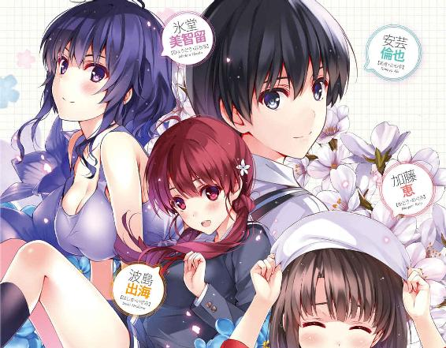
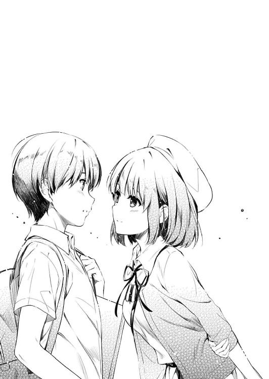

| 冴えない彼女の育てかた8<冴えない彼女の育てかた> (富士見ファンタジア文庫) | |
| 丸戸 史明 | |
| (2015) | |

冴えない彼女の育てかた８
丸戸史明

富士見ファンタジア文庫
本作品の全部または一部を無断で複製、転載、配信、送信したり、ホームページ上に転載することを禁止します。また、本作品の内容を無断で改変、改ざん等を行うことも禁止します。
本作品購入時にご承諾いただいた規約により、有償・無償にかかわらず本作品を第三者に譲渡することはできません。
本作品を示すサムネイルなどのイメージ画像は、再ダウンロード時に予告なく変更される場合があります。
本作品は縦書きでレイアウトされています。
また、ご覧になるリーディングシステムにより、表示の差が認められることがあります。
口絵・本文イラスト 深崎暮人
プロローグ
放課後の視聴覚室に差し込む夕陽が......
「と、倫也先輩のイトコさんですかっ!? よよよよろしくお願いします！」
......いやごめん。その前提から間違ってたわここ俺の部屋だわ。
「や～別にそんな大したもんじゃないから～。ただ同じ日に同じ病院で生まれて子供の頃から一緒にお風呂入って育っただけだから～。あはははは～」
休日の俺の部屋に差し込む夕陽が、春の温かい空気まで連れてきてくれる四月上旬......
「お、お風呂っ!? おふおふおふ......」
なんだけど、そんな陽光と同じように暖かな室内を、アウェー感いっぱいな、わたわたした声が駆け巡る。
この部屋で、こんな緊張感に満ちた声を聞くのは久しぶりだ......何しろ最近じゃ、俺の部屋に来ても誰も遠慮してくれないからなぁ。
「ま～ほら、あたしとトモは家族みたいなもんってゆ～か、気づいたら一番近くにいた異性ってゆ～か、男女の色んな違いを知るためのリトマス試験紙ってゆ～か～」
「そんな成り行き任せの試験なんかしてないから！ 人の顔色を青くしたり赤くしたりしないでよみっちゃん！」
......ほら、こんなふうに。
「は～、ここには色々と新鮮な驚きに満ちてます......」
「満ちてるのは驚きじゃないから。この部屋の生態系を壊す傍若無人な外来種だから」
「わ、わたしもいつかはこんなふうに染められていくんですね......倫也先輩と青い体験......じゃなくて試験したりとかっ」
「妙な解釈しないで変な染まり方しないで！ 出海ちゃんはいつまでも純情な乙女（ゲーマー）でいてくれよぅ!?」
そんな猥......いや対談に興じる二人のうち、こうしていちいち純情な反応を返してくる初々しい女の子の方は、この春から俺と同じ高校に通っている後輩。
中学時代から早熟な才能に目覚め、一度はコミケのシャッター前サークルのイラストレーターとして上り詰めた実力派同人作家。
なのに見た目は（そのボリュームはさておき）小動物のように庇護欲をそそられる可愛らしい懐き系。
豊ヶ崎学園一年Ｃ組、波島出海。
今は、部屋の隅でちょこんと正座して、興味津々な表情で部屋の中をきょろきょろと見回しているため、そのお下げにした髪と立派なお胸が、ゆらゆら、ぽよよんとロックに揺れている。
「波島ちゃんだっけ？ ま～トモの好みとか知りたいことがあったらなんでも相談に乗るから今後ともよろしくね～」
「は、はいっ、こちらこそよろしくお願いしますイトコさんっ！」
「な～にが俺のことならなんでも相談に乗るだ！ 今期アニメのヒロイン人気ランキングすら押さえてないくせにわかったようなこと言うんじゃねえ！」
「もうさぁ、トモもいい加減二次元ヒロインにこだわるのやめようよ。どうせあのコたち湯気や光で規制されて肝心なとこ映んないんだよ？ その点リアルならアニメで見えないところだって......」
「そんなもの見たくないもん！ あの見えそうで見えないところが最高なんだもん！」
だいたい湯気や謎の光などという安易な手を使わずにギリギリを表現しようとしている、尊敬に値する職人たちもいるというのに十把一絡げにしないで欲しい......というのはどうでもいいとして、そんなふうに、気だるげな雰囲気を醸し出しながらタンクトップの胸元をぺろんと開こうとする女の子の方は、生まれた時から俺と親戚関係にあるイトコ。
子供の頃から勉強以外なら何にでも豊かな才能を発揮し、高校に入ってガールズバンドのギター＆ボーカルという花形ポジションでブレイクした（一部に）人気のアーティスト。
なのに見た目......というか我が家での振る舞いに関しては、だらしないわ退廃的だわ露出度高いわで、いつもこっちを欲情......ではなく困惑させる堕落系。
椿姫女子高校三年四組、氷堂美智留。
今は、ベッドのど真ん中でショートパンツのくせに堂々とあぐらをかき、大きなボディアクションで会話に興じているせいで、その癖のあるショートヘアとタンクトップから張り出した形の整った胸が、ふわふわ、ぷるるんと揺れている。
「さて、それはそうと、こうして皆に集まってもらったのは他でもない......」
そして、そんな二人を招いている、この部屋のホストたる俺。
小学生の頃からオタクに目覚め、才能もないのに、ただの情熱を武器にメンバーを集めゲーム制作サークルを立ち上げた凡人プロデューサー兼ディレクター。
見た目は眼鏡キモオタ......から最近諸事情により眼鏡を外したキモオタ系。
豊ヶ崎学園三年Ｆ組、安芸倫也。
今は、部屋の真ん中で仁王立ちになり天井を見上げ拳を握りしめているため......いやまぁどこが揺れても見苦しいことこの上ないし、そんな話はいい。
とにかくそんな俺は、目の前の二人の女の子に対して、力強く、熱く、激しく宣言する。
「そう、今日皆に集まってもらったのはだな......新生『blessing software』の結成式を執り行うためだ！」
「わ～！」
歓声とともに、ぱちぱちと手を叩いて祝ってくれる出海ちゃん。
「............」
そしてフラットに......いや呆れたように俺の顔を眺める美智留。
「サークルを立ち上げた去年は、メンバーみんなの目を見張る頑張りもあり、処女作『cherry blessing ～巡る恵みの物語～』をリリース......さらにその作品は予想を遥かに上回る好評を得ることができた」
そんな、えらく対照的なリアクションを受けつつも、俺は粛々とスピーチを続ける。
「そして新年度を迎え、このたびめでたく、波島出海ちゃんという最強の新メンバーを迎え入れることができた！ これもこの一年間、地道に頑張ってきたことの成果と言えよう！」
「はいっ、わたし頑張りますっ！ 絶対に倫也先輩のお役に立ってみせますからね！」
「............」
俺の決意表明に、同じテンションで追随してくれる出海ちゃん。
そして、なんだか気まずそうにぽりぽり頭を搔きながらため息をつく美智留。
「というわけで、俺たち『blessing software』の、これからのますますの発展を祈って......」
「いやいや何言ってんのトモ？ 澤村ちゃんに霞ヶ丘センパイまでいなくなっちゃってサークル存続できると思ってんの？」
「いやぁぁぁぁぁぁぁやめてやめてやめてそれ言わないでぇぇぇぇぇぇぇ ！」
！」
「ああっ、先輩!?」
まるで狙い澄ましたかのように俺のメンタルを一突きにしてきた美智留の冷静な、そして当然の指摘に俺はもう......っ
そう、今日は俺たち〝新生〟『blessing software』の結成式。
ということはつまり、〝旧〟『blessing software』というのがその前には存在した訳で......
そこには、作品のビジュアルを担うエースであるところのキャラクターデザイン・原画を担当した柏木エリと、作品の土台を作り上げるキャプテンであるところのシナリオを担当した霞詩子という、二つの沈まぬ太陽が君臨していた訳で......
「ぶっちゃけ前のゲームってあの二人の人気で評判になったんだよね？ 今のこのサークル、飛車と角を失ったってよりも、王と玉を失ったって感じになってない？」
「あ、あ、あ......あああああ～！」
どっちが玉なのかは気になったけれど、その質問にも答えにも何の意味もないことに気づいた俺はもう......っ
「せ、先輩っ、落ち着いて、大丈夫、大丈夫ですよ......」
「え......？」
と、正鵠を射ぬかれてがっくり膝をつく俺の目の前に、二つの丸い物体が......
いや、俺の肩に手を置いて優しく見下ろす出海ちゃんの胸があった。
「先輩のサークルはなくなったりしない......ううん、わたしが絶対になくならせたりなんかしません！」
「い、出海ちゃん......っ」
その柔らかい胸......ではなく微笑みに、凍てつきそうになった俺の心がじわりと溶かされていくのがわかる。
サークルメンバーの中でも最年少で、しかもニューフェイスで、かつてのライバルで。
なのに出海ちゃんは、もうこのサークルにしっかりと根を下ろし、聖母のような立ち居振る舞いを見せてくれて......
「............ええ大丈夫です先輩。あんな女のことなんか、すぐに忘れさせてあげます」
「............出海ちゃん？」
と、しかし次の瞬間、その笑顔がじわりと黒く歪んでいく。
「澤村先輩は裏切った......倫也先輩を見捨てた......それだけでも万死に値します」
「あ、いや、別に、英梨々は商業の仕事が......」
「それでもっ！」
「は、はいっ!?」
出海ちゃんの背中から、黒い羽がぶわっと生えた......ような錯覚に囚われる。
それはまるで、ハイパーヤンデレ化したときの詩羽先輩のように......ってそういえば出海ちゃん、詩羽先輩については全然言及しないな。立場的には英梨々と同じなのに。
「裏切り者は粛清されなければならない......だからこんどもわたし、波島出海が、澤村・スペンサー・英梨々を......柏木エリを駆逐する......」
「君たち冬コミで仲直りしたんじゃないの!?」
「いいえ、先輩を苦しめる輩は誰であろうとわたしの敵ですっ」
「だから出海ちゃん妙な方向にキャラ立てるのやめようよぅ!?」
あと微妙にその詩羽先輩とキャラ付けが被っているのも問題だと思うんだ。
だって、ほら、同じ属性で戦うには、あっちはキャラが強すぎるし......
「でもま～あれだよね。あの二人が出て行っちゃうのはしょうがないよね～」
そんなふうに、出海ちゃんの将来（の人気）に思いを馳せていると、今度は美智留の方が俺を慰めようとしたのか、気遣わしげに肩をぽんぽんと叩いてくる。
「しょうがないって何でだよ？ あと蹴るな」
......問題なのは、その肩を叩いてるのが手じゃなく素足ってとこだけど。
「だってさぁ、あの二人って、サークル内の生存競争に負けたようなもんじゃん。ま、あたしはトモの家族みたいなもんだから巻き込まれずに済んだけど」
「生存競争って、どういうことだ......？」
「つまりさぁ......」
と、美智留が意味ありげに部屋の扉の方に目を向けると......
「はい、乾杯の準備できたよ～......って、どうしたのみんな固まっちゃって？」
その瞬間、扉を開けて入ってきたのは、エプロン姿のショートボブの女の子。
手に持ったトレイには、どうみても手作りのオードブルが盛られた皿と、四人分のグラス。
その姿も態度も、なんだかとても自然にこの家に溶け込んでいるように見えて......
「要するにあの二人って加藤ちゃんが追い出したんでしょ？ 正妻の制裁ってゆうか～、あっはははははは～」
「め、恵さんが......っ!?」
「えっと、今までの会話聞いてないから推測でしか言えないけど、わたしに腹黒属性つけようとするのいい加減やめてくれないかな？」
空気を読めず......いや、もしかしたらわざと読まずに、きょとんとした表情で、自分に注目する人々の視線を受け止める。
こいつ、もしかして本当に......
「あと、安芸君までわたしに対してそういう疑惑の視線を向けるのは色々とどうかと思うんだけど」
「っ!? ごめんなさいごめんなさいごめんなさい！」
「......ついでに、そこでわたしのこと怖がってるような態度取られるのもなんか嫌」
去年までは『あ、いたんだ』というオチ要員としてステルスに活躍していたけれど、今年になって『実は怒らせたら相当怖い』という事実が白日の下にさらけ出された旧クラスメイト。
なのに見た目は普通の美少女という以外の表現が思いつかないくらい、ふっつ～に可愛い女の子。
豊ヶ崎学園三年Ａ組、加藤恵。
今は、皆の自分を見る目に多少辟易しつつも、相変わらずその程度のことではビクともせずに、フラットにテーブルに皿を並べ始めている。
「出海ちゃん、グラスにお茶注いでくれないかな？」
「は、ははははいっ！ お任せください恵さんっ！」
「......だから氷堂さんの言うこと真に受けるのやめてよ」
で、そんな加藤がてきぱき動くと、部屋の様相と雰囲気があっという間に変わっていく。
テーブルの上に食べ物と飲み物が並び、散らかっていた部屋が適度に片付き。
そして何故だか皆、加藤を前にしては、素直にそれらの準備を手伝っていたりする。
......いや、この部屋って誰のよ？ このサークルの代表って誰だよ？
「ほら安芸くん、乾杯の音頭」
「お、おう......」
「しっかりね、代表さん？」
「......ぉぅ」
などと釈然としない思いを抱きつつあるところに、さり気なく染み入る加藤の気遣い。
これがこいつのステルス人心掌握術だというのか。さすがは腹黒......いや何でもない。
「えっと、じゃあ、俺からほんの少しだけ」
加藤に促され立ち上がる俺を、今度は誰も茶化さずに見上げてくれていた。
「確かに美智留の言う通り、俺たち『blessing software』は、ついこの前まで存続の危機に直面してた」
だからまぁ、今はサークル代表として、真剣に、（俺にできる範囲で）カッコ良く決めなくちゃならない。
「苦しいことや辛いこと、伝わらないこと、思い通りにいかないこと、色々あって、大事な仲間を二人も失ってしまった」
それが、かつて一緒に頑張ってくれた、仲間だったひとたちへの意地だから。
「けれどそれ以上に、嬉しいことや楽しいこと、言葉にしなくても伝わったこと、思いが通じ合ったことだってたくさんあって、経験とか記憶とか、すごく大きな財産を手に入れることもできた」
それが、今から一緒に頑張ってくれる、仲間であるひとたちへの宣言だから。
「だから今日は、そんな今まであったこと、全てひっくるめて、素直に祝おう」
そして、その中でも......
俺と同じくらい、いや、俺以上に必死に仲間を繫ぎとめようとした、最初から最後まで仲間でい続けるひとへの約束だから。
「俺たち、第二次『blessing software』の、新しい船出に......乾杯」
「「「かんぱ～い」」」
四人の笑顔が弾け、四つのグラスが弾ける。
それは、ペットボトルのお茶で交わしたリーズナブルな誓いだったけれど。
でも、その想いは固く、強く、濃く......
俺たち『blessing software』を、しっかりと結びつける絆となる。
「こ、これからよろしくお願いします！ えっと、先輩の小姑さんっ！」
「あんた実は人に喧嘩売る才能あるよねぇ、トモのコバンザメちゃん？」
......えっと、今度こそ空中分解しないよな大丈夫だよな？
第一章 あらすじ紹介文の時点ではここまでしか出来てませんでした
「よっ、倫也！」
「喜彦か......」
朝のホームルーム前、次々と生徒たちがなだれ込んでくる三年Ｆ組の教室。
そんな、少々の声なんか簡単にかき消されてしまいそうな喧騒の中、いつもの空気を読まない脳天気な通る声をかけてきたのは、上郷喜彦。
「今年も同じクラスだな！」
「その会話は先週の始業式でもう済ませただろ」
というか、去年の時点でもう済ませていた。
そう、この喜彦こそ、一年Ａ組、二年Ｂ組、三年Ｆ組と、俺と三年間ずっと同じクラスになった、男女含めて唯一の奴だ。
......ていうか、こんな因縁も何もない単なるオタ友だけが俺の唯一の存在だというのも嫌な意味でリアルだな、おい。
「で、何書いてんだ？ 冬アニメの総評か？ それとも三月売りラノベのレビューか？」
「お前、三年になっても俺と真面目に会話する気ないだろそうなんだろ」
またしても一年前とまったく同じ質問を飛ばしつつ、喜彦はこっちの会話に集中していないふうに窓の外を見る。
「んなことないって。だいたいお前、最近ブログ更新しないし、こっちは新作情報に飢えてんだよ」
「俺も忙しいんだよ色々と......情報は自分で探せ。自分の足でも耳でも、ネットでもいい。ただしネットの場合、二次ソースは信用するなよ。必ず一次ソースに辿り着け。伝聞だけで判断するな。恣意的な編集に惑わされるな。そしてこれが一番重要だが、アフィリエイトに手を出すな」
「......その最後のって必要か？」
「ま、そんな訳で、今年の俺はあんまアテにしないでくれ。多分、消費型オタクとしての活動はかなり控えめになると思うから」
「なんだよ脱オタか？ まさか初めてできた彼女にオタクグッズを無断で全部捨てられてやむなく脱オタせざるを得なくなったとか、そういう情けない理由じゃないだろうな？」
「違うもん！ そんなことされたらたとえ彼女でも別れるんだもん！」
別に喜彦の言葉にトラウマを刺激されたとかそういうことは全然なく、俺は冷静に、するっとその質問を躱してみせた。
だいたい、それをやられたのは彼女じゃなくてイトコだからセーフだ。
「いいか喜彦？ これはな、とても重要なミッションなんだ......俺がオタクとして一段上のステージにのし上がるに相応しい超特大プロジェクト......」
「お、おい、見ろよ倫也......」
「いや、だからお前な？ 三年になってまでその態度はな？」
「い、いや、けどさ......」
と、相変わらず友達としてとてもとてもとても誠意のないリアクションに呆れつつ喜彦を見上げると、奴は窓の外ではなく、教室の中......詳しく言えば、俺のすぐ右隣を指差していた。
そして、そこには......
「おはよ、倫也」
「お、おぅ」
......小柄な金髪ツインテールの少女が、いつの間にか立っていた。
「上郷君もおはよう」
「お、おおおおおおはようごじゃいまふ澤村さんっ！」
その彼女の、想定もしていなかった『おはよう』に、喜彦は指していた指の行き所をなくし、わたわたと両手を振りながら妙な挨拶を返す。
しかし慌てられた彼女の方はといえば、そんな素っ頓狂なリアクションにも慣れた感じで、何事もなかったかのように自分の席に腰掛ける。
......そう、俺の隣へと。
そんなふうに、フラット......いや過剰でも過小でもなく普通の女子高生的に振る舞っている女の子は、今年から同じクラスになった同級生。
小学生時代からオタクに目覚め、中学の頃にはすでにコミケの壁サークルに上り詰めた、出海ちゃんよりもさらに早熟な才能を持つ一八禁同人作家。
なのに見た目は（その貧相......小柄な体型にもかかわらず）、まるで金持ちのお嬢様のように......いや実際金持ちのお嬢様だけどさ。
豊ヶ崎学園三年Ｆ組、澤村・スペンサー・英梨々。
今は、自分の席に座り、周囲の生徒からの絶え間ない『おはよう』にいちいち全部応えてるせいで、その特徴的な金髪ツインテールがふわふわと揺れている。
「お、おい、見たか倫也？ さ、澤村さんが、俺に挨拶......っ」
「いや誰にでもしてるだろ今」
喜彦が、気を遣って小声でありながらも、明らかに興奮した面持ちで俺に迫ってくるのも無理はない。
「け、けど、けどさっ、あの澤村・スペンサー・英梨々だぜ？」
「ああ、たかが澤村・スペンサー・英梨々だ」
一年Ｆ組の頃の、二年Ｇ組の頃の澤村・スペンサー・英梨々は、そりゃもうレジェンドだった。
外交官であるイギリス人の父を持つ、日英ハーフのブルジョワ。
さらに絵画に多大な才能を発揮し、一年生の頃から美術部のエースとして君臨。
そんな肩書きと見た目通りに、全身から、見るものを思わず一歩引かせるほどのお嬢様オーラを放ち......
だから、そんな彼女に話しかけられるのは、一部の勇気ある同級生か、運よく同じ部活に所属していた美術部員のみ。
......というのが、去年までの通説だった。
「なぁ倫也、改めて聞くけどさ、お前、本当に彼女と......」
「ああ、小中学校と同じだったぞ。別に隠してたつもりもないけどな」
「い、いや、それだけじゃなくてさ......」
「家だって近所だ。俺の家から見える丘の上の屋敷だ。聞けば教えてたぞ」
「そうやって不自然にしらばっくれようとしたら、逆に炎上するのがオチだぞ？」
「......んなことより、ほら、予鈴鳴ったぞ」
そんな彼女に、今年の初めあたりから、ちょっとばかり妙な噂が立った。
曰く、『豊ヶ崎二大美女改め、豊ヶ崎ナンバーワン美女と、豊ヶ崎ナンバーワンクソオタクとの不適切......いや不思議な関係』というものだ。
冬コミ......冬休みが終わってから、俺と英梨々の関係に、微妙な......というには大きめの変化が訪れた。
今まで校内で会っても、（視聴覚室以外では）会話どころか目を合わせたりもしなかった英梨々が、いきなり俺と並んで通学路を歩くだけでなく、（視聴覚室の時みたいに）妙にくだけた態度で接する様は、それはもう卒業の迫った三年を除く全校生徒を混乱の極みに追い込んだ。
何しろ、その英梨々の怒り顔や拗ね顔や笑顔は、彼らが二年間遠くから眺めてきたときにはついぞ見ることのできなかったもので。
しかもそれを引き出しているのが、この、校内で一番彼女と距離が遠いと思われていた俺だという事実が、彼らの戸惑いに拍車をかけた訳で。
しかもしかも、そんな疑惑を持たれていた二人が、三年に進級時にまさかの同じクラス、しかも隣同士の席になったとなれば......
しかもしかもしかも、同じクラスで隣同士の席になった春休み明けから、またしても二人の距離感が変わり、『あれ？ なんかまた微妙に距離を置いてね？』みたいな雰囲気を醸し出しているとなれば、そりゃもう彼らの頭の中は『？？？』で満たされている訳で。
......と、まぁ、それ以上の語り切れない事情については、様々な過去文献に詳細に記載されているので参照して欲しい。
あ、参考文献の補足資料も併せてよろしく。
と、俺がそんな、色々と思い出したくもない事件も含まれる最近の出来事に思いを馳せていると......
「......ん？」
俺のスマホが震え、メッセージの着信を伝えてくる。
『新作、進んでる？』
「............」
そんな、世間話みたいな雑談ネタをわざわざ電波に乗せて送ってきた隣の席の奴に、俺が怪訝そうな目を向けると......
「............」
そいつは、わざとかってくらいこちらには目を向けず、フラットな表情でスマホを弄って......いやその表現は別の奴の専売特許だから表現を改め、まぁ意識的に、こっちに無関心な態度を装っていた。
『まだプロットのチューニング中だ』
とりあえず、直接話しかけられない事情をある程度は鑑みて、俺の方もスマホ経由でメッセージを返してみる。
『そう、頑張ってね』
すると、待っていましたとばかりに次の言葉......いや文字が返ってくる。
で、そこまでレスポンスが速いと、こっちも色々と急かされてるみたいな気分になり、慌て気味に次のメッセージを返す。
『言われなくてもな』
『なにその言い方？ もしかして突っかかってる？』
すると、その脊髄反射的な内容が気に食わなかったのか、今度の即レスは、なかなかに棘が含まれていて。
で、こっちとしては、無駄な衝突は避けるべしという賢明な判断をもって、なるべく穏便に、言葉を選んでメッセージを返す。
『いや、全然、まったく、これっぽっちも突っかかってなんかないぞ？』
『ほら、やっぱ微妙に嫌な言い方。あんたまだ根に持ってんの？』
だがしかし、向こうはもう完全にバイアスがかかっている様子で、何を言っても言い争いに発展しそうな雰囲気になってきた。
......いやほら、俺悪くないよな？ 無難なレス返してるよな？
『何よ倫也！ あんた許してくれたんじゃないの？ この前東京駅で言ってくれた言葉ってあれ噓だったの!?』
『こっちだって完全に消化するのに時間かかんだよ。わかれよそんくらい！』
あ～、ほら、文字媒体によるやり取りってさ、微妙なニュアンスが伝わらなくて、よくこういう意図しないすれ違いが起こるよね？
いや、本当に意図してないよ？ 少なくとも俺の方はさ。
......本当だって。根に持ってなんかいないって。
「あ～、東京駅って言えば思い出した！ あんたあの時のアレってどういうことよ！」
「アレってなんだよ？ ハッキリ言ってくれなきゃわかんないだろ！」
「だからアレよアレ！ ほら、その......霞ヶ丘詩羽とっ！」
「あ、アレは......いやアレはほら、アレでしょアレ！」
「そんなママみたいなこと言われてもわかんないわよっ！」
と、そんな文字媒体による不毛な争いを続けていたところ......
「あ～......どちらかと言えばわたしたちの方がわかんないんだけど......」
「あ......」
「あ......」
とうとう、俺たちの言い争いは文字を超え、教室内の皆の心に直接伝わる言霊となって響き渡り......
いや、いつの間にか二人して大声で言い合っていたりして。
今年も俺の担任になっていた佳乃ちゃん......蓮見佳乃先生が、そんな俺たちをビビりつつ見つめていた。
いや、見つめていたのは佳乃ちゃんだけでなく、それはもう全方位からの痛い視線をズキズキと感じられるくらいに全員からガン見されていて。
「............」
「............」
そんな訳で俺と英梨々は、今まで味わったことのないくらいに気まずさを抱えたまま、無言で席に座り直す。
なんてことだ......とうとう、とうとうやっちまった......
あ、いや、英梨々との大人げない喧嘩とか、それが周囲にバレてしまったとかいう事件もそうなんだけど......
それよりも、『学園モノだけど学園モノっぽい描写が出てこない』というのがウリのこの作品で、よりにもよって、こんなベタな学園イベントをやってしまったことの方が、俺にとっては痛恨だった訳で。
※ ※ ※
「な～喜彦、帰り、久しぶりにアキバ寄ってかないか？」
そして放課後......
さっきはほんの少しだけヘマをしたが、それでも、何が何でも授業中の描写だけはしないぞという妙な矜持に従い、放課後の教室。
三年になって、ますますついていけそうにない授業の洗礼を受けた俺は、その疲れを少しでも癒すべく、左隣の席の喜彦に声をかけた。
「い、いや、けどさ......」
「なんだよ？ 用事でもあるのか？」
しかし、そんな俺のありがたくも慈悲深いお言葉にもかかわらず、喜彦の方は妙に余所余所しい遠慮がちの表情で、困ったように俺を見る。
もしかしてこいつ、俺が一ランク高い生産型オタクに成長しようとしているのを敏感に察知して、いつまでも成長しないにわか消費型オタクである自分の器が俺に釣り合わないって思ってるんじゃ......
「......お前のそのどうしようもなく屑っぽい上からな思考が滲み出ている表情からお前が何を思っているかは想像つくけど、そういう理由じゃないからな倫也」
「え～」
と、喜彦は俺に対してどうしようもなく屑っぽい上からな言動をかますと、やっぱり遠慮がちに、俺の方を......いや、俺の背後の方を、ちらりと見やる。
「......まぁ確かに、お前を色々と問い詰めたいのは山々だけど、どうやら今日はそれどころじゃなさそうだしな」
「え......」
で、さすがに喜彦のその視線の方向の意味を察知できないほどアレでナニなヘタレ超鈍感難聴主人公とは一線を画す俺は、敏感に察して後ろを振り向く。
「あ、あのさ、倫也」
「お、ぉぅ」
......と、そこには、とてもとても何か言いたげな金髪ツインテールの少女が一人。
「......授業中からずっとガン見されてただろお前、気づけよそんくらい」
「やかましい」
後ろからの喜彦のやっかみっぽい戯言を受け流し切れずにいつつ、なんか色々と言いたげな英梨々に対峙する。
......いや、まだクラスメイト全然帰ってないのに、いいのお前？
今まで頑なに守ってきた自分の超高級ブランドイメージどうするつもりなのお前？
「あ、朝の、ことなんだけどさ」
「は、はぁ？」
「そ、その、あたしも、ほんのちょっと......微妙～にだけど、悪かったかなって」
しかも朝の、たかが俺とのあんな些細な言い合いのことをえらく根に持って......ていうか気にしてる素振り。
なんなのこの、急に弱々しい殊勝な態度を見せる小動物系ツンデレ反応？
かまってかまってかまってくれなきゃ死んじゃうぞ的なウサギの視線？
「け、けど、あんただって......もうちょっと言い方に気をつけてくれたらさぁ」
「いや、そりゃ俺だって態度悪かったに決まってるだろ？ 拗ねてたに決まってるだろ？ オタク特有のねちっこくてうざい根の持ち方してたに決まってるだろ？」
「そ、そうだよね？ お互い様だよねっ」
「どっちかが一方的に悪い喧嘩なんて、この世に存在しないだろ......そんなのはタダのいじめだ」
「う、うん......あたしたちがしてたの、喧嘩、だもんね」
そして、その些細なすれ違いが解けそうっていう予測だけで、そんなに嬉しそうな表情をされるのも色々とマズい。
これではもはや、あの完璧お嬢様、皆の憧れにして、豊ヶ崎ナンバーワン美少女、澤村・スペンサー・英梨々のイメージが崩れるのは時間の問題な訳で......
「そ、それじゃあさ、倫也......今日、一緒に帰......」
「あ～、いたいた～！ 倫也せんぱ～い！」
「え？」
「え？」
そして英梨々が、さらに強烈なイメージ崩壊を招きかねない言動を口にしかけた瞬間......
その明るくて、無垢で、純粋で、（多分）何の悪意もない声が、教室の入り口の方から響いてきた。
しかも......
「ほら、あそこにいるのがわたしの先輩......サークル代表の倫也先輩だよ！」
「へぇぇぇ～」
「あの人が、波島さんの......なんだ～」
「......え？」
「......え？」
いや、最初に声を掛けてきた人が誰なのかは、すぐに思い当たった。
そりゃまぁ、この学校で俺のことを『先輩』などと殊勝な呼び方をしてくれる女の子は、思い当たる範囲では一人しか存在しないし。
「い、出海ちゃん......どうしたの？」
けれど、その殊勝な女の子......出海ちゃんの後ろに、さらに二人の、こちらも後輩らしき女の子が連れ立っていることはまるで想定の埒外で。
「えへへ......わたしの先輩を見せびらかしに来ちゃいました～」
「なっ......」
「なっ......」
しかも、その口から語られた理由がまた、衝撃の展開過ぎて。
「し、新入生の女の子が連れ立って倫也のところに......くそぅ、これがアレか？ ギャルゲー世界や乙女ゲー世界によくあるギャップ萌えって奴か？ 眼鏡を外してコンタクトにすることで、今まで目立たなかったオタク男子がたちまち皆の注目の的って奴なのかぁぁぁ～」
......かと言って、ここまで大げさにショックを受けられると後ろ足で蹴りでも入れたくなるけど。
だいたいギャップも何も、三人のうち二人は初対面だっての。
「な～んて、実は二人とも、わたしがゲームサークルに入ってるって言ったら、ぜひ話を聞きたいって言うから連れてきちゃったんですけど」
で、まぁ結局、ここでよくあるパターンの『期待を持たせておいてのがっかりなオチ』って奴が、出海ちゃんの口から語られた訳だが......
「サ、サークルに......興味？」
「あ、はい......波島さんと同じクラスの、野崎美奈です」
「古橋真奈美ですっ。あのあのっ、ゲーム、冬コミで出したんですよね？ なんかすっごいな～って」
「え、え、え？」
そのオチが全っ然落ちてなくて、まるでガッカリ感を感じさせないってのがもうね。
「ね、倫也先輩、そんなわけだから、もしよかったら、今からサークルの説明会とかやっていただけませんか？ ほら、部室っていうか、視聴覚室で！」
「せ、説明会......っ!?」
「ほら、だってもしかしたら、サークルに入ってくれるかもしれないじゃないですか！」
「あ、え～と......まだ決めてはいないんだけど」
「でもでもっ、面白そうだな～ってのは思ってて～」
「そ、そうなのっ!?」
なんなんだこの確変は......？
これはまさかの、ギャルゲー世界によくある夢オチ展開......ってまぁアレは色々なしがらみのせいで絶対攻略できない実○キャラのおまけエッチシーンで発動するケースが多いからこのケースでは......ってそんなことはどうでもよくて。
これは、ついこの前弱体化してしまった『blessing software』にとって、千載一遇のチャンスなのかもしれない。
だってほら、ここで一気にメンバーを増やして、皆で力を合わせて冬コミを目指し、あるとき古参と新参の間に深刻な軋轢が起きて、またしてもサークル空中分解......
いやいやいややめよう。そういうネガティブなあるあるネタに浸るの今はやめよう。
「ちょ、ちょっとちょっと、波島出海っ！ ......さん」
と、そんなふうに妙に盛り上がっているところに割り込んできたのは、俺にそんなトラウマを植え付けた張本人......
いやだからそういうネガティブな思考に染まるのやめようってゆってんじゃん。
「あれ......澤村先輩、いたんですか？」
「はうっ......」
いや絶対気づいてたよね？ さっきから出海ちゃん、こっちに話しかけつつも、ちらちらと俺の横の金髪先輩何度も見てたよね？
「は、波島さん、あなたね、友達をそんな泥沼......じゃなくて、変なサークルに勧誘するのやめてあげなさいよ。可哀想でしょう？」
そして、そんな出海ちゃんの先制パンチを食らいながらも、英梨々はなんとか踏みとどまり、去年までのお嬢様モードを引っ張り出して対抗する。
いや、それはそうと貴女、去年までその変なサークルのメンバーでしたよね？
「そんなっ、どうして可哀想だって言い切れるんですか？」
「だ、だって、ほら......ゲームなんて、そんな簡単に素人が作れるようなものじゃないし」
「でも倫也先輩だって、最初は素人だった......それが一年も経たないうちに、冬コミで伝説を打ち立てるほどのゲームを作り上げたんですよ？」
「あ、あれはっ！ ......あたしが......あたしと、霞ヶ丘詩羽が......」
「え、英梨々......？」
そんな、出海ちゃんと英梨々の、竜虎というより蛇蛙な睨み合いを眺めつつ、出海ちゃんのクラスメイトＡさんとＢさんは、『え～』とか『すご～い』とか、いかにも加藤......いやモブっぽい台詞を発している。
「わたし、少しでも先輩のお役に立ちたいんです。まだ入って間もないけど、それでも『blessing software』を盛り立てていけたらなって思ってるんです」
「で、でも、でもっ、非オタ......じゃなくて、素人の女の子をいきなりオタクサークルに引きずり込むなんて......」
「あの、でもわたしたち、そこそこはオタクですよ？」
「そうそう、深夜アニメだって見てるしね～」
「ぇ......？」
「そ、そうなの？」
で、そんなモブっぽ......いつかはメインヒロインになれるかもしれないＡさんとＢさんの『普通にオタやってま～す』的なカミングアウトは、俺たちに少なからぬ衝撃を与えた。
「はいっ、わたしたち、クラスの出席番号の並び順で知り合ったんですけど、始業式のときからいきなりオタク話で盛り上がっちゃって！」
「............」
「............」
そして、こうしてあっさり、すぐ近くでオタ友を作っている出海ちゃんを、なんともいえない表情で見つめてしまう。
迫害を恐れて隠れオタクをやってきた英梨々にとっても。
迫害されつつ必死にオタクを続けてきた俺にとっても。
彼女たちの関係は、なんだか想像もつかないものだったから......
「それでも駄目ですか？ オタクサークルに、興味を持ったらいけないんですか？」
「っ！」
「あ......」
そんな出海ちゃんの真剣で、まっすぐで、純粋で......
そして、眩しすぎる態度に、とうとう耐え切れなくなった英梨々が、逃げるように教室をあとにする。
ほんの少しばかり、頭から白い煙を噴き出しつつ（イメージ）。
『こ～れ～で～勝ったと思うなよ～！』などと捨て台詞を残しつつ（だからイメージ）。
「......先輩？」
「うん？ なに出海ちゃん？」
「それで、えっと、サークルの説明会ですけど......」
「あ、ああ......そうだな、じゃあ行こうか、視聴覚室」
「いいんですか？ その、澤村先輩......」
「出海ちゃんがそこを気にするんだ......」
「そ、それはそのっ......さすがにちょっと言い過ぎたかなって......」
「ま......別にいいんじゃない？」
「そんな無責任な......」
「だから出海ちゃんがそれを......」
ま、確かにたった今、半泣きで逃げ出した英梨々の、その負け犬丸出しの後ろ姿が、ほんの少しは気にならないでもなかったけれど。
それでも今の俺は、そんな心配とともに、なんだか少しの希望を見出していたんだ。
英梨々は、三年になって『変わりつつ』ある。
喜彦みたいに下々の......いや面識の薄い男子にも普通に接するようになった。
誰にでも愛想はいいけど近寄りがたい、畏れ多いお嬢様の仮面を被らないようになった。
つまらない世間話には退屈そうに、けれど楽しい話題には心の底からにこやかに。
そんなふうに、少しずつ本性を現し始めてた。
飾るのを、やめようとしてた。
だからきっと、半年も経てば、そこに『澤村さん』というお嬢様はいなくなり。
そして三年Ｆ組には、クラスメイトの『英梨々』が浸透していることだろう。
そんな『英梨々』が進むべき道のヒントが、今のこの、出海ちゃんとクラスメイトたちの関係にあるんじゃないかって。
英梨々の処世術でも、俺の布教術でもない、日常的なオタクライフが、あいつにも待ってるんじゃないかって、希望が持てたから。
※ ※ ※
「あ」
「あ......」
「......恵」
「......うん」
「い、今、帰り？」
「えっと、まぁ......」
「そ、そう......」
「............」
「............」
「じゃあ」
「あ......」
第二章 たとえ出番が少なくたって、十分目立ってますよね？ ね！
「あ......」
サークル説明会も終わり、疲れた足を引きずって下駄箱を出ると、校庭は沈みかけの夕陽に照らされて赤黒く染まっていた。
そろそろ運動部の活動も終わり、後片付けの部員たちで微妙に賑わうその場所は、まるで青春映画の一場面のように瑞々しく、そして何故か懐かしく感じられる。
とはいえ、俺のさっきの『あ......』は、そんな情景に感嘆した訳ではなく......
「詩羽先輩......」
視線が校庭を突っ切ったその先、校門のところに佇む、一人の女性をその目に捉えたからだった。
そう、そのひとは、校門のところに佇んではいるものの、女生徒ではなく、女性。
いつからそこにいたのか、ごく自然に門柱に背中を預け、帰宅していく他の生徒たちの視線をものともせず、〝いつものように〟読書に没頭している。
この春から、俺と同じこの豊ヶ崎学園に〝通わなくなった〟先輩。
高校時代にある出版社の新人賞を受賞して小説家デビュー、処女作がシリーズ累計五○万部を突破し、次回作も順調な滑り出しを見せ、その名声を着々と固めつつある人気作家。
なのに見た目は、作家というよりは、その作品の登場人物かと思わせる容姿と長い黒髪と、胸......というかプロポーションを持つ美人。
早応大学文学部一年生、霞ヶ丘詩羽。
その彼女は、たった今、ちらりとこちらに目をやると、読みかけの本を閉じ、ポケットからスマホを取り出して......
「うあ......」
『何やってるのよ倫理君。さっさとこっちに来なさい』
「はい......」
そして、五○メートル離れたところから、俺に電話を掛けてきた。
「どうしてすぐ来ないのよ？ 慌てて駆け寄ってきて『よっ、待った？』なんてフランクに呼びかけてきてくれれば『ううん、全然、きゃぴっ♪』なんて答えながら腕を組んでイチャイチャ歩き出すのに」
「そういうことしないこと知ってるけどそういうこと言われるだろうから近寄れなかったんだよ！」
詩羽先輩は、俺が校門まで辿り着くと、もちろん花が咲いたようにぱぁっと笑顔になったりきゃぴっ♪ とか言ったりせず、とても不機嫌そうに俺を責めてきた。
「だとしても、人を見つけておいてその場を動かないとかどういう了見かしら？ せっかく出待ちしている女に対して失礼だと思わないの？ あのままでは私、五時間以上も待ちぼうけ食らわされて閉門時間になって守衛さんに心配されつつしくしく泣いているところだったわ」
「いや、まぁ......ごめんなさい」
「......ま、立ち止まるだけで逃げなかったことだけは評価してあげるけど」
「......ども」
ちなみに、これだけ散々怒られたり突っ込んだり拗ねられたり反論したりしてるけれど、未だに俺の顔は、彼女の正面を向けていない。
反抗するふりをして横を向いたり、呆れたふりをして空を見上げたり、謝ったふりをして俯いたり......
「人と話しているときはちゃんとこっちを見なさい」
「うわぁぁぁっ!?」
などという俺の逃げを許さず、俯く俺の目の前に、詩羽先輩の上目遣いの顔がアップでばーんと登場し......慌てて飛びのいた。
「それじゃ行くわよ......お茶くらいは付き合ってくれるでしょう？」
「うん......」
まぁ、先輩の方も、俺のその態度の理由に十分心当たりがあるせいか、それ以上は責めてはこなかったけれど。
そして学校から駅へと続く道。
俺を待つ様子もなく、けれど俺がついてくることを確信しているふうに、詩羽先輩がさっさと先に歩いていく。
俺は、その後ろを、並ぶでもなく、遅れるでもなく、一歩だけ下がったまま、のこのことついていく。
そんな、たった一メートルの至近距離から、彼女の長く艶やかな黒髪がふわりと揺れるさまをぼうっと眺めながら。
その姿が前以上に大人びて見えてしまうのは、お互いの立場が変わってしまったからなのか。
それとも、お互いの関係が（何故か）変わってしまったからなのか......
いや、だってほら、〝あの瞬間〟からまだ一月も経ってない訳で。
アニメやドラマだったら、今ごろ画面は〝あの瞬間〟の回想シーンがスローモーションかなんかでバッチリ流れているくらいにインパクトの強すぎるイベントだった訳で。
今でも目を閉じれば、詩羽先輩の柔らかで温かで艶めかしい唇の感触が......いやあの瞬間頭の中真っ白になって記憶全部すっ飛んでったけどな。
※ ※ ※
そしてまぁ、その十数分後。
いつものログハウス風の喫茶店に、俺たちの姿はあった。
「あ、あのさ、詩羽先輩......」
「なぁに？」
「......え、えっと......大学、どう？」
「行ってないわよ？ どうせ今はオリエンテーションだけで講義がないもの」
「いやいやオリエンテーションこそ行こうよサボるなら講義にしようよ!?」
いやどっちもサボっちゃいけないんだけど本当は。
「いいのよ、どうせ『早応大中退』の肩書きが必要だっただけだもの。出版業界人のステータスとしてね」
「嫌な認識されてるなぁ早応大......」
まぁ実際、早応大からあの業界に入る人たちは、主に在学中のバイトで作った人脈や実績を活用してるっていうし、それにバイトが忙しくて単位なんか取ってる暇ないっていうしな。
なおソースは不死川書店副編集長の町田苑子氏（早応大中退）だ。
「そ、それでさ、詩羽先輩......」
「だから、なぁに？」
「いや、だからね？」
「ん？」
「............」
「何よ、そのウジウジしたまま中々本題に入らなくてユーザーをイライラさせる最低最悪のヘタレ主人公みたいな態度？」
「いやいやなるでしょヘタレ主人公！ この状態だとさぁ！」
と、俺はさすがにこれ以上羞恥心の呵責に耐えきれず、自分の右手をぶんぶんと振り上げた。
......と、さっきからずっと握ったまま離れない詩羽先輩の両手も一緒にぶんぶんついてくる。
なおテーブルに座って以来、注文している時もずっとこの状態だったせいで、未だに水の一口も飲めてません。
「そろそろ一五分か......ま、倫理君の倫理観だとこんなところかしらね」
「すいません嫌じゃないんですそういう訳じゃないんですが～！」
ただ、マジであんなことがあった後なせいで、一秒ごとに一日寿命が縮まっていく感覚に囚われているだけで。
「いいのよ、私に恥をかかせないために頑張ってくれたのよね？」
「う、詩羽先輩......」
「それじゃ最後に、ここの性欲を刺激するツボを押さえて......」
「やめてやめてやめて!?」
「はぁっ、はぁっ、はぁぁ......っ」
てなわけで、ようやく詩羽先輩の必殺技（技名：幸せ固め）から逃れた俺は、とりあえず心を落ち着けるために、とっくに冷めてしまったコーヒーを一口すすり......
「でも、会ってくれてありがとう......私、あなたにどれだけ酷い行為を求められても拒めないことをしたというのに」
「ぶほっ!?」
そして盛大にむせた。やめてもうやめて。
「そうね、例えば、『今から詩羽先輩は、この場で○○○を脱ぎ、さらにこの×××を着けたまま公園を犬の格好で散歩するんだ......そうそう、その×××だけど、いつスイッチが入るかわからないけど我慢してね？』なんて下卑た笑いとともに命令されたとしても......」
「そういうこと求めたりしないから俺まだ一七だから！」
「そう？ それじゃ一八歳の誕生日を心待ちに......」
「それでもまだ高校生だから！ エロゲー購入だってできないから！ そもそも一八になっても求めないから！ というか心待ちってどゆこと!?」
スキンシップの次は言葉責め......レベル高すぎです詩羽先輩......
「なんてね、ごめんなさい。実は私も気まずくて、どう接したらいいのかわからないからこんなことを......」
「だとしても、もうちょっと普通に気まずさを表現していただけたら助かります！」
というかどう見ても、のびのびと俺をからかっているようにしか見えないんですが......
「そう、波島さんが新メンバーの候補をね......」
「まぁ結局、大変そうだからって入ってくれなかったんだけどね」
「どうせ彼女と倫理君で、同人について暑苦しく語り過ぎたんでしょう？ それで相手をドン引きさせてしまって」
「すいません見てきたように正確な状況を言い当てるのやめてください」
で、そんな気まずさ（？）をなんとか乗り越えた俺たちは、少しずつ会話に花を咲かせ始めた。
一月前に、あんなにショッキングな決裂をした俺たちだったけれど......ってよく考えたらここってまさにあの時の現場じゃん！ よく躊躇せずに入ったな俺も詩羽先輩も。
「そう、澤村さんと同じクラスねぇ......それは色々と気まずいでしょうね」
「いや、別に......そりゃまぁ、まだ時々言い合ったりはするけど、でも、あいつの決断を尊重するって決めたのは俺だし」
「あなたはそれでいいかもしれないけれど、誰もがそれで納得できるって訳じゃないでしょう？」
「それって......」
「話は変わるけれど、加藤さんは元気にしてるかしら？」
「ねぇそれ本当に話変えてる!?」
話題は主に、サークルの......『blessing software』のことに終始した。
最近の動向、新作のこと、新メンバーのこと、そして、残ったメンバーのこと。
そりゃまぁ、それがお互いにとって一番通じやすい話題ってのはあるけれど。
でも、彼女はもう、同じサークルの人間じゃない訳で。
「まぁ、あの二人のことは気にかけておいた方がいいわよ？ 何しろ加藤さんは見かけによらず黒いから」
「すいませんそれ本人本気で気にしてたんでネタにするのやめてあげてください」
「けれど、彼女と澤村さんだったら、敵に回したらどちらが怖いか、あなたにはわかっているでしょう？」
「すいませんその恐怖二度と思い出したくないのでネタにするのやめてください！」
それでもこうして、次から次へとサークルの話題が続けられるのは、彼女がもう、ＯＧだからこそ、なのかな。
サークルに直接関係ない立場だからこそ、愚痴とか悩み事とか、そんなグダグダで退屈で、メンバーには言いにくいことまで話せてしまうのかな。
泣き言を、聞いてもらえるのかな。
「そういえば加藤さんには包み隠さず話した？」
「何を？」
「私があなたの、初めての女になったこと......」
「ぶっ!?」
「もし言ったら、今度はどんな扱いを受けるかしらね倫理君？ いつも通りフラットに流されるか、それともまた口きいてくれなくなるか......」
「そんなの人に話すことじゃないですから！ てゆうかその間違っても正しくもない微妙な表現やめてよ!?」
「ああ今すぐ彼女にプギャーって言いたい......そうだわ、電話なら言えることってあるわよね。声だけなら伝えられる気持ちってあるわよね」
「人と話してる最中に他の人に電話するのマナー違反でしょ!?」
......話せば泣かされるってわかってるのに。色んな意味で。
「それで......詩羽先輩の方は、調子はどう？」
「だから大学は入学式以来行ってなくて......」
「いや、『フィールズ・クロニクル』の方だよ」
「............」
だから泣かされついでに、調子に乗ってそんなことまで聞いてしまう。
それは多分、俺が一番聞きたくなくて、そして一番聞きたいことで。
そして多分、彼女が一番言いたくなくて、そして一番に聞いて欲しいこと。
「なんて答えればいいのかしらね......ここで目を輝かせて『今、人生の中で一番充実してるのよ！』なんて、いつもの倫理君みたいに熱く語り出したらあなたはどうする？」
「......心の中で泣きながら愛想笑いして、けれどワクワクして発売日を待ちます！」
「それって、まるでアレね。妻が寝取られているさまを覗き見して歯嚙みしているのに下半身は思いっきり反応しているヘタレ夫みたいね？」
「詩羽先輩大学生になって喩えがますます下品になってますね!?」
「だってほら、私はもう年齢も職業も倫理規制対象外になったもの。こういうことを言っても全然問題ないのよ」
「いや社会通念的には色々と問題あると思うんですけど......」
まぁ予想通り、全然答えてはくれなかったし、俺も全然真面目に聞く気はなかったけれど。
※ ※ ※
「うわ、真っ暗......」
「随分と長居したみたいね......ちっとも気づかなかったわ」
時計を見たら、いつの間にか八時を過ぎていた。
どうやら色々と話が弾みすぎて、二人して完全に時間の感覚を失っていたらしい。
「さあてと、帰ったら少し寝て、それから朝までプロットの練り直しかしらね」
「明日からちゃんと大学行ってよ？ 確か、受ける講義を事前に登録しなくちゃ単位取れないんだよね？」
「めんどくさいわねぇ大学って......」
「詩羽先輩、確か学校推薦だったよね？ これで一年も経たずに中退とかしたら、ウチの推薦枠なくなるからね？」
結局、二時間近くの間、ずっと弄られてばかりだった。
今日の詩羽先輩は、いつも以上に黒くて過激で、いつも以上にハイパーだった。
......まるで、しばらく会わなかった数日間の溝を一気に埋めようとするかのように。
いや、それがいい方向だったかはともかくとしてさ。
「それじゃ、あなたも頑張ってね、倫理君」
「ま、俺は進学とかまだ全然考えてないけどね」
「ううん、そっちのことじゃなくて......」
「あ......」
そして店を出ると、ハイパー詩羽先輩は、少しだけ大人しくなり。
「サークル、頑張ってね。ゲーム作り、頑張ってね。シナリオ......頑張ってね？」
「詩羽先輩......」
微妙に気だるげに、ちょっと物憂げに、また、俺の手をぎゅっと握った。
「私がこんなことを言うのは、あなたを傷つけるだけかもしれないけれど......」
「そんなことない」
だから俺は、その、ほんのちょっとの弱々しさに騙されて......いや、ほだされて......いや、別にそういう訳じゃないんだけど......
でも、なんとなく、その温かな手を、握り返していた。
「あの霞詩子に期待されてるって思うと、勇気、出ます......こっちもプロットができたら、是非駄目出ししてください」
「......また会ってくれるの？」
「もちろん！ お互い、『進捗どうですか？』って言い合おうよ？」
「それはまた、結構嫌なデートね」
そんなふうに応えつつも、その瞬間、詩羽先輩はほんの少し可愛らしく唇を尖らせた。
......ように見えなくもなかった。
「でさ、俺が煮詰まっちゃったら、今度は一緒にアイデア出し、手伝ってよ！」
「あら？ 煮詰まるというのは順調に進行している時の表現よ？ 仮にもライターになろうという人が、その程度の間違いをするなんて問題ね」
「......そんなどうでもいいとこ厳しくツッコむことないじゃん」
「でしょう？ 本当に校正の人たちって細かいわよね。別に誰もそんなこと気にしてませんって言いたくなるわ」
「いや校正の人に逆らっちゃ駄目でしょいつもお世話になってるでしょ......」
暗い夜道を、手を繫いで。
そして、ゆっくりと駅まで歩く俺たちって、まるで......
「ね、倫理君」
「なんですか？」
「今の私たちって、なんだか因縁の元カレ元カノっぽくて、すごく元鞘を期待させる流れになっていないかしら？」
「なんで全部に〝元〟付けちゃうの!?」
「来た......新作のプロット浮かんで来たっ！ やむにやまれぬ事情で別れてしまった二人。しかしお互い未練を引きずったまま、何だかんだで会うたびに、なし崩しで身体を重ねてしまう......やがて彼女に訪れる謎の体調不良。まさかとの思いから、とある検査薬を使ってみたところ、なんとっ！」
「それファンタスティック文庫だと完全にアウトだよね！」
「そうね、じゃＭ文庫で行きましょう......というわけで今から取材に行くわよ倫理君？」
「どこに取材に行くつもりなの何を取材するつもりなの！ あとその手の取材は町田さんとお願いします！」
いや、もちろん、そのまままっすぐ家に帰ったよ......？
第三章 かつてここまでお泊りイベントに危機感のない作品があっただろうか
「そうだな、プロットは四月末までに上げるってことで。で、出海ちゃんのキャラデザ作業が五月いっぱいって感じで」
四月中旬。新学期が始まって二度目の週末の俺の部屋。
降り注ぐ春の陽光とか、穏やかな旋律を浴びながら、先週と同じく室内に引きこもってゲームの制作会議に余念のない俺と加藤の姿があった。
「大丈夫？ ゴールデンウィーク終わりまでにした方が良くない？」
「いや、五月初めはせっかくの連休なんだし、そこで出海ちゃんにキャラデザ作業を一気に進めてもらいたいからな」
そんな俺たちの本日の議題は、冬コミに向けたゲーム制作のスケジュール作成。
ゲーム制作において......いや、世に溢れるありとあらゆる集団作業の初期段階において欠かすことのできない、それこそ、プロジェクトの成否に関わる超重要な案件だ。
「けど、去年も書く書くって言っておいて、実際にプロット上がったのゴールデンウィーク最終日だったよね？」
「ぐ......」
......そう、去年のプロジェクトは、これがきちんとできてなかったからあんなグダグダ進行になったんだ。みんな覚えとけよ！
「それも明け方までかかってたよね？ 結局、学校遅刻したよね？」
「よく覚えてるな加藤......」
「そりゃ、その遅刻に無理矢理付き合わされた身としてはね。安芸くんはもう忘れた？」
「いや......んなわけね～だろ」
「だよね」
そうだよ、忘れるわけがない。
去年の、連休明けの、初日のことなんか。
あんなグダグダで最低で、今思い返しても頭を抱えて転げ回ってしまいたいくらいに恥ずかしくて。
そして、あんなだらだらで最高で、今思い返してもほんの少し涙ぐんでしまいそうになるくらいに、やっぱり恥ずかしい。
そんな、俺たちの、ゲーム制作が真に始まった、あのときを忘れるはずなんか、ない。
「............」
「なに？ 安芸くんが五秒以上黙ってるなんて不気味すぎるんだけど」
「それ台無し！ せっかくの俺の気の利いたモノローグが台無しだから！」
「それで安芸くん、キャラデザの作業期間はどのくらい見とく？」
そんなわけで、時おり加藤のツッコミを交えつつも、打ち合わせは粛々と進む。
「修正作業も含めて、だいたい二か月......六月いっぱいでＦＩＸで、そこから立ち絵ってところかな？ ま、ここは原画家に確認してみないと言い切れないけど」
「シナリオの方は、キャラデザと並行して進められるよね？」
加藤は、テーブルの上に置いてあった夏みかんを剝きながら、真剣な表情で今後の予定について問いかけてくる。
そのとても真剣な視線が、俺でも画面でもなく、剝きかけの果実に注がれているというのはまぁさておき。
「ああ、もちろん。というわけで五月から始めて......八月いっぱいくらいか？」
「そんな期間で大丈夫？ 去年と同じくらいの日数しかないよ？」
「大丈夫だ、問題ない。だって俺たちには去年の経験が......」
「去年、霞ヶ丘先輩もその日程守れなかったけど？」
「う......」
相変わらず視線は夏みかんに注ぎつつ、加藤はいつも通りのフラットな表情で、いつも通り俺の痛いところを的確についてくる。
「それにさ、原画の方も、最後にあんなことになっちゃったし、ちゃんと余裕を持ったスケジュールにしとかないと後で色々と......」
「......なぁ、加藤」
「ん？ なに安芸くん？」
けれどその、フラットな表情ってやつに、瞬間、微妙なほころびが出たのを、俺は見逃さなかった。
それは......
「どうしてシナリオの方はちゃんと名前を出してるのに、原画の方は〝原画の方〟なんだ？」
「..............................ちょっとした言い間違いだよ。他意はないよ」
「ありまくりだろ他意！ お前が五秒以上黙ると怖くて仕方ないからやめてよ!?」
最近、頑なにその名を呼ぼうとしない、彼女の親友について口にしたときだった。
「だって......けど、ね」
分厚い皮を剝き終わると、今度は房ごとに割って、薄皮を剝き始める。
「なぁ加藤、お前まだ英梨々にわだかまり持ってんのか？」
「......わたしとしては、逆に安芸くんに聞きたいよ」
「何をだよ？」
「その、本当にわたしが何を言いたいのか気づいてないような、『ギャルゲー世界によくいる鈍感主人公』的な態度が通用するとでも思っているのかどうか、かな？」
「だからそうやって婉曲的に追い込みかけてくんのやめてくんないかな!?」
薄皮剝きの作業に集中してるせいなのか、口にした話題の自分へのダメージのせいなのか、フラットな中に微妙なしかめっ面を忍ばせながら。
「わたし、結局最後まで、英梨々のこと、わかってあげられなかった」
「そっか......」
「英梨々が、何を思ってサークルをやめるなんて決断をしたのか。どうして安......わたしたちと離れてもいいなんて思ったのか」
「それがまぁ、クリエイターの性ってやつなんじゃないのか？」
加藤に差し出された、剝き終わったひと房の夏みかんを頰張りながら、俺はフラット......ではなく、意識的に飄々とした態度で加藤に接する。
「安芸くんにはわかるの？ そのサガってやつが」
「俺みたいな、クリエイターになろうとしてるだけのワナビにわかるわけないだろ......今は、まだ」
「まだ、なんだ......」
それでも加藤は、まだ納得がいかないように、どこかのヤンデ......情念的な女性がかつて口にしたのと同じ言葉を口にする。
「でも、俺にもいつかはわかるときが......同じことをするときが、来るかもしれない」
「それって、いつかは安芸くんも、サークルを捨てるかもって......」
「だ～か～ら～、今はまだわからんって言ってるだろ」
「あ～、わたし駄目だ。今はまだ、英梨々のこと考えるとモヤモヤする」
加藤は未だに納得がいかないふうに、そして、そんな自分を叱咤するようにふるふると頭を振ると、続いて剝き終わった房を、今度は自分の口に放り込む。
「もしかして：それって恋？」
「そういうこと言うのやめて欲しいんだけど。間接的に関係あったらどうするのかな。あとさすがにキモいよ安芸くん」
「ちょっと待て最後の捨て台詞必要か!?」
自分に対する叱咤だけでなく、人に対しても牙をむくのはやめて欲しかったけど。
あとこの場合の『間接的』ってどういうこと？ さすがに婉曲的すぎて意味わかんないんだけど。日本語正しく使おうよ。
「ま、とにかく、そろそろ頭冷やせよ。お前最近、少し根に持ちすぎるきらいがあるぞ」
「......安芸くんに何がわかるのかなぁ」
「加藤が怒ると平気で二か月は口きいてくれないとか、誰も勝てないとか、超怖いとか、十分すぎるほど理解してる自負があるんですけど～」
「メインヒロインに属性がついてよかったね～」
「そんなめんどくさい方向なのは望んでなかったけどな～」
そうやって、俺を刺してガス抜きすることで、なんとか親友に対しての感情を制御しようとしている加藤は、そのお詫びなのかなんなのか、二房目の夏みかんを俺に差し出してくる。
「それはそうと、酸っぱいね～、これ」
「文句なら、送ってきた長野の実家に言って......」
「あ～、二人ともさ～、イチャつくにしても、あたしの存在を意識したうえでやって欲しいんだけどさ～」
「........................やだな氷堂さん、そんなことあるわけないじゃない。さすがにキモいよ安芸くん」
「だからそれ二度も続けるネタか!?」
......さっきからずっと部屋でギターを爪弾いていた美智留に、今度は放送事故と判断される五秒よりも微妙に早く返事をしながら。
※ ※ ※
「うわ、マジすっぱ～！」
「お前んちの実家でもあるんだからな？ それ送ってきたの」
加藤が『とある事情』で席を外し、ひとまず進行会議は休憩ということで、ほっとした空気が流れる俺の部屋。
そんなリラックスムードの中、去り際に加藤が残していった大量の夏みかん（剝き身）を頰張りながら、美智留がさっきの俺たちと同じ表情をする。
......後で砂糖でもまぶしておくかなこれ。でないと食えたもんじゃない。
「それにしてもさトモ」
「なんだよ」
「加藤ちゃんってさ、あんたに対しては全然遠慮しないよね～」
「......加藤も、お前にそれを言われるとは思ってなかっただろうな」
「いや、あたしは誰に対しても遠慮しないからある意味平等だよ～」
「お前それ、もしかして自分の態度がいいことのように思ってたりする？」
さっきまで、完全に存在を無視されていた美智留が、少しだけ拗ねたように、俺の額をつんつんしながら文句を垂れてくる。
自分から会議参加を拒否してＢＧＭに徹してたくせに、本当に気まぐれな奴だ。
「トモの方もさ......あんたの今の態度、オタクが女の子に取れる態度じゃないよ」
「そりゃ、だって......」
「『だって加藤だから』ってのはナシだよ？」
「うぐ......」
こう、ここ最近思うことなんだけど、どうして俺の周りの女子たちは、俺に対して先手を打つのがあまりに巧みなんだろうか？
それとも単に、ここ最近、俺の方がヘタレ......後手後手に回っているだけなんだろうか。
「だ、だいたいお前、今日、何しに来たんだよ？ さっきからギター弾いてるだけじゃねえかよ」
「そんなの、進行会議のために決まってんじゃん」
「だったらお前、最初からちゃんと議論に参加してだな......」
「もちろん参加するよ？ 『icy tail』のスケジュールの話になったらね？」
「..............................ぉ～」
「ちょっとぉ、まさか忘れてたとか言わないよねマネージャー？」
「......お、お～」
ああ、もちろん忘れてた。
思い返せば先週、確かに『icy tail』のメーリングリストで、そんなことが議論されていたような記憶がある。いや、記憶というか思い出の片隅に。
「これからも、たっくさんシたいんだよね～。ほら、今年の初めなんか凄かったじゃんトモ？ 次から次へと激しく入れてきてさ、あたしが『もう休ませて～』って頼んでも全然聞いてくれなくてさ～」
「ライブのことだよなそれ以外の何物でもなかったよな!?」
まぁ、確かにあの頃はそんな感じだった。
去年の秋から、美智留の所属するアニソン系ガールズバンド『icy tail』のマネージャーに（美智留の『blessing software』参加と引き換えに）就任した俺は、冬コミが終わった今年の初め頃から、本格的にバンドのマネジメント活動を始めていた。
月に二度、ひどい時には毎週末、さらにひどい時には土日連続でライブをぶっ込み、はしゃぐ美智留とは対照的な、他のメンバーの恨みや嘆きの視線も浴びつつ、粛々と脂っこいマネジメントに終始した。
......いやサークルの方がギクシャクしてたことに対する現実逃避じゃないよ本当だよ？
にしても、自分で言うのもなんだけど、あの頃の展開は本当に常軌を逸してた。
よくもまぁ、あのハードスケジュールをこなしながら進級できたな、美智留の奴。
まぁ、それはともかく、そんな精力的な活動が功を奏して、今じゃ、秋葉のライブ界隈で『icy tail』の名を知らないものはモグラ......いやモグリだというくらいまでに、彼女たちの存在は深く浸透している。
「もっと上に行きたいんだよ、あたしたち......」
「お、おぅ」
で、そんな状況が出来上がった今となっては、元々メジャー志向の高い美智留がこう言い出すのは、ごく自然な流れで......
「そうだなぁ、春からも月イチ......いや月二くらいでライブ入れてさ」
「つ、月二!?」
「出来ないとは言わせないよ？ 今年の初め、あんたは確かにやったんだからね？」
いや、そのりくつはおかしい。
そりゃ確かに、他に何も仕事がなかった頃は、そのペースで色々できたけど......
でも、マグレでも何でも一発当たって、そのおかげで次から次へと色々なミッションが入ってくるようになった現状でも同じペースを求めるのは、そりゃ酷ってもんでしょ編集さん。誰だ編集って。
「あと、今年中にはＣＤ作りたいよね～」
「し、ＣＤ!?」
「それまでに、オリジナル曲を二桁は書き溜めておかないとね～。なぁに大丈夫。確かにキツいけど、あたしたちの夢のためならなんでもないよ？」
......すいません、その『あたしたち』の中に俺も含まれているというのなら、この前俺が掲げた『三年以内にアニメ主題歌タイアップ』という目標をあっさり却下したのはどうしてですか。
「や～、今年は忙しくなりそうだね。『icy tail』メジャーデビュー待ったなし！」
「お前卒業は？ 進学は!?」
「いやそれトモに言われる筋合いないでしょブーメランでしょ」
「い、いや、そうでもないって！ 俺だって最近は進学も考えてるよ......」
そう、とりあえずオタク系の専門学校に形だけ在籍しておいて、ゲームが当たったらその学校の雑誌広告に顔写真入りで掲載されて『夢を諦めないで』みたいな青臭いキャプションと一緒にドヤ顔を決めるという壮大な野望を検討中で......
「とにかくっ！」
「っ......ちょ、美智留......」
と、いきなり美智留が、俺をベッドに押し倒し、その上にのしかかってくる。
それは、自分の掲げた目標の高さに対する武者震いか、成功した自分の姿を想像しての恍惚か。
「頑張るよ、あたし......トモが『もう一滴も出ない』っていうくらいに、絞りつくしてあげるからね～？」
「それライブのスケジュールのことだよね!? だとしてもニュアンス合ってないよ日本語正しく使おうよ！」
それとも、え～と、え～と......とにかく発情......じゃなくて発奮したのか。
「トモ......」
「み、みっちゃ......っ」
「お風呂上がったよ～。やっぱり髪が短いと、すぐ乾いて楽だよね」
「............」
「......お、おぅ、お疲れ」
しかしそこは、やはり安定の加藤恵であったとさ。
いや、お前本当にドアの前でタイミング計ってたりしないよな？
※ ※ ※
「......となると、安芸くんの受け持ちは、プロデューサー、ディレクター、企画、シナリオ、スクリプト、バンドマネージャーの一人六役ということになるね」
「お、おう......」
その後、全員が入浴を済ませ、さらに東京○Ｘのアニメも終わり、超ハイテンションな通販番組が始まったところで、ゲームサークル『blessing software』とガールズバンド『icy tail』の進行会議は再開した。
......なお最寄り駅の終電はなくなったため、この時点で、既に誰も家に帰れず泊まり確定な訳で。
「正気かな？」
「ぉ、ぉぅ......」
「うわぁ......」
そして開口一番の、加藤のこのフラットに冷たいお言葉に、俺だけでなく美智留も少々引き気味だった。
「まぁ、こういう現状が明るみに出るってだけでも、スケジュール立ててみてよかったって思えるけど......」
「だろ？ だろ！ これぞこれがサークル二年目の経験値ってやつだよな～。『こ、これは......去年までの奴とは別人っ！』というか、『馬鹿な!? たった一年でここまで成長したというのか！』というか......」
「うるさいよ安芸くん」
「は、はい......」
「うわぁぁ......」
そして開口二番の、加藤のこのフラットに冷たい視線に、俺だけでなく美智留も少々おじけ気味だった。
な？ 怖いだろこいつ噓じゃないだろ？
「これはさすがにどれか降りないとやってられないよ？ 安芸くん」
「え～、今トモにマネージャー降りられたら困るよ～。せっかくこっちだって軌道に乗ってきたところだってのにさぁ」
「......それでも、夢とかやる気だけじゃどうにもならないってこと、わたしたち、去年理解したんだよ」
「加藤......」
その言葉を発したときの加藤の表情は、微妙に歪んで、悔しそうで、そして哀しそうで。
普段のうっすい感情表現からじゃ読み取れないけれど、こいつは本当に、心の底から、このサークルのことが大好きで、そして、だからこそ、まだ後悔を引きずっている。
俺が、自分がもっとしっかりしていれば、『blessing software』は、一時的にとはいえ崩壊しなかったんじゃないかって。
英梨々も、詩羽先輩も、出ていくことはなかったんじゃないかって。
「とりあえず、スクリプトは全部わたしに回すとして......あと、できそうなのはディレクターってやつかな......ねぇ安芸くん、これって『う～ん、何か違うんだよな～......それが何なのかわかんないけど』って適当に難癖つけて全体の作業を滞らせる仕事だっけ？」
「いや待て加藤」
「でも、なんとかしないと、今年もまた冬コミに間に合わなく......」
「というかお前、今、頭まるで働いてないだろ。実は超眠いんだろ」
「えぇ～、そんなことないよぅ......」
「あ、あれ？ お～い、加トちゃ～ん？」
「その呼び方はやめてって......氷堂さん～」
「あ、起きた」
そんな、ちょっとの抵抗を見せたのもつかの間。
まるで自分が人間であることをたった今思い出したかのように、すぅっと加藤のまぶたが下がっていく。
「あ～あ、今度こそ落ちちゃった......」
まぁ、ウチに来たときには、すでにサークルのスケジュールの叩き台をしっかり作ってあった時から、だいたいのことは予想していた。
こいつ、多分昨日もあんま寝てないんだろうな。
「ま、そっとしておいてやろうぜ」
つまり、さっきから俺に対してあれだけ冷たい素振りを見せていたのは、ただ眠かっただけで......
「そういう上からっぽい態度、気に入らない～......」
「あ、また起きた」
「んな些細なことでいちいち復活するな！」
それから加藤が完全に寝落ちするまでに、加藤は八回くらい同じことを繰り返した。
※ ※ ※
『ね、本当に、今、ここでするの？』
『......恥ずかしい？』
『は、恥ずかしいっていうか、起きちゃったらどうすんのよ？』
『大丈夫......ほら、ぐっすり眠ってるよ』
『け、けど......あんっ』
『なんだよ、嫌がってる割には、お前だって......』
『だ、だって、だって......はぁぁっ』
「......ん、んんんぅっ!?」
窓から白々と朝日が差し込む、日曜日の午前七時。
そんな、そろそろテレビ○日系が活躍しそうな曜日と時間帯に、突然、蘇ったゾンビのように跳ね起きたのは......
「い、今......え？」
「お～、起きたか、おはよう加藤......って、こら逃げるな美智留！」
「か、加藤ちゃん、助けて......トモが、トモが......寝かせてくんないんだよ～」
「......えぇ～」
それはもちろん、この数時間、力尽きたままベッドですやすやと眠っていた加藤恵。
今はまだ、起き抜けのこの状況がつかめないようで、きょとんとした表情で目をこすりながら、激しくもみ合う俺と美智留の姿を眺めている。
「ほら美智留、あと一時間もあれば終わるから！ 大人しく俺の言う通りにしろ！」
「嫌ぁ、もう嫌ぁぁ......あたし、あたしもう......っ」
「......え～と、まぁ大体のオチは読めてるけど、とりあえず誰にでもわかるように解説してもらえるかな？」
そんな、朝も早くから激しく絡み合う俺たちに、加藤は少しずつ覚醒していく頭を振りつつ、それはそれは無表情に棒読みで問いかけてきた。
そう、俺たちの正面にある、テレビの画面に映り込む、総天然色の二次元美少女を凝視しながら。
「よくぞ聞いてくれた加藤！ このゲームこそ、かつての○○ゲーアワード受賞作......その個性的なヒロインたちの魅力〝だけ〟を極限まで描くことに特化して、ユーザーの熱狂的な支持を集めた名作○○ゲー......のコンシューマー移植版にて、ファンディスクの追加シナリオも同時収録された究極の......っ」
「あ～はいはいわかった。つまり、氷堂さんにギャルゲーを無理矢理プレイさせてたんだね？ いつもわたしにしてるみたいに」
「え、何？ 加藤ちゃんいつもこんなふうにトモに無理強いされてんの!? なにそのギャルゲーＤＶ夫と依存症妻？」
「ごめん氷堂さん、今のあなたの境遇には同情するけどその発言は許したくない」
「あ～噓噓噓！ 助けて、助けて加藤ちゃん～！」
※ ※ ※
「......って、なにこのシチュエーション？」
「笑えるだろ？ 『同じ部屋で寝てる双子の妹に隠れてイチャイチャしている主人公と双子の姉ヒロイン』というシナリオのはずが、何故かコンシューマー移植時の謎改変により、『同じ部屋で寝てる双子の妹に隠れて徹夜でバックギャモンをしている主人公と双子の姉ヒロイン』というシチュエーションになってしまったんだよ！」
「......あ～、そう」
ちなみにＰＣ版では、このシーンのときの体○は後○位......いや聞いた話だけどな！
「それで、どうしてこんな思いっきり人を選びそうなアレなギャルゲーを、非オタの氷堂さんにプレイさせようとしたの？」
「いや、なんとなく徹夜のテンションで......」
「はぁ......そりゃトラウマものだよ。可哀想に氷堂さん」
「そ、そっか......」
『いや、今こうして平気でプレイしてる加藤だって非オタって触れ込みだよな？』と言いたいのをぐっとこらえて、俺はぽりぽりと頰をかく。
ちなみにその美智留はと言えば、さっきまでベッドで頭から毛布をかぶってガタガタ震えていたが、その後すぐに安らかな寝息を立て始めた。全然トラウマ違うじゃん。
「う～ん、ごめん安芸くん。さすがにこのゲームは褒めるところがないよ。なんかシナリオがすごく不自然......」
「そっか......ネットに流れてた『原作の良さが何一つ残っていない糞改変』って噂は事実だったか......」
「ちょっと待ってそれ知っててプレイさせたの？ しかも自分はプレイしてないの？」
「いやほら！ だって俺、最近は新作のプロット作りに忙しくて！」
「はぁ......もういい。とりあえずエンディングまで○ボタンを押し続ける機械になるよわたし」
そう呟くと、加藤はコントローラーを持つ指先に意識を集中させて、素早いリズムでメッセージを飛ばし始めた。
......いやそのスピード、ほとんど未読スキップと同じだから。
「......なぁ、加藤」
「ん～、なに？」
そして、加藤が○ボタンを連打し始めて数分経った頃。
画面上には、『急にどうしたんだ？』ってくらいに唐突に始まったシリアスシーンのイベントＣＧが表示され、とても安っぽいお涙頂戴系のＢＧＭが流れ始める。
「もうちょっと、のんびりやってってもいいんじゃないか？」
「でも、さっさと終わらせないと......どうせ一ルートクリアするまで解放してくれないんだよね？」
「ああ、いや、ク○ゲーの話じゃなくて......サークル活動の方だよ」
「安芸くん......？」
そんな、エセ感動シーンの力を借りて、今だけ、ちょっと真面目モードに移行する。
「始まる前から、そんな一生懸命考えて自分を追い込んでも、すぐ息切れするだけだぞ」
「あ......」
さっき、加藤が眠っている間にずっと考えていたことを。
今も言葉を選びつつ、嚙み締めるように。
「だいたい、なんでお前が一人で抱え込んでんだよ？ サークルの代表は俺だぞ？」
「それは......」
それは、傷ついているから。
去年の、俺の失敗に、責任を感じているから。
「でも、まぁ......ありがとな」
「............」
そして多分、このサークルに、愛着を感じているから。
それも、俺が想像するよりも、ずっと大きな......
「でもさ、たかがゲームじゃん」
だから俺は、そんな加藤の想いに報いたい。
「それに、たかがバンドじゃん」
だからこそ、一緒に、そしてゆっくりと考えていきたい。
「たかが勉強じゃん。たかが進路じゃん。たかが、人生じゃん......」
俺たちのサークルメンバーの、誰もが幸せになれる未来を。
無茶をする時も前向きに。
何かと戦う時は力を合わせて。
そんなふうに、俺たちに合ったサイズの、けれど最高に似合った服を着よう。
「まぁ、確かに、たかがゲームだよね。たかがバンドだよね。たかが、安芸くんだよね」
「だから最後のは必要なのかよって......まぁ、いいけどさ」
コントローラーを握ったまま、加藤が、隣に座ってる俺に、ほんのちょっとだけ、距離を寄せてくる。
英梨々みたいに、頭を乗っけてくるわけでもない。
詩羽先輩のように、ぴたりと体を密着させるわけでもないけれど。
けれどその、スキンシップとも呼べないスキンシップの中に......
加藤の、ささやかな気持ちを、感じることができるから。
「......ごめん安芸くん。やっぱりこのゲーム無理。ギブアップしてもいい？」
「あとエピローグだけだから頑張ってクリアしようよ！」
第四章 遅れてきたメインヒロイン候補（どっちが？）
「これはこれは......こんな狭いところによく来てくれたね倫也君」
そして時は進み、四月二九日。
とうとうゴールデンウィークなどという連休に突入し、世間が妙に浮かれはじめる約一週間の、その初日。
「......伊織、今のお前の発言には三つ間違いがある」
同人者にとっては、これから中小の即売会が目白押しとなり、真っ青になりながらギリギリまで原稿と戦ったりしている日。
そして逆に商業作家にとっては、『ゴールデンウィーク進行』なる締め切り前倒しの呪文を喰らい、全ての生気を抜かれて生ける屍と化している（はずの）日。
「一つは、自分で何ら寄与した訳でもないのに、親が建ててくれた家を狭いなどと言ってしまうその傲慢さ」
まぁ、そんな誰かの怨嗟の声はさておき、そんな休日の昼下がりに俺が訪れたのは、都心からちょっと西の方の、ある一軒家。
「一つは、都心から少し離れた閑静な住宅街の中の一軒家という優良物件を、狭いところと切り捨ててしまう間違った資産評価」
駅から徒歩一○分くらいかけて辿り着いたその家は、築一年にも満たない新築とあって、まだ周囲に少しだけ溶け込めない感じに白く輝いている。
「そしてもう一つは......」
「先輩、いらっしゃい！ ......ってお兄ちゃん何してるの？」
「そう！ 俺がここに来たのは出海ちゃんに招待されたのであって、別にお前に会いに来た訳じゃないんだから誤解しないでよねっ！」
という訳で、さっきから玄関先でしたくもない押し問答を繰り広げていた俺は、ようやくお目当ての人物に巡り合うことができた。
「冷たいなぁ倫也君、三十分以上前からここでスタンバイしてた僕に対してその言い方はないんじゃないかなぁ？」
「いやそもそも出迎えを頼んでないどころか来ることすら伝えてなかったはずだけどな、お前には！」
波島と書かれた表札を確認し、緊張の面持ちで呼び鈴を押そうとした瞬間にいきなり玄関のドアが開き、こいつが顔を出して前髪をふっとかき上げた瞬間の俺の表情を想像してみて欲しい。
「ごめんなさい先輩、わたしが昨日つい教えちゃったの。普段お休みの日には絶対女の子と遊びに行ってウチにいないからつい安心しちゃって......」
「いや出海ちゃんは悪くないから。悪いのは休日ごとにデートとかオタクのくせにリア充オーラを振りかざすこいつの方だから！」
「いやそれ責める方向性が違わなくないかい？」
そんな、家に訪れた俺を出迎えてくれた二人のうち、お呼びでない〝お兄ちゃん〟の方は、俺と同じ学年の他校生。
中学時代から中学生にあるまじきコミュ力と人脈を駆使し、一度はコミケのシャッター前サークルの代表まで上り詰めた、口八丁型同人ゴロ。
そして、その肩書きに相応しく、チャラくてスカしててヘラヘラしてて同性から超煙たがられているウザい系。
桜遼高校三年二組、波島伊織。
「それじゃ先輩、わたしの部屋に行きましょ......入ってこないでよお兄ちゃん？」
「ふっ......それじゃごゆっくり、倫也君」
今は、玄関口で前髪をかき上げた決めポーズのまま妹に冷たくあしらわれ、スカした笑顔のまま棒立ちしている。
......いや、こんな奴の解説なんかどうでもいいんだけど。
※ ※ ※
「ほんっと、やっと来てくれたね先輩！ 遊びに来てって言ってからもう一年だよ～」
「いや、そりゃ、女の子の家に遊びに行くとかオタクにはハードル高すぎるし」
というわけで、女の子の部屋だ。
紛うことなき、高校一年の女子の部屋だ。
完全にアウェーな場所だ。
そりゃもう、暑いね～ってわざとらしく言い訳しながら窓開けたり、ついいつもの癖でベッドに座っちゃって真っ赤になって照れたりしてしまうかもしれない危険地帯だ。
いや、俺がそんなヒロインらしい行動を取ったとしてもキモいだけだからしないけど。
「それで先輩、何からやります？ ここにあるのは、どれも笑えて泣けて萌える、当代一の乙女向けコンテンツですけど......そうだ！ ここはやっぱりわたしたちの原点にして到達点！ 先月発売されたばかりの『リトルラブ・ラプソディ３＋』をっ！」
「あ～、いや、今日はゲームをやりに来たんじゃなくて......」
「え～、そうなんですか？ せっかく攻略可能な追加キャラが二人も増えたのに......」
まぁでも、こんな出海ちゃんのもてなしが、俺に女の子の部屋で過ごす力をくれる。
そう、ここは女の子の部屋だけど......オタク部屋だ！
棚に並ぶおびただしい少女漫画や乙女ゲーやアニメＤＶＤ、そして壁を埋め尽くす主にリトラプ系のポスター類が、俺に『怖くないよ？』と天使の微笑みを投げかける。
本当、俺の部屋そっくりだよ出海ちゃん。
「ま、とにかくまずはお茶でも飲んで一休みしてください......あ、グラスですけどセシルと克彦どっちにします？」
「......じゃあ克彦で」
と、出海ちゃんは、棚に飾ってあったリトラプ３グラスセットの中から、克彦と幹也がプリントされた二つを取り出すと、そこにペットボトルのジュースを注ぎ始めた。
うん、やってることも俺そっくりだよ出海ちゃん。
なんて居心地のいい場所なんだ、ここは......
「それで、高校生活はもう慣れた？」
「はい！ やっぱり豊ヶ崎って環境いいですよね～。みんな親切だし、オタクに対する偏見もないし」
飲み物とお菓子で一息つきつつ、改めて出海ちゃんを正面から見据える。
今日の彼女は、猫耳のフードがついたパーカーという、いかにも部屋着っぽく、少しだけオタク可愛い服に身を包んでいる。
この、アニメの設定が原作に逆輸入されるという理想的なコラボレーション......いや、オタクに対する親しみやすさに溢れた格好で、床にぺたん座りで両手でグラスを握ってちびちびジュースを飲む二次元っぽい姿が、俺にさらなる居心地の良さを提供してくれる。
これなら『実はね、今日、お父さんもお母さんも帰り遅いんだ......』なんて言われても落ち着いて対処できるかもしれない。
......いや、既に鬱陶しい兄貴がずっと家にいるという状況を知ってるからその喩えには何の意味もないことはわかっているけど。
「実はね、志望校決めるとき結構悩んだんですよ。豊ヶ崎って、家計的にもレベル的にもちょっと背伸びしなきゃって感じだったから......でも、その甲斐あったな～って」
「そっか、そういうもんかぁ」
まぁ確かに、俺が入学して二年間、今まで好き勝手やってきたにもかかわらず、未だに鼻つまみ者扱いされないのは、この学校の意識の高さ......じゃなくて、懐の深さにあったのかもしれないな。
歴代担任の佳乃ちゃんも山城先生も、実にちょろ......話のわかる先生だったし。
そういう意味では、せっかくいい高校入ったのに、未だにビビり過ぎなんだよな、あの仮面オタクは......
「あとは、せっかく頑張って豊ヶ崎に入ったんだから、おいてかれないように頑張らないとな～、ね、先輩、試験前くらいは勉強も教えてくださいね？」
「......そういうのは、既においてかれた先輩じゃなくて、未だに頑張ってる先輩に聞いた方がいいと思うけどな」
「こ、これが......門外不出、関係者外秘の『blessing software』セカンドプロジェクト企画書っ！」
「いや、そんな大層なもんじゃないけど」
「ほ、本当に読んでも......？」
「当たり前だろ？ 出海ちゃんはもう、ウチのメイン原画家なんだから」
何気に世間話もやたらと弾み、このまま一気に最近のオタク業界談義に入りそうになり、このままでは今期のアニメの話だけで一日が終わってしまいそうな危機感を感じた俺は、今日の本題に入るべく、一冊の書類を出海ちゃんに手渡した。
■同人ゲーム企画書（第二版） 二○××／○四 安芸倫也
「まずは一通り読んでみて意見を聞かせて欲しいんだけど」
なんて言うまでもなく、出海ちゃんはページをめくっていた。
既に視線は俺の方にはなく、その、文字だけが並ぶ無味乾燥な紙束の中に埋もれていた。
「それで、実はこれが今日の本題なんだけど......」
■スタッフ：
企画：blessing software
シナリオ：安芸倫也
原画：波島出海
音楽：Mitchie
ディレクター：安芸倫也、加藤恵
「出海ちゃんにも、一緒にアイデア出しをして欲しいんだ」
第二版とあるけれど、四月に書いたような日付になっているけれど。
でも、初版と比較して、実際に大きな改変がなされたのは、ほんの一部だった。
「イラストレーターの目から意見を言って欲しいんだ」
それは、『企画：安芸倫也』から『企画：blessing software』への修正だった。
無茶をする時も前向きに。
何かと戦う時は力を合わせて。
加藤との、その誓いに沿うように、俺は、サークルの方向性を少しだけ変えてみた。
今までの『blessing software』は、俺のワガママがまず第一にあった。
俺のやりたいことをメンバーに押しつけて、俺よりも遥かに優秀なクリエイターたちがそれを形にしてくれるという、俺にとって理想的で、傍から見て歪なサークルだった。
そんな俺たちの作り上げたゲームは、最高だったって今でも信じてるけれど、色々と無理も起きたし、綻びもできた。
それは、大して能力のない俺が、俺よりもよっぽど才能のある人たちを、一人で無理矢理引っ張ったから。
だから、メンバーにはストレスになり、代表には、プレッシャーや負担になった......のかもしれない。
「......もし、この企画そのものが気に入らなければ、そう言ってくれてもいい。そしたら最初から一緒に練り直そう？」
だから、新生『blessing software』は、『何を作るかを決める』ところから、みんなで考える。
俺が、皆を引っ張るだけの力を持ち合わせていないなら、最初から皆で一緒に引っ張っていけばいい。
もちろんその方法にも、大きなリスクはある。
何より、一人でもやる気と能力がなければ頓挫してしまう。
烏合の衆なら、今まで以上に何も決まらずに企画もサークルも崩壊してしまう。
「まぁ、そうなった場合、スケジュールは今以上にキツくなるけどな」
けれど、俺が集めたこのメンバーは、伊達じゃない。
今までも、今からも、人選だけは間違えたと思ったことがない。
だから俺は、今まで以上に、メンバーを信じて、任せて、頼る。
そして俺も、今まで以上にメンバーに信じられて、任せてもらって、そして頼られる存在に......
「......倫也先輩」
「読み終わった？ それじゃ、何か意見があったら......」
そして十数分後......
何度もページを行ったり戻したりしながら、食い入るように企画書を読みふけっていた出海ちゃんは、やがて一つため息をつくと、書類をそろえて俺の目の前に置き。
そして、俺を真剣な表情で見つめ、こう言った。
「今すぐ出てってもらえませんか？」
「............ぇ」
※ ※ ※
「あれぇ倫也君？ どうしたのかな～こんなところで？ もしかして、出海といい雰囲気になってイザって時に、やっぱり三次元相手だとどうしようもなくて、そそくさと逃げ出して来たとか～？」
「うっせぇな......」
とぼとぼと下りてきた波島家のリビングで俺を大歓迎（？）してくれたのは、暇そうに録り溜めた深夜アニメを消化していた伊織だった。
「そういうときのいい対処法を教えてあげようか？ まず最初に『ごめん、僕は君のことを大事に思ってる。だから傷つけることが怖いんだ』って深刻な表情で言い訳してから......」
「うっぜぇな......」
そんな伊織の親身な（？）態度に折れそうになる心を奮い立たせつつ、俺はふてくされたふうに、伊織の向かいのソファーに深く腰掛ける。
なお、そのとき画面に映っていた某自転車アニメでは、ちょうど山岳リザルトを巡ってライバル同士の三年生二人が激闘しているところだった。
むぅ、俺としては補欠の二年生組の方がお薦めなんだけど。
「なるほど、企画書をねぇ」
「何が気に入らなかったのかさっぱりでさ......」
リビングで淹れたての紅茶を飲みつつ、俺はたった今、二階の部屋であったことを伊織に話して聞かせた。
いや、もちろん相手がしつこく聞いてくるから仕方なく話してるだけで、こっちがどうしていいかわからずに藁にもすがる気持ちで相談してる訳じゃないんだから誤解しないでよね。
「なぁ倫也君、試しにその企画書、僕も見ていいかな？ 出海が呆れるほどの痛々しい妄想がどれだけ書き連ねてあるのか興味がわいてきたよ」
「ぬかせ」
などと憎まれ口を叩きつつも、俺は先ほど出海ちゃんに見せた紙束を、今度はその兄へと〝計画通りに〟手渡す。
「最初に言っておくけど、パクるなよ？」
「僕がパクりたくなるほど面白い企画だったらいいね」
「やかましい」
なのに伊織は、そんな俺の慈悲深い行いに感じ入ることもなく、とっても軽い態度でペラペラと企画書をめくり始める。
そんな伊織の無礼で飄々とした言いように対しても、仏のような落ち着いた心で受け止めつつ、俺はひたすら紅茶にスティックシュガーをぶっこんだ。
......後は伊織が企画書を読みふけっている隙に、二人の紅茶を入れ替えるだけだ。
「......ふぅん」
「で、どうだ？」
やっぱり兄妹というか何というか、伊織が企画書を読み切った時間は、出海ちゃんの時とほとんど同じくらいだった。
「前作とずいぶん方向性を変えてきたね」
「元々やりたかったのはこっちなんだよ......ま、あくまで叩きだから、これから変わっていくかもしれないけど」
「にしてもこれ、シナリオライターへの負担が凄いな......本当にこれを倫也君一人で書くつもりなのかい？ 霞詩子もいないのに？」
「......そこは何とかするから」
「まぁ、質に関しては今は問わないとしても、量的にもかなりのボリュームになるんじゃないかな？ これを一人で？ それもディレクターとプロデューサー兼任の君が？」
「............何とかするってゆってんじゃん」
そして、読み終わったその口から出てきたコメントは、それはもうイラっとするくらいに正論で、そこがまた超ムカつく。
さすがに去年まで、シャッター前の超大手サークル『rouge en rouge』のディレクターとプロデューサーを兼任していただけのことはある。
「あと、キャラクターは前作のメインヒロインを踏襲するとあるけど、柏木エリがいないのに同じキャラを出したら、後任の原画家にプレッシャーがかからないかな？」
「あ......」
そう、俺が気づいていなかった問題点まで、あっという間に指摘するくらいに......
前作『cherry blessing』のメインヒロイン、叶巡璃をふたたびメインに据えるというのは、この作品の......いや、『blessing software』の基本コンセプトだった。
そもそものサークルの設立動機が、『某目立たないクラスメイトを、胸がキュンキュンするメインヒロインにする』というものである以上、そのコンセプトを動かすことはできないし、それだともう『blessing software』でモノを作る意味がない。
けれど一作目の『cherry blessing』で、そのヒロインの設定と、柏木エリのデザインが強烈に結びついてしまった。
「もしかして出海ちゃん、英梨々と直接比べられるのが苦痛で......？」
「まぁ確かに、そういう可能性がないわけじゃない」
続編や、別作品のキャラクターを踏襲した新作は、どうしたって元になった作品と比べられる運命にある。
そして、そういったフォロー作品は、前作を圧倒的に上回るクオリティでない限り、『前作の人気にあやかってチョロく儲けようとした、意識の低い駄作』と謗られることも少なくない。
いや本当スタッフ替えて続編作るときはその辺のことよく考えようね。
もしかしたら、これは袋小路なのかもしれない。
このサークルのメインヒロインは、叶巡璃でなくてはならない。
けれど叶巡璃のイメージは、もはや柏木エリのデザインで固まってしまった。
となれば、このサークルの原画家に必要な資質は、そのプレッシャーに耐えられるメンタルか、もしくは柏木エリをも上回る能力か......
「でも多分、出海が倫也君を追い出したのは、そういう意味じゃないと思うよ？」
「え......？」
けれど、そういう深刻な問題を提起したはずの伊織は......
「あまりウチの妹を、舐めてもらっちゃ困るなぁ......」
相変わらず飄々と、とっくに冷めたはずの紅茶をすすっていた。
「それってどうい......ぶほっ!?」
そして、その行為につられるように同じく紅茶を口に運んだ俺は、その歯がドロドロにとろけるような甘みに、思わずむせ返る。
......この野郎、俺が思い悩んでる間に紅茶を入れ替えやがった。
「先輩、お待たせしました～！」
「ごほっ、ごほっ......ぇ？」
と、そうして俺が喉に詰まらせた砂糖の塊に悶絶していると、二階から扉を開く大きな音と、やたらとハイテンションな女の子の声が降りてくる。
「先輩！ いますか!? あれ？ いないんですか～？ どこ行っちゃいました～？」
「い、いずびぢゃ......っ」
けれど俺は、その声に応えられるような状態ではなく、ただ、びひゅおうおうおうおうひゅうおうおうおうおうおうと喉を鳴らすしかなかった。
「あ～、倫也君なら、出海に追い出されたって、随分と落ち込みながら帰っちゃったよ」
「えええええ～！ どうして引き留めておいてくれないのよお兄ちゃん～！」
......俺が、駅に向かって全力疾走する出海ちゃんに追いついたのは、それから五分後のことだった。
※ ※ ※
「これ、え......っ!?」
ふたたび出海ちゃんの部屋に入った瞬間......
さっきとはまるで違うその室内の様子に、俺は言葉を失うしかなかった。
「え～と、どこにやっちゃったかなぁ......」
さっきまで、オタク色満載ながらもきちんと片付いていた部屋は、今は一面に紙が散らばり、そのフローリングだった床の色がわからなくなるほどで。
その紙も、スケッチブックを千切ったものからノートの切れ端、さらには広告の裏と、まるで統制がとれておらず。
「うん、これと、これと、これと......これくらいかな？」
けれど、その足の踏み場もない紙まみれの床を、しばらく這いずりまわっていた出海ちゃんは、ようやく探し物を見つけたかのように、数枚の紙を拾い上げた。
「どうです先輩？ どれが先輩の思い描く巡璃ですか？」
「出海ちゃん......？」
出海ちゃんの差し出した三枚の紙には、どれも女の子が描かれていた。
「これは柏木エリのデザイン寄りかな？ で、こっちはわたしのオリジナル寄り」
けれど、髪形も、表情も、顔の造型までもが違ってた。
「最後の一枚は......恵さん寄りって感じ？」
「これって......」
でも、その全てが、紛うことなく叶巡璃のキャラデザインだった。
「こっちはね、先輩のサンプルテキストの三番目に合わせてみたんですよ......ほら、口では優しいこと言っておいて、表情だけすっごい勢いで怒ってるって感じのやつ」
いや、三枚の絵、だけじゃなかった。
床に散らばった一枚一枚の絵が、全て叶巡璃のラフスケッチ。
そして、そのどれもが微妙に髪形や表情や造型を変えている。
「で、こっちはサンプルテキストの七番目と、ロングヘアを合わせてみた感じ。ショートもポニーも描いてみたけど、やっぱりこの台詞に一番合うのはロングじゃないかな」
いや、いや、それどころじゃない。
それらのデザインには、ちゃんと〝変遷〟がある。
その証拠に、部屋の窓側から扉側に向けて、ショートからロングに変わっていく。
ベッドの頭の方から足の方に向けて、笑顔から怒りを経て、泣き顔に変わっていく。
そして斜めの方向で、そもそものタッチが変わっていく。
......そこには、噓偽りなく、一〇〇人の叶巡璃がいた。
「い、出海ちゃん、これ......？」
「ど、どれがいいですか？ 一応、この三枚の中から選んでくれるのが希望なんですけど......」
「い、いや、それよりさ......いいの？」
「え？ 何がですか？」
「この企画......やってくれるの？」
「えっ、今日中にメインヒロインのキャラデザＦＩＸじゃなかったんですか!?」
「いやどこにもそんなスケジュール書いてないから俺が追いつかないから!?」
最初のうち、出海ちゃんと俺の話は全然嚙み合わなかった。
まずこの企画を請けてくれるかどうかを気にしていた俺と、どんな方向性のヒロインでどんな方向性の話にするかを絵で提案してきている出海ちゃんとは、見ている方向が全然違っていたから。
「だからね先輩、要するに巡璃って、乙女ゲーの主人公なんですよ！」
「えっと、つまり、ギャルゲーとは逆の視点ってこと？」
「ほら、乙女ゲーの視点だと、どうしても主人公の女の子って、画面の外にいるじゃないですか？ でも実際は、攻略対象の男の子たちのリアクションに、ドキドキしたり浮かれたり落ち込んだりしてる訳でしょう？」
「なるほど、それを実際に画面に出すだけと考えれば......そういえば出海ちゃん、同人誌でも主人公描くの好きだったもんな」
「そう、これわたしにピッタリのコンセプトなんですよ！ ああ巡璃描くの楽しそう......待って、先輩待って！ また新しい巡璃が浮かんできた......すぐ描くから！」
けれど、話が嚙み合い始めたら、後は出海ちゃんの独壇場だった。
俺のつまらない杞憂なんか、その才能と前向きさであっさりと飛び越えてしまった。
「そりゃ、柏木エリ......英梨々さんを意識してないって言ったら噓ですよ」
「あいつの絵って、本職の絵描きから見たらどう感じるのかな？」
「あの人の絵柄、怖いんですよ......どれだけ近づけても似ないし、どれだけ遠ざけても引きずられる......本当ムカつきます！」
「それって最上級の褒め言葉？ それとも最下級の罵詈雑言？」
出海ちゃんは、英梨々に対して、今でもしっかりとプレッシャーを感じている。
それでも、乗り越えようと頑張って、実際に乗り越えようとしている。
柏木エリのプレッシャーに耐えられるメンタルも、柏木エリをも上回る能力も、どちらも手に入れられる可能性がある。
「その代わり、覚悟してくださいね？ 倫也先輩」
「何を？」
「わたし、こんな感じで、勝手にキャラクターを補完して自分でストーリー作っちゃうみたいなんですよ......それでお兄ちゃんにもよく怒られました」
「......今日、俺が出海ちゃんに頼みに来たことって、まさにそれなんだけどな」
『あまりウチの妹を、舐めてもらっちゃ困るなぁ......』
あのプロデューサーの自信満々な独り言は、どうやら、兄のひいき目でも何でもなかったらしかった......
※ ※ ※
「いやぁ、もうすぐ五月とはいえ、さすがにこの時間になると真っ暗だね」
「まぁな」
結局、波島家を後にした頃には、すでに夜の八時を越えていた。
つまり、俺と出海ちゃんは六時間近くも打ち合わせをしていた計算になる。
「にしても、企画についての話も随分進んだみたいで良かったじゃないか」
「途中で二時間近くは放ったらかしにされたけどな」
「今日くらいならいい方さ。僕の企画の時には五時間くらいデザインで悩んでたからね。あ、その後も何回も放っておかれるから気をつけた方がいいよ？」
「お前知ってたな？ 出海ちゃんが全然悩んでないって知ってて不安を煽ったな!?」
で、その後、名残惜しそうにずっと手を振る出海ちゃんを残して、何故か俺は、伊織とともに駅に向かっている。
住宅街の中の生活道路は、人通りも車通りもなく、けれど街路灯の明かりと月の明かりで十分以上の明るさは確保できていた。
そんな、別に危険でも何でもない道を、仲の悪い男二人でぶらぶら歩くのは、なんとも気まずいというか気が乗らない。
しかも相手がイケメンというのがさらに無駄にムカつく。
でもまぁ、今日に関してはこの時間も必要なものだから仕方がない訳で。
「ところで伊織......」
「ん？ 何だい？」
「俺の企画書を読んで、どう思った？」
「いやぁ、倫也君の二次元に対するあまりに痛々しすぎる妄想が駄々漏れで、逆に清々しささえ感じるよね。特にサンプルテキストの暴走っぷりなんかは......」
「前作を、超えられると思うか？」
思わず『うわぁぁぁぁやめろやめろやめろ～！』と泣きながら両手をぶんぶん回してボコりに行きたくなるのをぐっと我慢して、俺は押し殺した声でさらに質問を重ねる。
「というか、まずはちゃんと完成させられるかどうかを気にした方がいいレベルだと思うけどなぁ」
「うわぁぁぁぁやめろやめろやめろ～！」
けれど、実際に、同人ゲームを数千枚売ってみせた敏腕プロデューサーの返答は、それはそれはそれは慈悲のないものだった。
「けど、さっきも言ったけど、君の企画はシナリオライターへの負担が大きすぎる。本当に倫也君一人で書くつもりなのかい？」
「まぁ、今のところはそれしか選択肢がないからな」
「なら、一つだけアドバイスしてもいいかな？」
「なんだよ？」
「シナリオを書く順番なんだけど......先にサブヒロインを上げてからメインヒロインを書いた方がいい」
「なんでだよ？ どっちも期間的には変わんないだろ？」
そして、次に口にした忠告は、今度は妙に具体的で、そして細かいことだった。
「君は、このメインヒロインに相当な思い入れがあるだろう？」
「それが何だってんだよ？」
「だからきっと、彼女のルートを書き終わったところで力尽きてしまう......書きたいものがしっかりしているライターほど、陥りやすい罠さ」
けれど、その『細かいこと』を語る伊織の様子は、まるで氷の錐を心臓に突き立てられるほどに、妙に真に迫っていた。
「で、でもさ......その『書きたかった一ルート』だけで伝説になるゲームだってあるだろ？」
「『伝説』を見積もることは、プロデューサーはやってはいけないことだよ倫也君。『想定外』を想定しちゃいけない」
「うぐ......」
「伝説ってのは結果論だ。まぁ、クリエイターは信じても構わないけど......でも、そうやって二匹目のドジョウを狙って大口を叩いた揚句、全っ然評価されなくて『俺が売れないのは世間が悪い』みたいにネットで愚痴ばっかり叩くようになって、しまいには誰にも相手にされなくなったクリエイターなんて枚挙にいとまが......」
「あああああやめてやめてやめて～！」
いや本当、お前どこでそのネタ拾ってきたんだよって聞きたくなるくらい真に迫っていて、もう聞くのが本当に辛いレベルで。
「まぁ、全キャラのクオリティを整えるために納期を延ばすって手もあるけど......けれど覚悟しておくんだ。オタクコンテンツの賞味期限は足が早いよ？ よほどの大物でもない限り、ラノベなら次巻が出るまでは長くて半年、アニメなら二年、ゲームだって、シリーズものなら年一作くらいで出さないと忘れ去られる......って、どっかの大物業界人も言ってるし」
「つまり、俺たちなら年一作......今年中ってことか」
伊織の言っていることは、なんか俺だけでなく、全方面に喧嘩を売ってるような気がしないでもなかったけれど......
「ああ、君が描いているスケジュール通りだ......特に『blessing software』は今、前作の評判でブーストがかかってる。そんな最高の売り時を逃すと、もう二度と前作には勝てないよ？」
それでも、ほぼ素人に近い俺にすら突き刺さるところを見ると、その大量の矢が結果として様々な的に突き刺さっていることだけはわかる。
「時間が経つにつれ、前作は〝伝説〟になり、次回作の〝重石〟へと変わっていく......『blessing software』に勝つために、『blessing software』の看板を外さなくちゃならなくなるかもしれない」
「お前、想像してたよりもずっとシビアに考えてんだな......」
「何しろこっちは、クリエイターの才能がカケラもないのにオタク業界で成功しようとしてるんだよ？ そのくらいはしないと甘い汁が吸えないじゃないか」
「......そのくせゲスいなおい！」
「僕は楽して儲けるための努力は厭わないからね」
「なんだそりゃ......」
その言い分は、なんか微妙に矛盾してるような気もしたけれど......
それでも伊織の、その、たぶん心からの忠告を、胸に刻んでおくことにした。
そして俺には、やっとこのサークルの新しい形が見えてきた。
俺に代わるプロデューサー＆ディレクターは、こいつしかいないって......
第五章 そして駄犬は友に挑めず
「う～ん、う～ん......」
本格的にゴールデンウィークが連休に入った、五月初旬のある日。
そんな、世間が浮き立つ日に、予定通り朝からどこにも出かけることなく、部屋に引きこもってモニターとにらめっこしている俺。
だが、その行動は、去年までの、オタクだからとか引きこもりだからとかいう理由からなどではない。
たとえ去年までとやっていることがまったく同じだとしても、今の俺には夢がある。叶えるべき目標があるのだから......
「河村・スパイダー・きらり......はもう使ったしな。なら、杉内・メッセンジャー・茉莉なんてのは......いやそういう問題じゃない」
......そう、たとえ独り言の内容がとてつもなくアレでナニだったとしても、真剣さが違うから。意識高いから！
「とりあえず名前決めはおいといて、ストーリープロットやろう......」
そんな訳で俺は、とりあえず、名前決めパズル......ではなく高度で高尚な考察を諦め、別のファイルを開く。
『冴えない彼女の育てかた‐キャラ設定』に代わり、『冴えない彼女の育てかた‐ストーリープロット』というファイルを。
『先にサブヒロインを上げてからメインヒロインを書いた方がいい』
つい数日前、元有名サークル代表から受けた助言に従い、俺は進んでいたメインヒロインのプロットを一時止めて、今はサブヒロインのパートに手をつけている。
「さすがに金髪ツインテールと黒髪ロング出し過ぎだよな......もうちょっと捻りがあって、同じくらい人気があるような属性はないものか......」
......が、しかしこれが、なかなかに難産だった。
今朝早くから始めたこの作業だけど、これまでにも何度も手を止めては、『キャラ設定』と『ストーリープロット』のファイルを行ったり来たりしている。
さらにその中でも『サブヒロイン一』から『サブヒロイン四』までの間を行ったり来たりしていたりして......
理由は見えている。
思い浮かんだアイデアを『もったいない』と感じてしまうからだ。
別に、誰に当てはめてもいい汎用的な設定やストーリーなのに、『これ、面白そうだから巡璃ルートでやりたい』と考えると、どうしても手が止まる。
「いや、使ってしまえ......出し惜しみするな」
この葛藤と、すでに何時間も戦っている。
けれど、こうやって思い悩むからこそわかってくる......伊織の言いたかったのは、まさにこういうことなんだと。
「早くこっち終わらせて、巡璃とイチャイチャ......いや、巡璃のプロット作るんだ！」
今、さっさと思いついているような『使いでのあるアイデア』こそを巡璃以外のヒロインに当てはめれば、巡璃のためにもっとすごいシチュエーションを用意しようというモチベーションになる。
そしてサブヒロインに関しても、手堅いアイデアを用意することにより、一定のクオリティを保つことができる。
こういう手法を取っておけば、決して『あ、ここで息切れしたな』とか『このヒロインいらなくね？』とか『人数合わせにしても酷いな』とか『メインライターとサブライターの出来に差があり過ぎ』とか『戦犯は誰だ！ 逃げたのはメインかサブか？』とか『また逃げたのかあのライター......業界じゃ有名だぜ』とか『いや悪いのは社内の無能ディレクターだから！ 印象操作乙』などという議論になったりしない。いや後半はちょっと方向性違うかもしれないけど。
「......あ」
などと俺が、とある業界の過去と未来に対して思いを馳せていると（プロット作りはどうした）、机の上に置いてあったスマホが振動音をがなり立てる。
『おはよ、倫也』
「おう、どした？」
その画面に『英梨々』と表示されたスマホの画面をスライドすると、最近じゃ毎日の教室でもお馴染みになった幼馴染みの声がした。
『あのさ......恵、いる？』
「いや加藤に用があるならあっちに直接かければいいだろ」
『あ～、えっと、そういうんじゃなくてね......いないんなら、スカイプにしない？』
「そりゃ、別にいいけど......」
最初のうちは、なんか萎縮したような感じだった声が、ほんのちょっとだけ和らいだかと思うと、今度は目の前のＰＣの方がけたたましい呼び出し音を奏でる。
『おはよ～』
「......ひっでぇ顔してんな」
『三○時間くらい寝てないからね......』
「その寝てないアピールやめろ。駄目な業界人みたいだろ」
そして今度はＰＣ画面上の着信ボタンを押した俺の目の前に、思いっきり目の下にクマを作り、緑ジャージを着て、髪ぼさぼさの英梨々が映った。
......いつもながら、学校で見るこいつとは雲泥の差だ。
まぁ、俺にはこっちの方が馴染みがあるけど。
『それでさ、ちょっと倫也、ほんの少しだけ横にどいて。あんたの後ろ見せて』
「はぁ？ 一体何の......」
『ベッドにもいない......本当に一人みたいね』
「ベッドにいたらどうするつもりなんだよ!?」
そしてまぁ、俺にとって馴染みのある、一八禁同人作家っぽいゲスさも健在だった。
「お前、まだ加藤と仲直りしてないのか？」
『だって......』
そんな訳で、休日の午前中にわざわざ連絡をよこしてきた幼馴染みの最初の話題は、俺たちの共通の友人のことだった。
「早いとこ話しとかないと、余計にこじれるぞ？」
まぁ、こうして時候の挨拶に代わって朝一番の話題にされているということは、加藤のキャラが立ってきたことでもあり誠にめでたい......という訳にもいかなくて。
『ねぇ倫也、あんたちょっと仲裁......』
「やだよ怒ってる加藤怖いもん」
『そう、怖いのよ......怒ってる恵』
だって最近、なんとなくわかってしまったことがある。
あいつのキャラが立つときはヤバい......ということが。
「普段はキャラうっすいのに、怒り出すと急に存在感が増すっていうか、あの静けさが完全に大嵐の前って感じがしてさ......」
『うん、わかる。恵って、ぼけっとしてる時と静かにしてるとき、微妙にしか違わないように見えて、実は致命的な差があるんだなって』
「何よりも問題はだな、あいつと戦争になる時って、ほぼ全面的にこっちが悪いんだよ」
『う......』
モニター越しの英梨々が、気まずそうに俯く。
多分、俺の体験から出たその言葉が、あいつにとっても完全に図星だったから。
「あいつ、本質的にいい奴だからな」
『......わかってる』
まぁ、俺のこんな無茶なサークル活動に付き合ってくれてる時点で、そんなことは誰にもわかっていた。
「天使とか女神とかまではいかないけど、看護師さんとか、給食のおばさん的なオーラを感じるというか......」
『......喩えがすっごく微妙だけど、なんとなくニュアンスだけは伝わるわね』
けれどその後の、あいつのサークルに対する思い入れとか、仲間に対する意識とかを知るにつけ、その思いの丈の大きさを見誤っていたことを思い知り。
そして、俺だけが見てしまった、加藤の、想いがこぼれたときの、あの表情......
「だからお前、絶対に絶交すんなよ？ そんなのお互いに不幸だぞ？」
『したくないよ......高校入って、初めての親友なんだもん』
今の俺たちは、加藤恵という女の子の、かけがえのない価値を知っている。
だからこそ、失いたくないし、失わせたくない。
「なら、真剣に話して、仲直りするんだな。自分の力で」
『わかってるよ......わかってるんだけど......』
「少なくとも、俺はそうしたぞ。あいつに真剣に謝って、許してもらったぞ」
『倫也......』
でも、あいつの友達に対する想いは、本物だから。
間に誰かが入って取り持てるほど、不純じゃないから。
「俺にできて、お前にできない道理はないな」
だから、どれだけめんどくさくても、自分で取り戻すしかない訳で。
『でもさ、あたしたちが仲直りしにくくなってるのって、微妙にあんた絡みでもあるんだけど......』
「嫌だ絶対そんな微妙な仲裁になんか入りたくない！」
※ ※ ※
『それでさ！ 聞いてよ倫也！ 霞ヶ丘詩羽ったら......霞ヶ丘詩羽ったら～！』
「あ～、わかったわかった」
『わかってない！ 倫也、あの女の粘着っぷり全っ然わかってない！』
その後......
泣き言を少しだけ吐き出したおかげで、ちょっとだけ気が楽になったのか、英梨々は、さらに大げさに泣き言を吐き出し始めた。
『キャラクター四○人よ!? しかもそのうちメイン級が一二人も！』
「お～、すげぇすげぇ」
『それでも、まだ全員出揃ってないとかしれっと言いやがるのよ！ もうこっちの引き出しは空っぽよ！』
「でもさ、それって、詩羽先輩の引き出しとの勝負じゃん？ お前、負け認めんのか？」
『あっちはテキスト！ こっちはデザイン！ 一キャラにかけるエネルギーとアイデアの量がぜんっぜん違うわよっ！』
「それはイラストレーターの主張であってライターの主張じゃないだろ？ やっぱ両方の言い分を聞いてみないとどっちが正しいか判断できないな～」
『ああもうっ、いきなり思い付きで次々と新キャラ出してくるライターなんかみんな滅びればいいのに～！』
今度はお馴染み、英梨々の宿敵についての、いつもの怨嗟の声。
同人でのコンビから、商業でのビジネスパートナーへ。
周囲から見たらどう考えても名コンビのこの二人は、傍から見れば相変わらずポンコツ竜と毒舌虎のままだった。
『それに、それに......霞ヶ丘詩羽だけならまだしも、あの女がっ......あ、えっと......』
「それって、紅坂朱音？」
『......ごめん』
「いいよ、続けろよ」
『でも......』
「俺としては、さっきから物凄い機密情報ばっかでウハウハなんだけどな」
『......漏洩したら承知しないわよ？』
「たった今漏洩してる奴に言われてもなぁ」
そして、そのお馴染みの恨み節に、ほんの少しだけ異物が混じる時......
英梨々も俺も、一瞬、魚の骨が喉に引っかかって、苦い表情を作るけれど。
『それがね、紅坂朱音が挑発するのよ......「質も量も物足んないわね～」って......』
「英梨々を？」
『ううん、霞ヶ丘詩羽を』
「うわぁ......」
『ほら、あの女ってプライド高いくせにコミュ障じゃない？ もうメデューサみたいに黒髪ワナワナ震わせて、けどその時は何も言い返さなくて、で、キャラクター増やしてあたしに八つ当たりしてくんのよ！ もうとばっちりもいいとこ！』
「いやそれ発奮してんじゃないのか詩羽先輩？」
でも、すぐに英梨々は勢いを取り戻す。
......いや、俺が意地でも取り戻させる。
だって英梨々は、やっぱりこの方がいい。
ポンコツで、ネガティブで、理不尽な方がいい。
『ならイラストレーターじゃなくて企画者と戦いなさいってのよ！ 言われるまま増やすんじゃなくて減らす努力しなさいよ！ キャラクター一人増やすたびに、どんだけコストがかかると思ってんのよ！』
「いやキャラの数って企画者が決めることだろ？ で、紅坂朱音の言ってる通りにしてるんだから、詩羽先輩間違ってないじゃん」
『あ～もうっ、野放図に企画の規模をどんどん大きくするディレクターなんかみんな滅びればいいのに～！』
懐かしくて、楽しくて......
数か月前までは、いつもの日常で。
そして今となっては、取り返しのつかない日常で。
だから、たまに戻ってくるこの日常が、たまらなく、いい。
※ ※ ※
「でさ、すっげ～んだよ出海ちゃん！ たった二時間で一○○枚のデザインラフ上げてくんだぜ？ しかもたった一キャラのバージョン違いで！」
『......ふ～ん』
「やっぱ俺の目に狂いはなかった。あのコは天才だ......ものすっげ～勢いで成長してる」
『............ふぅぅぅぅ～ん』
「......なにそのあからさまに不満そうな顔と声」
『てゆうか、わかっててやってるでしょあんた』
「............まぁな～」
『っ......』
「お前、怖がってたもんな～、出海ちゃんに追いつかれて、そのまま抜き去られるの」
『ぅ、ぅ～、ぅぅぅぅぅ～......』
こんなふうに、俺のやっすい挑発に簡単に引っかかる英梨々も、いい。
「なんだよ？ プロになった今でも怖がってんのか？」
『だって......別にプロになったからって急に成長するわけじゃないじゃん』
この、拗ねて、突っかかって、そしてすぐ敗れ去るのも、英梨々の真骨頂だ。
「いやお前、ここ数か月で鬼のように成長してるじゃん......絵の方は」
『ほ、本当？ 本当にそう思ってる？』
「だってお前、あの紅坂朱音にスカウトされてんだぞ？ もうちょっと自信を持ってもバチは当たらないと思うんだけど......」
『じゃ、じゃあ、あのコの絵より、あたしの絵の方が凄い？』
「あ～、サークル代表の立場としては、ウチのメンバーである出海ちゃんの負けを認める訳にはいかんな～」
『う～、う～、うぅぅぅぅ～』
「お前めんどくせえよ！」
......まぁ、とは言っても、ここまでの小者感は正直ヤバいレベルだけど。
※ ※ ※
「それじゃ......俺もそろそろ新作のプロット再開しないと」
『あ、うん......あたしもそろそろ手をつけないと』
「そっち締め切りは？」
『連休明け』
「メイン一二人分のキャラデザが？」
『ううん、サブまで含めた四〇人分』
「......商業のＲＰＧでそのスケジュール感はヤバくないか？」
『そうなのよ！ あの紅坂朱音って女、マジで頭おかしいの！ 年内発売とか！ 普通、大手のＲＰＧなら二～三年は時間取るのが常識なのに、「時間かけた分だけいいものができるなんて馬鹿なこと考えないことね」とか、どっちが馬鹿なんだか～』
「あ～、その続きは仕事上がったらな～......じゃあ」
『あ、あのね、倫也』
「ん～？」
『また電話していい？』
「構わないけど、締め切り間際は出ないぞ？」
『......あと、学校で話しかけてもいい？』
「......隣同士の席で全然話さないのはかえって不自然だろ」
『だ、だよね？ だよねっ！』
「じゃあ、な」
『うん......それじゃ』
結局最後まで、呆れるくらいの小者感を漂わせたまま、英梨々は画面から消えた。
本当に、あの時の、サークルをやめるときの大騒ぎとか、プロになるときの大見得とか、一体なんだったのかというレベルで元の木阿弥だけど。
まぁ、それも含めて澤村・スペンサー・英梨々だということなのかもしれない。
何しろ元の木阿弥なのは、俺の方も同じってことで。
だって、俺は今でも、こいつをずっと恨んでる。
そしてこれからも、ずっと拘っていくんだろう。
第六章 サブライターがメインに昇格した二作目って大抵（ｒｙ
「それで倫也君、これは一体どういうことかな？」
「確かに、今まで悪口ばかり言ってきて、いきなり頼み事というのも都合のよすぎる話かもしれない......」
そして、ゴールデンウィークも残り二日となった、でもまだ五月初旬のある日。
そんな、世間が祭りの終焉を予感して、いやそんな大仰なことはないけど、まだまだ浮き立っている日に、いつものログハウス風の喫茶店の、いつもとは違う支店で、男と見つめ合っている俺。
「話に入る前に、まず謝罪しろというのならいくらでも謝る。土下座をしろというのなら喜んでしよう。なに大丈夫だ、誠意さえこもっていなければどんな謝罪であろうと俺の心が痛むことなんかこれっぽっちもない」
「いやそんなあからさまに投げやりな謝り方をされてもこっちとしてはイラっとするだけだからいらないけど、僕が聞きたいのはそういうことじゃなくて......」
そして、その相手の男とは、つい最近に伏線を張っておいたからバレバレかとは思うけれど、波島伊織。
相変わらずチャラいいで立ち......いや頼み事をする相手にそういう揶揄するような表現は失礼なので改めて......いや～、ファッショナブルで清潔感に溢れキラキラとオーラを放ってて、男でも惚れるわ～......いやそういう無理な持ち上げもかえって失礼だな。
とにかく、その伊織は、少し意外そうな、というか疑惑に満ちた表情を浮かべ、目の前で深々と頭を下げている俺を見下ろしている。
「......隣に彼女をはべらせて、しかもげっそりした表情を浮かべているという、色々と邪推させる状況に人を巻き込んでおいて何がしたいのかと聞いているんだけど」
「あ～、わたしのことは特に気にしなくていいですから。一応自己紹介しておくと、安芸くんのサークルメンバーの加藤恵です」
「いや、それは知ってるけど......」
......いや、疑惑に満ちた視線を向けていたのは、どうやら俺の方ではなかったみたいだった。
「ああ、加藤のことなら気にしないでくれ。基本的にこっちの会話にはまったく参加しないから。たま～にクリティカルなツッコミをしてくるだけで」
「いやその後半の行動はだいぶ気になるけど......」
そう、俺の右隣、廊下側の席で、いつでも気づかないうちに席を外せる位置をキープしつつスマホを弄ってるのは、『blessing software』サークル副代表。
「一応、今日がサークルの今後の方針に関わる重要な話なんで連れてきた。ただそれだけだ......あと俺がげっそりしてるのは次回作のプロットを徹夜で上げていたからだから誤解しないでよねっ」
「あ～、うん、本当にただそれだけです。なのでわたしに構わずさっさと話を進めちゃってください」
「そ、そうなんだ......」
いや、まぁ実はそれ以外にも昨夜電話で......
『だからなんでそういうサークルの大事を相談せずに一人で決めちゃおうとするかなぁ安芸くんは』
『いや、だから今こうして相談してる訳で......』
『遅いよねそれ、相手と会う約束しちゃってからだよね？ もうサークルの方向性がそっちでいくって前提だよね？』
『じゃ、じゃあ......加藤はこの方針に反対なのか？』
『そうじゃないでしょそういうことじゃないでしょ』
『うあっ......』
などと数時間にわたり説教を食らっていたというのも、げっそりしていた原因の一つではあるわけだけど、とりあえずそれには触れないでおこう。
「とにかく本題に入らせてくれ......伊織、これを見て欲しい」
「これは......」
そんな訳で、俺はこれ以上加藤のことに触れるのは避け、さっさと話を進めるべく、鞄から、今朝プリントアウトしてきたばかりの紙束を取り出し、テーブルの上に置く。
■同人ゲーム企画書（第三版） 二○××／○五 安芸倫也
「さっき上がった......俺たちの、次回作の企画書だよ」
「......これなら、ついこの間見せてもらったばかりだけど？」
「前回の第二版とは厚さが違うだろ？」
「............」
伊織がその紙束を持ち上げると、端の方がぐぐっと垂れ下がる。
何しろ今朝方、打ち出し途中でプリンター用紙が尽き、慌てて開店前の文具店に並んだといういわくつきの超大作だ。
「全ヒロインの設定と、ストーリープロットまで追加してある。これでほぼゲーム全体のストーリーラインは決めた」
「へぇ......」
「これを見てくれれば、サブヒロインにも手を抜いてないことがわかると思う」
伊織が、その分厚い紙束のクリップを外し、テーブルの上に並べる。
そして、俺に言われた通りのページ......
新たに追加された『■ストーリープロット（ヒロイン個別ルート）：』から先の行を読み始める。
「システム絡みのところはまだまだ甘いけど、ストーリープロットはこれで最終状態のつもりだ。シナリオとキャラデザに入れるレベルにまでまとめた自負がある」
......というか、そろそろその二つの作業に入らないと冬コミ頒布がやばくなるから、全然胸を張ることでもなんでもないんだけど。
ちょっと構想がデカくなり過ぎた......大丈夫かこの企画。
「で......これを僕に見せてどうしようっていうんだい？ 倫也君？」
伊織は、その、同人にしては、いや、同人だからこその、少しだけ無謀な企画書を読み進めながら、俺の顔を見ずにさらりと聞いてきた。
......これから自分に降りかかってくる災難の規模を知ってか知らずか。
「お前に、この企画をマネジメントしてもらいたい」
「............へぇ」
ページをめくる手を止めて、伊織がふたたび俺の方に目を戻した。
「お前が『rouge en rouge』を辞めてから、今はまだ、どこのサークルにも所属してないことは聞いてる」
「ま、しばらくのんびりしようと思ってたからね」
「でも、そろそろ前線に戻ってきてもいい頃じゃないか？ オタクコンテンツの賞味期限は足が早いんだろ？ よほどの大物でもない限り」
そして、俺の微妙な挑発にも反応せず、こちらを品定めするような目で、じっと見つめてくる。
「倫也くん、君は......」
「ん？」
いや、実際に品定めしてるんだろう。
「プロデューサー＆ディレクターを、降りるっていうのかい？」
「......俺は、次回作では、企画とシナリオライターに専念する」
俺の、覚悟を。
ずっと考えていたことだった......
英梨々が抜け、詩羽先輩が抜け、俺たちのサークルは、大きく戦力ダウンした。
その中でも一番ダウンしてしまったのは、シナリオパートだ。
何しろ原画は、幸運なことに出海ちゃんが英梨々の穴を埋めてくれた。
なのにシナリオは、今のところ、詩羽先輩の穴を埋められるのは俺だけだ。
......えっと、今の表現はどこかの暗黒下ネタ作家に悪用されてしまいそうなので言い直すと、詩羽先輩の後任として、ライターとしてはまだまだ心許ない上に、これからゲームのプロモーションと、なぜかバンドのプロモーションでも忙殺されてしまいそうな俺しかいないということで。
でもって、その問題を解決する手段として考えついた案が、この三つ（複数選択可......というより全選択必須）。
一．俺がシナリオライターとして、もっと成長する
二．そのために、シナリオに割く時間をもっと増やす
三．それでもシナリオのクオリティが前作に追いつかない時は前作以上のプロモーションでカバーする
「一番は俺が何とかするしかないけど、二番と三番は、お前に何とかしてもらいたい」
「......本当にいいのかい？ 『blessing software』は君のサークルだろ？」
「だからこそ、俺の目指す最高のゲームを作りたい！」
「............」
ほんの少し、喫茶店内で出すには少し迷惑な音量の声を出してしまった。
けれど伊織は、そんな俺の大声にもなんら怯むことはなく、相変わらず読めない顔でこっちを見定めてる。
ついでに隣の加藤は、なんか壮絶なコンボが決まってる最中っぽかった。いつの間にか随分レベルが上がってるな......
「そのためなら、代表の肩書きだっていらない。金の支払いと責任だけ俺に残して、表には全部お前が出てもらってもいい」
「けれど、単なるシナリオライターだと甘い汁は吸えないよ？ イベントの時とかにコスプレスペースとかに行って、ちょっと可愛い女の子に自分の名刺を差し出して、『君、ウチのサークルでコスプレ売り子やらないかい？』なんて言葉を掛けて巧みに誘い出したりすることもできないんだよ？」
「やったことないからそういうの！ ていうか権限持っててもやらないから！」
まぁ隣の加藤は全然反応してないから言い訳する必要もないけど、でも本当にやったことないからそういうの権限持っててもやれないから。
「俺は、全力で詩羽先輩と戦いたい......」
本当なら、俺以外にもヘルプのライターを探してきて（あるいは伊織に紹介してもらって）、プロデューサーとディレクターを続けるという選択肢もあった。
けれど、今の俺には、その手段はなかった。
『私はね......安芸倫也の作品が見てみたい......』
『誰にも頼らない、誰にも甘えない、あなたの全身全霊が、見てみたかったの』
そんな詩羽先輩の期待に応えるには......
そんな霞詩子に喧嘩を売るには......
全てを、物語に捧げるしかない。
「それに、あんまり自分で抱え込むと、加藤に怒られるしな」
と、俺は苦笑しつつ、さっきからずっとソシャゲーに興じていたはずの加藤に振り向いた。
だって、たった今、加藤がこっちを向いて、俺の決意の表情を見つめてくれていた気配がしたから......
「あのね安芸くん、わたしが怒ったのは、だからって新しいメンバーを勧誘するのを何の相談もなく決めようとしたことだよ。なんでそういうサークルの大事を相談せずに......」
「いやだから昨日から謝ってんじゃん！ 仕方なかったんだよ思いついたの最近なんだから！」
※ ※ ※
「......ふぅ」
「ど、どうだ？」
伊織がストーリープロットを読み終わったのは、それから三○分以上も後だった。
いや、俺が予想した以上に、真剣に読んでくれた。
企画書なんてパラパラと読み飛ばして、すぐに『で、僕の取り分は？』とか、『サークルロゴに〝Iori Hashima Presents〟って追加するけどＯＫ？』とか、『バンドのコたち、全員頂いちゃっていいのかい？』とかいう交渉を始めるのかと思ってた。
「本当に一週間で上げてきたんだね？」
「そりゃ、何しろオタクコンテンツの賞味期限は......」
「確かにアドベンチャーゲームの設計図になってるな......うん、これさえ残っていれば、たとえ倫也君が制作途中で金を持って逃げたとしても、そこそこのものをサルベージできるだろう」
「......企画書褒めてくれるのはありがたいんだけど、ついでに企画者ディスんないでくんない？」
「いや褒めてるよ倫也君のことも。正直、こんなまともな企画書を用意する同人サークルがどれだけあることか......」
「ま、一作目で鍛えられたからな......」
企画書の書き方も、物語の作り方も、最高の師匠に教わった。
これは、その師匠が七五点とまで評してくれた原案が下敷きになってるんだ。
だから、体裁で負ける気はしない。
「それで、次はヒロインの属性に関してだけど......」
「いいよもう、勿体ぶらなくて......ＹＥＳかＮＯか、それだけ答えてくれ」
「安芸くん......」
それでも俺がこうして答えを焦るのは。
どっしりと構えて待てないのは。
それは、今の状況が似てるから。
「残念ながら、引き受ける気にはなれないな」
あの時の、彼女の断り方と......ほらな。
「なんでだよ」
だからまた、あのときと同じ焦燥感が襲ってくる。
そりゃ、あのときと同じほどのショックを受けた訳じゃない......
というか、あんな衝撃なんて、これからの人生で二度と受けるかどうかもわかんないレベルだから比べるのもおかしいけれどさ。
「もう、他のサークルに入ることが決まってるとか......？」
「だったら最初に言うさ。僕もわざわざ引き受ける気のない勧誘を受けるほど暇な訳じゃないしね」
「なら、どうして......」
「どうしてって......そんなの、内容に満足いかないからに決まってるだろ？ 他に何があるって言うんだ？」
「あ......」
『いきなりゲーム作ろうとか世間なめてんの？』
『企画としては○点かしら』
『素人のくだらないお遊びに付き合ってる暇なんかないの』
『読めば読むほどため息しか出てこないわね』
それは、ちょうど一年くらい前に飽きるほど言われたお祈り......じゃなくてお断りの理由だった。
というか本来、俺の企画書が却下される理由が、内容以外のことかもしれないなんて、それこそ自信過剰もいいところな考え方のはずで。
「だから、なんでだよ......」
けど、それでも、問い質さずにはいられない。
「ちゃんと、どのヒロインも手を抜いてないぞ？」
『俺の企画書のどこが駄目なんだよ！』と......
だって、彼女たちと過ごした一年間が。
彼女たちに鍛えられたはずの一年間が。
俺に、なんの成長ももたらさなかったなんて、認める訳にはいかないから。
「うん、まぁ、そうだね......しっかり書けてるし、全ヒロインがきちんと揃ってる。イベントやストーリーの量や質についても、いいバランスだ」
「だったら、どうして......っ」
「でも、これじゃ売れないよ」
「じゃあ、どうすればいいってんだよ!?」
「そんなの僕にわかる訳ないだろ？」
「ぁ......」
その、あまりに理不尽な言い分に頭の中が真っ白になり。
そして、その直後に、ちょっと古い記憶を呼び覚ました瞬間......
「......えっと、それはないんじゃないかなぁ」
「え？」
その、傍から聞いたら理不尽としか言いようのない、俺の企画への全否定にキレたのは、俺じゃなかった。
「しっかり書けてる、いいバランス......それ全然、駄目な理由、言ってないよね？ むしろ褒めてるよね？」
「か、加藤......？」
いや、実際にはキレてる訳じゃなくて、冷静に、慎重に確認しているだけだけど。
「『これじゃ売れない』って言ったよ......それだけじゃ理由にならないかな？」
「けれど、その売れない理由についてはわからないって言ったよね？ やっぱり何にも答えてないよね？」
「お、おい、落ち着け......っ」
そ、そう、決してキレてない。
たとえ、『わたしのことは特に気にしなくていい』と言ってたはずの奴が、しつこく食い下がっていたとしても。
たとえ、『こっちの会話にはまったく参加しない』と保証したはずの奴が、いつの間にか主導権を握っていたとしても。
「で、でもさ、こんなのってフェアじゃ......」
「いいや、十分にフェアだよ、伊織は」
「安芸くん......？」
でも俺は、加藤の怒りと対照的に、どんどん冷静さを取り戻していった。
それは、一つには、俺の怒りを加藤が全部引き受けてくれてしまっていたから。
そしてもう一つは......かつて〝彼女〟に聞いた話を、思い出したから。
「伊織が、駄目な理由を教える必要はない。もともとこっちが勝手に頼み込んだことだ」
「あ......」
「だから、今日のところは帰ろう、加藤」
というか、理由があるって言われてるだけマシだ。
別に、気まぐれで断られたとしても、今回の件で俺たちに怒る権利はない。
それどころか、伊織にとっては、十分すぎるほどに甘い対応だったはずで......
『もうホント信じられない。わたしがまる一日掛けて描いた絵を五秒見ただけでリテイクするんですよ？ しかもその理由が「これじゃ売れないから」の一言だけ！』
『それでいて、「じゃあどうすればいいの？」って聞いても「そんなの僕にわかる訳ないだろ？」ですよ？ もう何言ってるんだかこっちが全然わかんない！』
そう、何しろ、最愛の妹に対しても、同じことやってやがったんだから......
「なぁ、伊織」
「なんだい、倫也君？」
「次は、いつ見てくれる？」
「あ、安芸くん......？」
「そうだなぁ......じゃあ、連休明け初日の夕方。学校帰りにここで」
「わかった、それまでに直す......じゃあな」
「ああ、またね」
「え、え......」
加藤が、フラットじゃない呆然とした表情で、俺と伊織のやり取りに、完全に置いてかれている。
けど俺たち二人は、そんなのお構いなしに、もう用は終わったとばかりにお互い目をそらす。
そりゃもう、しばらく絶縁してただけに、こういったすれ違う系の意思疎通は完璧だ。
それでも、仲が悪いからこそわかる。
伊織の言った『売れない』には、俺の気づいていない〝理由〟が必ずある。
そして、その〝理由〟を解決した暁には、絶対にこいつは請けてくれる。
今は、その確信を得られただけでも、上等だ。
「あ、それと倫也君」
と、伝票をもってレジに向かおうとした俺の背中に、もう一度伊織が問いかける。
「今度は何だよ？」
けれど、振り向いた俺の目に映った伊織の視線は、俺の方を向いていなくて。
そう、その隣の......
「君の彼女、ちょっと重いよ？」
「........................」
あ、加藤の目が死んだ。
第七章 正解前にＣＭに入る番組ってムカつくよね
「どうしよう......」
「まぁ、落ち着けって加藤」
伊織にサークル参加を断られた、その数時間後。
「どうしよう......」
「あれだ、腹減ってるからネガティブな考えになるんだよ。なんか飯でも食うか？」
あの後、結局『じゃあね』で別れることもできず、俺の部屋で反省会と相成り。
「どうしよう......」
「あ、台所のものなら勝手に使って作ってもいいぞ？ そうだな、俺、今の腹具合ならパスタ系が......」
「わたし、重い女になっちゃってる？」
「え、ずっと引きずってるのそっちだったの!?」
部屋に着くなり、膝を抱えて座り込んだ加藤は、なんだかどんより落ち込みつつ、ブツブツと怨嗟の声を絞り出していた。
......まぁ、悩み事がそれなら心配する程でもないし、特に重くも感じないけど。
「駄目だなぁ、最近、一度感情的になると、抑えが利かなくなっちゃってるのかなぁ」
「い、いやなってないから！ 今でも加藤はちゃんと抑揚ないから！ しっかりフラットだから！ 多分！」
「う、うん......わたしはフラット......感情表現が適当で、後に引かない、喜んでるのか怒ってるのか哀しんでるのか楽しんでるのかよくわからない女の子......それがわたし、加藤恵......」
「あ～、まぁ、でも、怒ったときはかなり根に持つけどな」
「........................」
「ああっ、ごめん!? そんなことないからお前はいつも適当な奴だから！」
「それもこれも、安芸くんが色々とイライラさせるからだよ......今だって、さり気なく自分のご飯まで作らせようとするし」
「ごめんなさいごめんなさい！ スパゲティ俺が作ってきます！ レトルトのミートソースでいいよね!?」
「ううん、カルボナーラがいい。わたしソース作るから、安芸くんはその間にパスタ茹でてて」
「......はい」
にしても、最近のコイツ、怖いのかちょろいのかわからなくてちょっと怖いわ。
※ ※ ※
「つまりさ、次の打ち合わせが明後日ってことは、連休最後の一日をしっかり使えるって訳だ」
「ということは、わたしたちがちゃんと直してくるのを期待してるってこと？」
「期待してるかどうかはわからん。けど、チャンスは与えてくれたってこと」
というわけで、カルボナーラとサラダとコンソメスープ（結局すべて加藤作）を口に運びつつ、俺たちは企画会議に入った。
議題は、もちろんストーリープロットの問題点について。
「でも、せっかくチャンスをくれるんなら、自分が気づいてる問題点くらいちゃんと教えてくれても......」
「そういう奴なんだよ、伊織って......」
そう、波島伊織とはそういう人間だ。
オタクとして高いステージへと自力で上がる力がない奴や、そもそもそういう野望を持たない奴には見向きもしない。
奴が相手にするのは、力があって野望がある者のみ。
けれど、そういう人間相手でも、決して手とり足とり導いたりはしない。
まずは、あいつの能力と渡り合えるくらいまでには自力で上っていかないと、力を貸してはくれない。
でもひとたびその協力が得られれば、それはもう、千部の上積み......いや、千の味方を得たと同じくらいに頼もしい存在だ。
......まぁ、頼もし過ぎて余計な災難を呼び込むことも多々あるけどな。
「でもさ、本当に信頼できるの？ 実は安芸くんのプロットの方が正しくて、向こうの考えの方が間違ってることだって......」
「いや、多分それはない」
「そうなの？」
「ああ......売れる売れないの判断に関しては、俺なんかが敵う相手じゃない」
そう、波島伊織とはそういう人間だ。
あの年で超大手サークルをいくつも渡り歩き、大量に売れる現場を何度も見てきた最悪の同人ゴロ。
自分では一度もモノを作ったことがないくせに、その作品が売れるか売れないかという〝目利き〟に関しては、他の追随を許さない。
それが本でもゲームでもグッズでも、ひとたびあいつが〝売れる〟と判断したら、そこに行列ができ牛歩が起こり転売ヤーが群がり、一夜にしてそのサークルは羨望と嫉妬と、そして大金と大混乱に晒されるという。
......なんかそう言うと単なるトラブルメーカーのように聞こえなくもないが、でもまぁ、あいつのその〝仕掛け〟を求めて詣でるサークルは後を絶たないという。
いや、今回の場合は俺たちがそのゲスいサークルにあたるんだけどな。
「ふぅん......」
「なんだよ？ 俺の言うこと信用してないのか？」
「えっと、なんていうか......何その『俺だけはあいつのことわかってるんだぜ』感？ とてもとてもとても、なんだかなぁ、だよね」
「ちょっと待って何その主張!?」
「あ～、そういえば、中盤から味方になる元ライバルキャラと主人公とのカップリングって、そういう手の女の子たちに凄い人気なんだよね～」
「なぁ加藤、お前オタクじゃないよな？ オタクじゃなかったよな腐ってないよな!?」
※ ※ ※
「さて、それじゃダメ出し会始めるぞ」
というわけで、お腹も膨れ、人心地ついた俺たちは、テーブルに向かい合って座る。
テーブルの上には、さっき伊織にダメ出しもされずに却下された企画書がバラバラに散らばっている。
さらに、その上に積み上げられたのは、色とりどりの付箋と、色とりどりの蛍光ペン。
「加藤は各キャラクターのストーリープロットについて、思いついた問題点をどんどん指摘してくれ。どんな些細なことでも構わない」
そして、俺たちの戦いが始まる......
それは、さっきまでの、敵とのぶつかり合いじゃない。
目の前の紙束の、一○○キロバイトの文字の中に潜り込み、砂漠の中から針を見つけるような孤独な戦いが......
「ごめん安芸くん、その指示ざっくりし過ぎてる」
「え～」
しかし、そんな厳しい戦いに赴く加藤の第一声は、いきなり場のやる気をそぐ、とてもいい具合に気合の抜けたものだった。
「そもそもさぁ、ゲームのストーリーの問題点って、どういうもの？ 面白いかつまんないかみたいな、感覚的なことでいいの？」
「いや、それは......」
つい、『え、そこから......？』と口に出してしまいそうになるのを飲み込み、白紙を一枚......いや三枚取り出して、それぞれにボールペンを走らせる。
「そうだな、じゃあ、いくつかポイントを挙げておこうか」
そうだな、確かに加藤の言う通りだ。
『ストーリープロットの問題点』というお題目を出されただけで、次から次へと罵詈雑言を繰り出し企画者の心をバキバキに折ってくるような真似は、そりゃもうキャリア十分の人気作家でもないと無理に決まってる訳で......
※ ※ ※
「まずは第一のポイント......それは、〝ヘイト〟だ！」
「へいと？ 嫌われるってこと？」
という訳で、まず加藤の前に差し出した一枚目の紙には、そんなカタカタ三文字が躍っていた。
「ああ、最近じゃヘイトスピーチとかで話題になってる言葉だけど、その考え方自体は別に新しいものじゃない。ゲームや漫画、いや小説やドラマなんかのストーリー展開でも、考慮せざるを得ないポイントだ」
と、加藤に言い聞かせつつ、俺はリアルタイムで思いつく限りのヘイト展開を書き連ねていく。
・ヘタレ（主人公、ヒロイン）
・キャラ崩壊
・嫌われヒロイン
・ＮＴＲ（メインヒロイン、サブヒロイン）
「よく挙げられるのはこんなところだ......こういうキャラクターや展開が知れ渡ると、ネットで叩かれたり、そのせいで中古市場が暴落したり、暴徒化したユーザーにメディアを物理的に割られたりと、なかなかに痛々しいことになるので注意が必要だ」
「うわ、めんどくさいね～」
ああ、その通りだ。
人間の心の闇は深い。
一度目をつけられたら最後、もはやそのゲームやキャラクターのことになると、全然関係ないことで叩かれたり、登場させるだけで叩かれたり、何を言っても叩かれたりと本当にめんどくさい。
い～じゃん別に処女だろうが非処女だろうが。
「......ところで、このえぬ・てぃー・あーるってなんなの？」
「ＮＴＲは寝取られの略......つまり、ヒロインが別の男とくっつくバッドエンドとか、そういう〝見たくなかった〟展開のことだな」
「なるほど......まぁユーザーの人たちも、わざわざお金払って嫌な気持ちになりたくないもんね」
「確かにそうなんだが、最近じゃその耐性がどんどん低下しているのも問題だ......主人公とくっつかなかった時の他のヒロインが、主人公の親友である〝いい奴〟とくっついても駄目だとか、それどころか主人公と絶対にくっつくことのないサブヒロインさえ他の男とくっついたら発狂するとか......ああもうお前ら！ 作家の皆さんにもっと自由度を与えてやれよ！ キャラクターも生きているんだ友達なんだ！ 彼女たちにも未来があり、幸せになる権利があるんだ！ なのに他の女とくっついた主人公をいつまでも想い続けるなんて不毛じゃないのかどうなんだ!?」
「闇が深いよ安芸くん？」
※ ※ ※
「つ、続いて第二のポイントは......〝パクリ〟だ......っ」
「もうちょっと休んでてもいいよ？」
「い、いや大丈夫......っ」
という訳で、最初のポイントを解説しただけで少し酸欠状態に陥った俺は、脳に酸素を送り込むためしばらく深呼吸したのち、次の紙を掲げる。
・盗作、トレス
・キャラクター設定、ストーリー展開の全面盗用
・キャラクター特徴、決め台詞等のワンポイントパクリ
・パクリじゃないから！ オマージュだから！
「まぁ、上から罪が重い順ということで......」
「そういえば、実際に訴えたりとかもあるんだよね」
「ああ、特に絵の方はな......」
さらに言えば、権利にうるさい会社は要注意だ......○○○とか○○○。○○とか。
そういうところは、まず盗用やパクリに気づいても、相手が作品をリリースする直前や直後まで黙っている。
そして、わざわざ相手に制作費用を使わせておいてから一網打尽にするという大人のケンカをふっかけてくるのがエグい。俺たちみたいな同人サークルなら一発で廃業だ。
「まぁ、文章は絵に比べると証明が難しいけど......それでも、パクっていいことなんか一つもない」
最近じゃ、商業作品だけでなく、Ｗｅｂ小説のような無料コンテンツも巷に溢れていて、それこそ〝バレにくい〟パクリの元ネタには事欠かない。
けれど、無料の作品に権利がないという訳でもなく、何より誰かに見つかった時に、その作品はあっという間に〝ヘイト〟の対象になってしまう。
要するに、クリエイター、地道が一番ってことですよ......
「そういう訳だから加藤、俺の設定やストーリーに無意識のパクリがあったときのために、きっちりと目を光らせておいてくれ！」
「えっと、そもそも元ネタにほとんど触れてない人間にそういうこと期待されても困るんだけど」
※ ※ ※
「そして最後、第三のポイントは......〝ツッコミどころ〟だな」
「えっと、誤字とか脱字とか？」
「いや、そんなのは些細なことだ......まぁ多すぎるとなにやってんだディレクターって話にもなるけどな。でも納期ギリギリどころか過ぎてから納品するライターも悪いんだぞ？」
「ごめん、何言ってんだかよくわからない」
・設定の齟齬、破綻
・無理矢理なストーリー
・唐突な展開
「まぁそんな訳で、俺の言いたかったのはこんなところだな......作品を見てたり読んでたりしたときに、こういうのに遭遇すると、一気に冷めちまうんだよな～」
「あ～確かに。よくアニメ見ながら突っ込んでるもんね、安芸くん」
まぁ『もはやどこから突っ込んだらいいのか』って感じで、ツッコむことそのものが楽しいネタアニメもあるにはあるけど、そういう天然モノは、なかなか円盤の売り上げには繫がらないため、狙ってやるべきものじゃない。
だが難しいのは、こういった物語における、ネガティブな意味で捉えられる〝ツッコミどころ〟と、ポジティブな意味で捉えられる〝意外性〟は、実は表裏一体の存在だということだ。
例えば日常系作品のはずがいきなり始まるバトル展開、唐突に死ぬ主要キャラクター、そして何の前触れもなく覚醒する主人公......
それでも、ぶっちゃけ無理矢理だろうが設定に穴があろうが『面白ければＯＫ！』『ユーザーが望んでいた展開なら大丈夫！』という真理がそこには存在する。
じゃあ、その二つの違いをどうやって見極めるのかといえば......それはもう、実際のところ結果論でしかなくて、ユーザーが面白いと言えば〝意外性〟であり、つまらないと言えば〝ツッコミどころ〟ということで......いやぁ創作って本当に難しいですね。
「というわけでページ稼ぎも済んだことだし、気合を入れてチェック始めるぞ加藤！」
「......いやそれこそ言っちゃいけないことでしょ安芸くん。みんな一気に冷めるよ？」
ダメ出し会、第四のポイント......それは、〝メタ〟。
※ ※ ※
「............」
「............」
そして、ダメ出し会が始まって数時間......
「......ねぇ、安芸くん」
「ん～、何だ加藤？ 気になるところでも見つけたか？」
「うん、このさ、サブヒロイン三のデートイベントなんだけど......」
「何かまずい描写でもあったか？」
「......この、『デートの最中に他のヒロインのところに去られて、主人公の前では笑っていたが、いなくなった途端に思いっきりむくれる』って、創作だよね体験談じゃないよね？」
「......少なくとも俺にはそんな体験した心当たりはないけど？」
「............あ～、ならいいや～、何でもないや～気のせいだ～」
「加藤？」
俺たちは、何度もプリント用紙をめくっては戻し、読みふけっては付箋を貼り、プロットの粗探しに勤しむ。
「............」
「............」
で、またところどころで手が止まり、意見交換をして、そしてチェックに戻り。
「......あ、それとさ」
「ん？ 今度はどこだ？」
「えっと、サブヒロイン一とサブヒロイン二の同時発生特殊イベント」
「あ～、それか。同人誌即売会の会場だけで発生するやつ」
「......この、『取り残された二人のヒロインが主人公の愚痴を言い合うイベント』って、何か心当たりは......」
「ないよ偶然だよ!?」
「それにしても、この主人公、ヒロイン置き去りにしてばかりで最低だね。あ、そうか、つまりこの主人公が第一ポイントのヘイトに該当......」
「いやいやいやこの後で主人公戻ってきて大活躍するしここはセーフ！」
そんなことを、何度も続け、けれど明確な成果は得られないまま......
「............」
「............」
そして時間が、とうとう日付を変えてしまう頃になっても。
「......ええと、あのさ」
「お～、見つけたか～？」
「この、サブヒロイン四の終盤のストーリー、なんだけど、さ」
「そ、それは......」
「女の子が病気で倒れて、けれど主人公には大事な大会があって、彼女のところに行くと、その大会を諦めなくちゃならなくて......」
「......あ、ありきたりな展開だろ？」
「そうだね......選択肢の『行く』、『行かない』のどっちを選ぶとハッピーエンドになるのかってところが、ちょっと違和感あるけど」
「し、自然な流れだと思うけどなぁ」
「そっか、安芸くんはそう思うんだ」
「い、いや、主人公がさ......」
やっぱり何も見つからず、無為に時間は過ぎていく。
「............」
「............」
あと、何故か時々、妙に重い沈黙が後を引いたりして......
「重くないからね。別に後に引いてないからね」
「言ってないから！ 少なくとも口に出しては!?」
「ふぅ......」
「う～......」
そんなこんなで、午前二時。
テーブルの上どころか、部屋じゅうに散らばる大量の企画書。
その大量の紙のところどころに大量の付箋が貼られ、そしてその一つ一つがご丁寧に蛍光ペンでチェックされている。
「わからないよ......」
「わからないな......」
そのチェック印こそが、『検討したけれど問題なさそうだった』という空振りの合図であり......
そして、とうとうその未チェックの付箋が一つもなくなった時点で、俺たちの戦いは暗礁に乗り上げた。
「だってさぁ、どのヒロインのルートも面白いよ～。サブヒロインだからって、手を抜いてるようには見えないよ～」
「え～と、それはどうも」
「けど、前の作品のときもそうだったけど、実際に遊んでみないと、本当に面白いかどうかわかんないよね～」
「ま、これは小説じゃなくてゲームだからな」
「だったらどうして......このお話がゲームになったら売れないなんて言い切れるのかなぁ......」
「それを見つけるのが俺たちの任務だろ......」
全身の脱力感に苛まれ、二人してテーブルに突っ伏す俺と加藤。
「わかんない、わかんない、わかんないよ......」
「安心しろ、俺にもさっぱりだ」
お互いの会話は、もはやお互いの脳をだだ滑りして、ただの愚痴と泣き言の羅列に成り果てている。
「本当に、わかるのかな？ わたしたちに」
「さあ、な」
「霞ヶ丘先輩なら、わかったのかな......」
「............」
意識が朦朧となりながらも、いや、意識が朦朧としてきたからなのか......
「でもさぁ、わたしは霞ヶ丘先輩じゃ、ないんだよ～」
「俺だって......詩羽先輩じゃねえぞ」
結局、俺たちの泣き言は、どうしても過去へと遡っていく。
「わたしが、霞ヶ丘先輩なら......わかってたのかな？」
「そんな喩えに意味はないだろ。それなら、俺が詩羽先輩になってればよかったんだ」
「ううん、わたしがなってないと、意味がない......」
「なんで、だよ......」
「だって、だってさ......ほんの少し前までの、霞ヶ丘先輩と安芸くんなら......ＴＡＫＩ ＵＴＡＫＯなら......こんな宿題、あっという間に解き明かしてたんじゃないのかな」
「......馬鹿か」
賑やかで、ギスギスしてて、毒があって、いやそもそも毒だらけで。
けれど熱くて、夢と希望と......というより才能に満ち溢れていた、あの時へと。
「今日のところはもう寝ろ加藤......」
「でも、結局何も進まなかった......」
「だからって、このまま起きててもやっぱり進まないって......だって今のお前、完全に変だし」
「え？ やっぱりわたし、重い？」
「......なんでそう繫がるのかさっぱりだけど、まぁ正直、今はちょっと、な」
「うわぁぁぁ......駄目、駄目駄目駄目、今のわたしはショートボブ、今のわたしはショートボブ......」
「だからそれは何の呪文なんだよ......」
「ああもう、悔しいなぁ」
「また話が飛んだ......」
「悔しいんだよ、安芸くん」
「だから、何が......」
「............」
「加藤......？」
「くやしい、でも......」
「その繫げ方やめろ！」
※ ※ ※
「......あれ？」
「よ、おはよ」
ベッドがごそごそ動き出した音で目覚めると、やっぱりその音は、加藤が意識を取り戻した合図だった。
「安芸くん......今、何時？」
「五時」
「うわぁ、寝過ぎちゃった......」
「いや全然だろ。陽も出てないし、まだ寝ててもいいぞ」
「ん～」
俺のベッドでぼうっと天井を見上げたまま、加藤はまだ起き上がる気配を見せない。
そして俺も、床に寝転んだまま、同じく天井を見上げたままでいる。
だって、誰かを泊めたり、誰かの部屋に泊まった時の、この起き抜けのぼうっとした時間が結構好きだから......
妙にテンション低くて、思いっきり素で、いつもと全然違うかすれ声で。
なんだか、相手の、本当の姿に触れている気がするから。
「......新聞、来たね～」
「来たな」
耳に届くのは、すぐ近くをストップ＆ゴーで疾走する原付の音。
そして、ウチのポストに新聞紙が突き刺さる金属音。
「去年の今頃は、安芸くんが配達してたよね～」
「あの頃は完全無欠の消費型オタクだったからな～」
胸に去来するのは、一年前の思い出。
「ね、覚えてる？ あの時さ......」
「そういえば新聞配達の時だったな......加藤のベレー拾ったの」
「そっかぁ、もう一年、経つんだね」
そして、加藤にしては珍しい、思い出語り。
その口調と仕草はまるで、どこかのメインヒロインのように、ちょっと切なくて、ちょっとこそばゆくて......
「ところで加藤、お前さ、あの時どうして朝早くからにあんなとこにいたんだ？ お前んちから全然遠いだろ？」
「さあ、もう覚えてないけど......」
なんて褒めたらこれだよ。
読者の長年の疑問をそんな簡単にスルーすんなよ......
「さてと、頭もすっきりしたことだし、再開しようか、ダメ出し会」
「......まだ、付き合ってくれるのか？」
トーストとゆで卵とサラダの簡単な朝食（もちろん加藤作）を口に運びつつ、俺たちはまず、散らばっていた企画書をかき集めてページ順に並べ始めた。
顔も洗い、髪も整えた加藤は、昨夜の重々しい......いや情緒溢れる態度を一変させ、明るく前向きなフラットさを醸し出していた。
「ま、それでも霞ヶ丘先輩みたいにはいかないけど、ほんのちょっとでも役に立てれば、というか賑やかし程度になればまぁマシかなって......」
......と思ったけど、どうやらまだ昨夜のことを多少引きずってるようでもあった。
「よし......それじゃ、始めるぞ」
「うん」
数十ページにおよぶ企画書の束を目の前に積み重ね、俺は、本日の戦闘開始を重々しく宣言する。
そう、これが最後の挑戦だ。
この機会を逃せば、伊織はもう、俺たちの仲間にはならない。
あいつは、自分が定めたハードルを越えてこない人間に割くリソースを持ってない。
「多分、昨日と同様に、厳しい戦いになると思う」
「それは十分身に染みてるよ～」
「まぁな～」
でも俺は、そんな絶望的な状況にもかかわらず、未だに楽観的な予測を捨てられない。
去年に比べりゃ、今の絶望感なんて雲泥の差だ。
だって、去年は、ここに加藤がいなかった。
たった一人で、頭を抱え、膝を抱え、闇を抱えてた。
だから今の、この、圧倒的な存在感と安心感さえあれば、多分、きっと、なんとなくなんとかなってしまうんじゃないかって思えてしまう。
まぁ、加藤に存在感ってのもなんだか変な話だけど......
「本当、どのヒロインがメインかわからないくらい、みんな出来が良かったのになぁ......一体、何がダメだったんだろう？」
「........................なんだって？」
第八章 大して意味もなく時系列を弄るのっていい作品とは言えないよね
「へぇ、ちゃんと逃げずに顔を出すなんて感心......って、どうしたのさ倫也君？」
「ごめん、あと五分だけ待ってくれ」
「めぶい......」
とうとう、ゴールデンウィークも終わってしまった、久々のウィークデーの学校帰り。
大きく傾いた夕陽が窓から差し込んでくるログハウス風の喫茶店の窓際の席で、伊織と俺たち二人は、二日ぶりにあいまみえる。
「この間よりもさらに疲れてるじゃないか二人とも......この連休中、一体何をやってたのさ？」
「そんなの決まってんだろ......言わせんな」
「あ～、ちなみにわかってるとは思うけど、プロット作りのことですよ」
そんなシリアスな展開を煽っているにもかかわらず、四人掛けの席に二人、横に並んで座って......いや、横に並んでテーブルに突っ伏している俺と加藤の姿は、さすがに伊織だけでなく店員さんや他のお客さんたちからも奇異の視線を浴びていた。
「随分と気合が入っているじゃないか。なら、さぞいいプロットが上がってきたに......」
「......決まってんだろ言わせんな」
まだ約束の五分が経っていないのでまだテーブルに突っ伏したまま、それでも俺は自信満々な声と返答を伊織に返した。
「......へぇ」
伊織が、その俺の声にどんな表情を返したのかはわからない。
けれど、向かいの椅子に座り、テーブルの上に置いてあった大判封筒を手に取る音だけは聞こえてくる。
そこには俺の、いや、俺と加藤の渾身の『第四版』が入っている。
「ふぅん......」
ぺらりと紙をめくる音がする。
いよいよ、俺たちの再戦が始まったようだ......顔も合わせず、なし崩し的に。
「くっ......」
と、すぐに伊織が、喉の奥から声を絞り出す。
それと呼応するように、二○秒おきくらいに何度もページをめくる音が、かすかに俺の耳に届き......
「くっくっく......」
「ど、どうだっ!?」
とうとう俺は我慢できず、勢いよく顔を上げ、伊織のリアクションを確認......
「......って、何読んでんだよ？」
......しようとしたのだが、奴が読んでいたのは、俺たちの企画書じゃなかった。
「何って、『純情ヘクトパスカル』だけど？」
「な......っ!?」
「いや、これ笑えるね。霞詩子ってコメディの才能もあったんだ」
こいつは、あろうことか、今日の重要な本題を放ったらかして、ラノベを読みふけっていたのだ。
どうやら、俺たちの真剣勝負を、単なる暇つぶしの一環としてしか捉えていないようだった。
「お、お前......っ」
だから俺は、こいつの、そんな緊張感のない行いに......激した。
「誰推しだよっ!?」
「そうだなぁ、僕はやっぱり......いやそれより倫也君、この作品はメインヒロインの定義が難しい......」
「そこなんだよ！ 一巻じゃ、出てきた三ヒロインのうち誰がメインとも断言できない！」
「二巻以降、メインヒロイン論争は収束するのか、それともさらに泥沼化するのか......今後も目が離せないな」
「俺なんか自分のナンバーワンすら絞れない！ さすが霞詩子！ もう完全に作者の手のひらの上で......」
「あ～、ちょっと二人とも、本題の前に無駄にテンション上げないでくれるかな～」
あ、加藤がやっと起き出してきた。
※ ※ ※
「さて、それじゃ拝見するよ」
仕切り直しということで、三人とも新しい注文を済ませると、いよいよ伊織が企画書を手に取った。
「............」
「............」
そして、徹夜明けのはずの俺と加藤は、けれど今はその眠気もすっかり吹き飛び、目の前のチャラ男の一挙手一投足に集中する。
するとまず、伊織は最初のページから読み出すのではなく、束をぱらぱらとめくると、その後ろ半分くらいを手に取り、残りをテーブルに戻した。
いや、それ自体はわかりきっていたことだ。何故ならこの企画書、前半の企画概要あたりは前回の段階で合格点だったから。
つまり、伊織が見るべきは、後半のストーリープロット。
そして、さらに今回のポイントは......
奴が、そこから更に〝どの部分〟に注目するのか......
「......へぇ」
「......っ」
思わず全身に力が入る。
なぜなら、奴が注目した箇所は、俺の予想通りだった。
伊織は、そのページあたりにさらりと目を通し、内容を確認する。
いや、多分、『そこが改稿されているか』だけを確かめている。
「くっ......」
そして、今度は腰を据えて、そのページ以降を集中して読み始める。
企画書全体の二割程度、ストーリープロットの半分程度。
昨日の一日で、ほぼ全部書き直した、その重要な箇所を......
「くっくっく......」
「って、お前何読んでもリアクション同じかよ！」
「いやいや、感心してるんだよ。ちゃんと気づいたんだね」
伊織は、相変わらずニヤけた顔で、読みかけのその部分を裏返し、俺の方に向ける。
まぁ、その不遜な態度はともかく、その言葉を素直に受け取ると、どうやら今回の修正内容に対しては、一定の評価をしてくれているようだった。
「こんな単純なことなら、おととい指摘してくれてもよかったじゃねえか」
それでも俺は、こいつに一言だけは愚痴らずにはいられなかった。
「『メインヒロインが飛びぬけてない』って、ただ一言くらいはさ......」
伊織が手にしたページの先頭には『■ストーリープロット：叶巡璃ルート』とのタイトルが躍っていた。
『どのヒロインがメインかわからないくらい、みんな出来が良かった』
加藤の呟いたその一言は、このタイトルに足りないものを、実に的確に浮かび上がらせてくれた。
だって、『冴えない彼女の育てかた』という仮タイトルを持つこの作品のコンセプトは、目立たない女の子を、誰もが振り向くようなメインヒロインに仕立て上げること。
......つまり、そんなメインヒロインが、いくら底上げされたからといって、サブヒロインたちに魅力で並ばれてしまうというのは、この作品においては、あってはならない弱点になり得る。
だから、サブヒロインを底上げしたならば、メインヒロインは、質も量も、それ以上に底上げしなければならなかった。
「倫也君、君は最強のギャルゲーを作りたかったんだろう？ 〝伝説のヒロイン〟を生み出したかったんだろう？ なら、命を懸けて狙うしかないじゃないか」
サブヒロインを一生懸命作って、その後にメインヒロインをさらに一生懸命作る......
そんなチキンレースに、挑まなくてはならなかった。
「けどお前、〝伝説〟を見積もるなって......」
「確かにプロデューサーは伝説を見積もっちゃいけない。けれどクリエイターは伝説を信じて構わないとも言ったよ？」
「その『信じること』が大前提だなんて聞いてねえぞ......」
「君が、ただ金や人脈作りのためにやってるなら信じなくてもいい。同人の方が税制上やら手続き上やら色々と面倒がないからって理由で『商業よりも割のいいオタク相手の商売』と割り切って安定した金儲けをしたいだけなら......」
「俺にはそういうつもりはないからいちいちそういうの細かく解説しなくていいから！」
「......そう、君はお金より、自分の作品そのものに価値を見出したいと思ってる」
「まぁ、な」
「なら、一番力を入れるべきところが〝ぶっちぎりの一番〟になっていなければ、その作品は、君にとっては負けだ」
「......っ」
いつの間にか、伊織は俺たち二人をまっすぐに見据えていた。
「資本力も信用もない同人サークルは、プロモーションによる前評判だけの売り逃げだけじゃ、売れたと胸を張るくらいの売り上げは望めない」
言ってることは、目標がくそ高くて、人に負担を強いてばかりで、しかもゲスくて、無茶で無謀もいいところだったけれど。
「評判が評判を呼び、長い時間をかけてジワジワ売っていかないと、高い目標を達成することはできない」
けれどその目は、こいつにしては、噓がないって信じられるくらいには、真摯......ではないけれど、不敵で、自信満々で。
「だから、作品そのものの評判を劇的に上げていくしかない......〝伝説〟を、作るしかないんだよ」
そこには、俺の求める、悪徳プロデューサーの顔があった。
......いやごめん、結果を出すプロデューサーだった。まぁ意味は同じだけど。
「とにかく、これでようやく第二段階突破だね、倫也君」
そんなあくどい......いや、不敵な顔でニヤリと笑うと、伊織はもう一度、俺の企画書に目を落とす。
「次が最後の関門......か？」
「ああ、見せてもらうよ......倫也君の本気の痛々しい妄想を」
「だからそういう言い方やめてよ」
その意識はもう俺の方ではなく、プロットの中の、細かい文字列に向かっている。
「君が思い描いた最強のメインヒロインが、どれだけ〝売り物になる〟のかを、ね」
そして、その宣言とともに笑顔を封印し、まるでクリエイターのような態度で、俺の創作物と対峙する。
「............」
「............」
で、取り残された俺と加藤は、一度だけ目配せを交わすと、後は野となれ山となれとばかりに、ふたたびテーブルに倒れ込み、居眠りを始める。
もう、何もすることはないから。
後は、任せるしかないから。
今の、ではなく、昨日の、俺たちに。
一日前の俺たちが一緒に作り上げた、二人の、これからの物語に......
第七・五章 いやこれマズイでしょルート確定しちゃったでしょ
「巡璃ルート？」
「ああ......」
そしてふたたび、連休最終日の早朝、俺の部屋。
朝食を済ませ、高らかにダメ出し会の再開宣言をしたその直後に発せられた、加藤の何気ない一言が、実質的にダメ出し会の終息宣言となった。
「巡璃ルートのどこが駄目だっていうの？」
「多分......全部」
「そんなことないって、全体的によくできてたよ？ 他のヒロインたちのルートと比べても遜色なかったよ」
「だから、それが駄目な理由だ」
「え......？」
「だって俺は、もともと巡璃が書きたくて、巡璃をキラキラ輝かせたくて、巡璃とイチャイチャしたくてこのゲームを作ってるんだから！」
「......えっと、元ネタ認定されてる身としては、そういうこと言われるとなんだかなぁ、なんだけど」
なんだかなぁはともかく、その後、俺は加藤に『この企画の問題点』について、自分なりの解釈を話して聞かせた。
まず大前提として、今までのプロットに比べて、全体のレベルが落ちているとは思っていないこと。
それどころか、全ての要素においてクオリティを保ちつつ、多くの要素でレベルアップを果たしていると自負していること。
特に、サブヒロインのストーリーに関しては、格段のレベルアップを成し遂げた自信があること。
それを可能にしたのは、本来、メインヒロインの巡璃に用意していたイベントまでも、出し惜しみせずどんどんサブヒロインに振ったためだということ。
「つまりそのせいで、メインヒロインのルートが出し殻になっちゃったってこと......？」
「俺が巡璃ルートに対してそんな単純で致命的なミスなんかするわけないだろ！ だって俺は、巡璃を胸がキュンキュンするメインヒロインに......っ！」
「あ～、巡璃巡璃って連呼しなくてもいいから......でも、だったら何がどうなったの？」
「確かにメインルートは再構築になった。だからプロット作りも、そこが一番苦労したし時間がかかった......けど、そのおかげで、前以上のモノができたんじゃないかって手ごたえがあったんだ......」
「じゃあ、何も問題なくない？」
「いいや、あったんだよ......」
そう、サブヒロインのルートが格段にレベルアップしたのなら、メインヒロインのルートは、格段の格段にレベルアップしていなければならなかった。
必殺技には必殺技返しが必要なように、必殺技返しには必殺技返し返しが必要なように、必殺技返し返しには必殺技返し返し返しが必要な......いや、それはまぁいいけど。
とにかく、周りのレベルを一上げたなら、中心は二、もしくは三以上上げなければ、今まで以上の優位性を保てない。
他を圧倒する神ヒロインが一人いることと、全員が良ヒロインであること......そのどちらも取らなければ、最強のギャルゲーとは言えない。
......めちゃめちゃハードル高いように思えなくもないけれど、何しろあの伊織のことだから『自ら最強を名乗るなら、これくらい当然だろ？』なんて思っているに違いない。
「そっか......じゃあ今から巡璃ルートの練り直しだね。わたし洗い物してくるから安芸くんは先に始めてていいよ」
「え、そんなに簡単に信じるの!?」
などと、俺の持論を聞くやいなや、加藤はさっさとテーブルの上の食器を片付け始める。
「まぁ、特に根拠も信頼もないけど、今はそれしかアイデアないし、いいんじゃない？」
「そ～れ～わ～ど～を～も～」
そんな、とてもとてもとても見事な消去法に感銘を受けつつ、俺は、片づけを続ける加藤の背中を見つめる。
......いつも通りの投げやりな言動にもかかわらず、その一つ一つの動作が、どこか弾んでいるように見えるのは、さすがにひいき目だろうか。
「それでさ、今日も引きこもって、今度はネタ出しの打ち合わせかな？ だったらわたし、食材とか着替えとか取りに、一度家に戻りたいんだけど」
そして、明日から学校があるにもかかわらず、今日も泊まる気満々なのかよ加藤。お前んち実は家庭崩壊してない？
って、それは言うまい。でないとこっちが頓挫する。
「いや、もう打ち合わせでのネタ出しは無理だ......まずネタの蓄積から始めないと」
それはともかく、俺は、打ち合わせの提案を却下する。
だって、今のプロットには、俺の頭の中の妄想を全てぶち込んだ手ごたえがあったから。
だからもう、どれだけ妄想を吐き出そうとしても、俺のアイデアは空っぽだ。
「じゃあ、どうやってネタを溜めるの？ 今からアニメマラソン？ それともゲーム合宿？」
「い、いや......そういうんじゃないっ」
思わず部屋中のソフトを加藤の目の前に積み上げて『さあどれにする!?』と迫りたくなる欲望にかられたけれど、今はぐっとこらえ、冷静に眼鏡をくいっと引き上げようとして、そこに何もなかったせいで盛大に額の秘孔を突いた。
「め、巡璃イベントのネタを溜めるには、もっとふさわしい方法がある」
「それって？」
いや、その行為はボケでもなんでもなく、ただ、今から口にする提案に、緊張しまくっていたせいかもしれず。
なぜなら......
「デートしよう」
「え......」
「デート、してみよう？ 俺たち」
※ ※ ※
「お待たせ～」
「............」
「どうしたの？ なんかすごい汗だよ？」
「い、いや......色んな事が頭の中を渦巻いていてだな」
「なにそれ？」
なにそれと言われても、今の俺の脳内には、事実それだけの量の感情が流れ込んでいる。
何しろ、俺たち二人が今いる場所は、俺の家から、徒歩と電車で三○分ほどのところにある、とある住宅街の街角。
......まぁ、というのはものの本質ではなく、本当のポイントは、その角に建っている家。
......表札に『加藤』とある、一軒家。
そう、皆さんご推察の通り、そこは初めて訪れた、加藤恵の本当の家。
加藤の『ちょっと寄ってく？』という何気ない誘いを、両腕を思い切りお振りになってお断りあそばさせていただきました俺様......いや言葉遣いがおかしいのは、この家に対峙した瞬間に頭が真っ白になってしまったからということで。
とにかく、そうした経緯を経て、道路標識の陰に隠れて加藤が家に帰っていく姿を見送った俺は、そこで驚愕の光景を目にしたのだった。
その光景とは......
「あ、そういえば今から友達と出かけるって言ったら、お母さんがお饅頭くれたけど、食べる？」
「いいや今は胸がいっぱいで！」
玄関口で普通に母娘仲良く会話してた！ 家庭崩壊してなかった！
『ちょっと！ 今度はいつ帰ってくるのよ恵！』とか、『そのお金は今月の生活費なのよっ！』とか『うっせ～なギャーギャーわめいてんじゃねえよババア！』みたいな光景はなかった！
というかむしろ、娘が朝帰りしてきたのに、しかも帰ってすぐまた出かけるというのに笑顔で見送るとか寛容過ぎでしょお母さん。いや俺がいうのもなんだけどさ。
「それじゃ行こうか安芸くん」
「お、おぅ......」
俺がそんな失礼な想像をしていることを知ってか知らずか......いや多分、知っても知らずも、加藤はいつも通りのフラット......いや、今日に限ってはリラックスした面持ちで、俺の横に並んで歩き出す。
さっきまでの、家に引きこもるためのラフな服装からは一転、加藤の、実はとても高い女子力を存分に発揮した、気合の入ったコーディネイト。
そんな中でもワンポイント、俺に安心感と懐かしさを与えてくれる、白いベレー帽。
それは間違いなく、これから男の子と遊びに行く女の子。
そう、今の加藤は、俺をデートの相手として認識してる......
「じゃあ、今からイベント開始な。ＩＣレコーダーのスイッチ入れるぞ？」
「......ねぇ安芸くん、本当に今日のデート、全部録音するの？」
「メモだといちいち会話を止めないといけないしな。それに全ての会話をメモるのは物理的に不可能だろ？」
「えっと、わかってると思うけど、そういうことを言ってるんじゃなくてね......」
......たとえそれが、プロット作りのためだとしても。
そう、これが俺の考えた、巡璃ルート用のネタを蓄積する手段。
部屋にこもって、二人でうんうん唸りながら想像上のイベントを書き上げるのではなく、実際のデートスポットに赴き、二人で歩き、会話し、実際に起きたイベントを記録する。
そこには、想定もしなかったハプニングやひらめきやアドリブなど、物語を彩る様々な要素が転がっているんじゃないか......そう思ったから。
......まぁ課題としては、俺が女の子とデートするリア充な主人公の言動や思想や行動をトレースしないといけないという点だけど。
※ ※ ※
そして、まずはいつもの路面電車から、俺たちの旅......いやデートは始まる。
「で、どこ行くんだ加藤？」
「そっちから誘っておいて行き先から丸投げですかそうですか～」
加藤が、いきなりイラっとさせる言い回しでツッコミを入れてくる。
いやいやこれも蓄積されるべきネタだ。ヒロインの属性だ。萌え語尾だ。ちっとも萌えないけど。
「いや、求めてるのはハプニングだから、偶然だから、奇跡だから！ 俺が決めたら予定調和になっちゃうだろ！」
「相変わらず自己正当化の台詞は流れるように出てくるね」
「加藤の行きたいところでいいんだぞ～？ 渋谷？ 原宿？ 銀座？ スカイツリー？ 上野動物園？ それともお台場で某テレビ局に忠誠を誓いに......」
「ま、そうだなぁ、移動に時間がかかり過ぎてもなんだし、近場で軽く遊べるところにしようか」
「お～、そうだな、それじゃ適当に池袋界隈って感じか？」
「ううん、豊楽園ゆうえんち」
「........................待て」
加藤が提案したのは、ここから徒歩と電車で余裕の三○分圏内。
どこぞの大人気テーマパークと違って、チケット売り場でもほとんど並ぶ必要のない近場の小さな遊園地だった。
「そんなに混んでないし、ジェットコースターもあるし、メリーゴーランドが止まらないし、デートイベントのネタ集めにはこれ以上はない場所だよね」
「いやいやいや待ってだからちょっと待ってって！」
と、俺は加藤のその妥当〝っぽい〟提案を慌てて遮る。
だいたいメリーゴーランドはちゃんと止まるし止まらなかったらそれ事故だし。
いや問題の本質はそこじゃないけど。
「そ、そこはちょっと......前作のときにもネタ集めした場所だしっ！」
「あ、そうだったっけ？」
そう、確かに豊楽園ゆうえんちは、去年の夏にロケハンで赴いた場所だ。
「そ、そう......だからほら、あそこ行ったらネタ被っちまうから！ 二番煎じ感ハンパないから！」
園内の景色は、前作『cherry blessing』の背景ネタとして散々使われているし、プールやお化け屋敷や観覧車なんかは、ヒロインとのイベントシーンでも出てきたりする。
そう、その素材を集めるために、俺はあの日、あの場所で、丸一日、とても濃密な時間を過ごしたんだった。
......英梨々と。
「そっかぁ......それは仕方ないね。じゃあ別のところにしようか」
「お、おう......ご理解感謝いたします」
そんなわけで、偶然、少しばかり不適切な場所を選んでしまった加藤をなんとか説き伏せて、俺は、次の目的地の選定を促す。
......いや、偶然だよな？ わざとじゃないからね～だよな？
「じゃあ......ほんの少しだけ足を延ばして、和合市に......」
「お前さっきから絶対わざとだろそうなんだろ！」
すいませんたった三行しか経ってませんが前言撤回します......
※ ※ ※
「ふぅ～、やっと着いたね～」
「............」
「やっぱりゴールデンウィーク中ともなると、混んでるね～」
「............」
「さて、でも久しぶりだから楽しみだなぁ、今日だけでどれくらい回れるかなぁ」
「......をい」
「ん？ なに安芸くん」
「いや、まぁ、場所自体は文句はないけど......」
「けど、なにかな？」
「お前、最初に決めた前提条件全部無視したな？」
「ん～、そっかなぁ？」
結局、最終的に加藤が選んだ場所は、移動に時間がかからない近場でも、お手軽に遊べるところでもなかった。
そして、ハプニングや偶然や奇跡を期待させるような、予定調和を感じさせない新鮮な場所でもなかった。
電車とバスを乗り継いで二時間弱。
そんな長旅の先に、巨大な土地と建物が、俺たちを出迎える。
「でも、ほんと久しぶりだよね......六天場モール」
「ああ......」
玉崎にオープンして、そろそろ一○か月。
そして、俺たちが以前に訪れてから、そろそろ一○か月......
そこは、俺たちの......名目上ではあるけれど、初デートの場所だったりしたりした。
中世ヨーロッパをイメージした、どこか横浜のレンガ倉庫を思わせるしっとりした外観。
南と北、二つの大きなゾーンに分かれて、あわせて二○○を超えるファッション、生活雑貨、アウトドア用品、飲食店が軒を並べる、一日いても飽きないくらいにバラエティに富んだ、まさにショッピングのための都市。
そして、カップルや家族連れで賑わう、リア充の......今日は、俺たちのための空間。
「それじゃ行こうか、安芸くん」
「ああ、まず最初はどこからにする？」
「そんなの決まってるよ」
だから加藤は、早速役目を果たすべく、悪戯っぽく微笑んだ。
「作戦会議から」
※ ※ ※
「今日は最初に靴見たいんだよね......だから、イーストアベニューの方から」
「わかった」
「そこから順次西へと回っていく感じで......ここと、ここ寄って」
「なら一番適切な順路は......」
着いた時間がすでに昼前だったせいで、館内はとっくに戦場と化していた。
そんな、相変わらず訓練されていない無秩序な人々でごった返す中、俺たちがまず向かったのは......前回と同じく、フードコートのテラス。
そしてそこで、前回と同じく、モールのマップを広げ、加藤が目的地に印をつけ、俺が順路の線で繫いでいく。
でも、前回と違うところがほんの少し。
「あ、それで全部回り終わったところでまたサウスコートからイーストアベニューに戻ってきたい。夕方ならこっちも空いてそうだし」
「歩く距離的には長くなるけど問題ないか？」
「今日はある程度効率度外視で行こうよ、安芸くん？」
「ま、加藤がそう言うならな......じゃ、順路変更だ」
「うん、よろしく～」
作戦会議の段階から、加藤は適度なワガママを入れてくる。
行きたい店も、その順番もハッキリ言うし、数が多くても距離が遠くても、あまり遠慮しない。
そして、その順路選びを、簡単にこっちに押し付ける。
「よし順路できた。じゃ、行くぞ加藤」
「うん、先導よろしく」
それは、モールの歩き方に慣れたのか。
それとも、俺との付き合い方に慣れたのか......
※ ※ ※
「お待たせ～」
「おう、お目当てのモノは買えたか？」
「ばっちり......って、あのさ安芸くん」
「ん？ なんだよ加藤？」
「安芸くんも一緒に選んでくれた方がいいんじゃないかなぁ？ ネタ集め的には」
「......やめてそれ勘弁してまだ俺にはハードル高すぎるから！」
そして、戦いが始まって一時間。
靴を見て、バッグを見て、服を見る頃には、やっぱり俺たちは、なんだか馴れ合いっぽい感じになっていた。
お互いに遠慮せず、踏み込まず、引かず、媚びず、顧みず......
だから、えっと、まぁ加藤相手にそういうのはあんまりないのは承知の上で言わせていただくと......
ドキドキも、なく。
「さてと、それじゃ移動しよっか」
「いよいよ次からノースストリートだな......じゃあ、一度セントラルコートに出るぞ」
「うん、わかった、じゃ、安芸くん」
そんなこんなで、ちょっとハプニングやドキドキ感に欠ける感じで、やっぱりこの〝二度目〟ってのは失敗だったかもと思い始めた頃......
「じゃあ、じゃなくて、しっかりついて......」
「じゃ、安芸くん」
「......あ」
加藤が、俺に荷物を全て預けた手ぶらの両手を、俺に差し出した。
「去年も凄かったよね、あのエスカレーターのところ」
「............」
それは、とても慣れた仕草だったけれど。
なんか、いつもしてるみたいに自然な流れだったけれど。
「ネタ集めだよ、安芸くん」
「ネタ集め、か......」
でも、その目的とするところが、とてもとても、いつもならあり得なくて。
......二度目のこの場所でしか、あり得なくて。
「......なら、しょうがないな」
「うん、しょうがないね」
「走るなよ？」
「安芸くんが走らなければ大丈夫だよ」
「転ぶなよ？」
「安芸くんが道を切り開いてくれれば大丈夫だよ」
「あと......離すなよ？」
「......安芸くんが、しっかり握ってくれてれば、大丈夫、だよ？」
繫いだ手が、温かい。
去年は、無我夢中だったけれど。
ピンチになって、やっとのことで決断したけれど。
でも今日は、準備して。
そして、女の子の方から、求められて。
「じゃあ、行くぞ、加藤......」
「うん、行こう、安芸くん」
それは、呆れるくらいにオーソドックスで。
呆れるくらいにありきたりで。
そして、呆れるくらいに......萌えて。
※ ※ ※
「疲れたね～」
「だいぶ歩いたからな～」
そして、戦いが始まって、とうとう三時間。
その間、俺たちは昼飯も摂らず、休憩も入れず、ただひたすら、新しい巡璃の表情や仕草や言葉をかき集めた。
「さすがにお金使いすぎたなぁ......これで夏休みまで新しい服買えないかも」
「こっちも、もう両手とも重い......」
......途中から、加藤は買い物に走ってた気もするけど、メインヒロインの自然な表情を手に入れるためだから細かいことを言っちゃいけない。
「さてと、それじゃ次は......」
「さすがに買い物は終わりだろ......帰りの電車賃くらい残しとけよ」
「うん、でも、これが最後の最後......別腹ってやつ」
「いや加藤、いくらなんでも、もう......」
「今日、付き合ってくれた、お礼......」
「あ......」
と、加藤がすぅっと立った場所に、俺は、覚えがあった。
いつの間にか誘導されていたのか、そこはまた、二度目だからこそのサプライズ......
アイオーンという名の、眼鏡ショップ。
つまりその向かいには、帽子屋があったりして。
一○か月前、俺たちはそこで、プレゼントの交換などという、それはそれは照れ照れしいヒロインイベントを発生させた実績があったりして。
だから、そこには確かに、メインヒロインと主人公を繫ぐ、『懐かしい思い出』なんてものが存在したりして......
「......って言っても、安芸くんコンタクトにしちゃったんだよね～」
「うぐ......」
「あのときの眼鏡、もう持ってないんだよね～」
「うぐぐぐぐ......」
そしてそのイベントの成果は、つい先月、失われてしまったわけで。
『これ......ちょうだい？』
『うん、知ってる......これは恵の......』
『だから、これが欲しいの』
とある別れの、そして新たなはじまりのイベントに再利用されたわけで......
「こうなるとさ、主人公とメインヒロインを繫ぐ、新しいキーアイテムを探さないとね......ね、安芸くん、何がいいかな？」
「ちょっと！ さっきから嫌味ったらし～よお前!?」
「え～、わたしはあくまでもプロットのネタを探してるだけなんだけどな～」
「そんな思い出の上書きみたいなヤンデレっぽいネタいらないから！ やっぱお前今日、ちょっとどころかかなり黒いよ!?」
「まぁ、前までの流れを引き継ぐならコンタクトなんだろうけど......それとも思い切ってイメチェンってことで、チェーンにでもしようか？ あとレザージャケットとか、あ、鼻ピアスつけた主人公ってのも斬新でいいかも。ね、どうかなシナリオライターさん？」
「どんな彼氏を育てようとしてんだよメインヒロイン!?」
※ ※ ※
「実はね......ここで英梨々に会ったんだ」
「え、いつ？」
そして、戦いの終わりの時間。
陽が西に傾きかけた六天場モールの、センターコートのスイーツバイキング。
「前に安芸くんと来た時だよ......ケーキ食べてる途中で安芸くんが『行かなくちゃ』って、霞ヶ丘先輩のところに走った、あの後に......」
「ちょっとぉ！ まだ引きずってんのヤンデレ暗黒ヒロイン!?」
俺たちは、たった今、加藤が語ったそのときと同じように、テーブルの上の皿一杯のケーキをぱくつきながら向かい合っていた。
「まぁ、いつからいたのか、なにしに来たのか、どうやってわたしの居場所を知ったのか、全然、まったく、これっぽっちもわからなかったんだけど......」
「いや買い物に来たんだよなショッピングモールだもんな！」
「でも、英梨々とわたしの、ものすごく大切なイベントが、あの時、ここで起こったんだよ......」
「加藤......？」
せっかくのスイーツに手を付けず、氷の解けたグラスを両手で挟み込み......
加藤は、なんだか懐かしそうな、それでいて寂しそうなキャラの立った表情を見せる。
「あのコはわたしに、初めて嫌味なこと言って、意地悪な顔を見せて、そして、『巡璃の怒った表情』を完成させてくれた」
「あれって、ここで出来たのか......？」
それは、もし『cherry blessing』に設定資料集があったら載せたいレベルの裏話。
柏木エリが初めて上げてきた、叶巡璃の表情集は、この六天場モールから始まっていたなんて......
「そして、わたしも英梨々に、初めて、いつもと違う顔を見せた」
「それって、どんな......？」
「あの日のことがあったから、わたしたちは、親友になれた......」
「あ、ああ......」
なんだか少しだけはぐらかされた気もしたけれど......
でも、加藤の表情から懐かしさが薄れ、そして淋しさが濃くなるにつれ、それを聞くことがはばかられる空気になり、俺は口をつぐむしかなかった。
「そうだよねぇ......親友に、なったんだよねぇ......っ」
前にも言ったかもしれないけれど......
加藤は、泣かない。
英梨々みたいに、泣く訳がない。
「やっぱりここは、懐かしい......」
それでも今は、その一歩手前の状態だったら......
「だって、なくしてしまったものがあるから」
全然フラットじゃない加藤恵なら、見せてくれる。
「ちょっと楽しくて、ちょっとむかついて、ちょっと、寂しいな」
それは、俺の求めるメインヒロインに、とてもとても必要な要素に思えて。
「なぁ、加藤......」
「ん～？」
「やっぱり、間に入ろうか俺？ 二人で会うセッティングだけでもさ」
電車とバスで、わざわざ二時間かけて。
加藤......いや、叶巡璃というメインヒロインは、ここに、思い出を拾いに来た。
それも、主人公ではなく、他のヒロインとの。
「だからさぁ、それを安芸くんに頼むのは根本から間違ってるんだけどなぁ」
「いや、でも、このままじゃお前ら......」
それは、主人公と二人だけの、ギャルゲーの必須イベントのような要素ではなかったのかもしれないけれど。
「あ～、でも......もし、英梨々もそれを望んでるのなら......頼んじゃおっかな～」
「そうしろよ......いやそうしてくれ。でないと俺の胃がもたない」
でもそれも、メインヒロインの人生を彩る大事な要素だって......
「でも英梨々、本当にわかってるのかなぁ......」
「あ～、少なくとも俺も全部はわからん。ていうか直接聞くまで信じない」
彼女が、決して記号なんかじゃない、生身の人間なんだって証にも思えた。
※ ※ ※
そして、六天場モールを出てから二時間。
俺たちがやっと地元に帰り着いたのは、そろそろ夕陽も沈もうかという逢魔が時だった。
「あ、星みつけた。宵の明星かな？」
「うん、今の台詞は実に昭和的なノスタルジックに満ちてていいな。サンプル台詞としていただこう」
「え、今の、そんなに三○禁っぽかった？」
だいぶ暖かくなった五月の空は、夕方になってもほんの少し汗ばむほどの風を、俺たちに運んでくる。
そんな薄暗くも赤い空の下、いつもの探偵坂を、二人並んでゆっくりと上る。
それにしても、今日は本当に......
「今日は楽しかったね～」
「俺、途中ちょっと怖かった......」
「え～」
うん、確かに楽しかったし、嬉しかった。
メインヒロインのネタ蓄積という意味でも、連休中唯一の息抜きらしい息抜きという意味でも。
そして、まぁ......今日のようなイベントの、本来の意味でも。
「やっぱ加藤、お前さ、伊織の言う通り、最近少し重くなってない？」
ただ、その相手のメインヒロインに対しては、少しばかり認識を改めなくてはならないとも思っていたりして。
「うわぁ、嫌だなぁ......もしかして、安芸くんのせいでギャルゲー時空に巻き込まれそうになってるのかな」
「いやでも、その方がメインヒロインとしては美味しいような気もするからアリだと思うけど？」
「え～、そういう性格設定って、メインってより、どっちかっていうと隠しキャラっぽくない？ ほら、なんか不治の病に侵されてたり、実は病院でずっと眠り続けてる生霊だったり」
今日のこのイベントをもって、俺たちの新作『冴えない彼女の育てかた（仮）』は......特に、叶巡璃ルートに関しては、大幅な見直しを掛けられることになる。
そう、最初は完全無欠のメインヒロインとして構築していたはずの叶巡璃は、今の俺の頭の中では、ちょっとばかり正統派から逸脱しつつある。
それはもちろん、そのモデルとなった女の子、加藤恵に対する印象も、今までの『ちょっと影の薄いクラスメイトＢ』というイメージから逸脱しつつあるということで......
だって、今日の加藤は、なんだかびっくり箱みたいだった。
最初は、いつもみたいに付き合いの良すぎる、異性を感じさせない女の子。
続いて、言葉の端々に毒針を仕込んでくる、ちょっと（？）黒めのヤンデレヒロイン。
さらには、思い出や記憶をたぐり寄せ、懐かしさといとおしさを感じさせる因縁系ヒロイン。
ついでに、女の子の弱さと狡さを滲ませ、庇護欲を搔き立ててくるめんどくさ系ヒロイン。
フラットな表情の奥に、そんないくつもの顔を隠し持ち、そして、場面によって、それらを次から次へと出しては引っ込める、なんだかミステリアスな少女。
そう、まるで巡璃と瑠璃と......そして、まだまだいくつものヒロインを、その頭の中に秘めているような......
......いや、まぁ、今日のネタ蓄積という目的のために、そういう役回りを積極的に演じてくれたのかもしれないけど。
「なぁ、加藤......」
「ん？」
「面白い話になりそうだぞ......叶巡璃ルート」
「えっと、巡璃が実は生霊でってのはナシでね？」
「いや、多分、今日の加藤まんまになると思う」
「それで『面白くなる』ってのも、なんだか微妙だけど......でも、サークルにとっては、良かったのかな？」
「ああ、加藤が本物のメインヒロインになれるのも、もうすぐかもしれないな」
そんな、多分、普通の女の子だったら絶対に褒められているとは認識しないであろう俺の絶賛を受け、加藤はくすっと息を漏らす。
「じゃあ......最後にもうひと押し、メインヒロイン、やってみますか～」
「加藤......？」
そしてちょうど、俺たちが坂道のてっぺんに辿り着こうとしたとき......
「あのさ、今だけ、ＩＣレコーダーのスイッチ、切ってくれないかな？」
「え、なんで......」
加藤は、妙な指示を出すと、ほんの少し早足で俺を追い抜き......
そして、ほんの少し坂の上から、俺を優しく見下ろした。
......いや、本当は、夕暮れに紛れてその表情はよく見えなかったんだけれど。
「ね、安芸くん......ううん、倫也くん」
けれど、その時の声が、その言葉が......
俺に、そんな加藤の表情を、想起させたんだ。
「覚えてる......？ あれから、ちょうど一年だよ？」
「加藤......」
そりゃ、覚えてる。
あの時も、俺はプロットが浮かばなくて、四苦八苦してたっけ。
「今のわたしは、あの時よりも、あなたの物語の、ヒロインに近づいてるかな？」
あの時は、本当なら加藤は北海道にいるはずだったんだっけ。
なのに、ピンチの俺を見かねて、家族より俺を優先して、帰ってきちゃったんだっけ。
「あなたの、力になってるかな？」
俺の、とてつもない力に、なってくれてたんだっけ。
「そして、覚えてる......？ あれから、だいたい一月だよ？」
「あ......ちょっと、おい......」
そりゃ......忘れたくても、さすがにまだ忘れられてない。
だって、あの時の俺は、加藤の目の前で、大声を上げてわんわん泣いたんだから。
「今のわたしには、もう、コーディネーターも、演技指導の先生もいないけど......」
でも、加藤は......
「それでも、あなたを元気にすること、できてるかな？」
そんな、羞恥に染まりそうになる俺に、変わらぬ慈しみの声を贈り続けてくれる。
「サークルに、あなたに、必要な人間で、いられてるかな？」
俺の、理想のヒロインであり続けてくれる。
「俺は、加藤が......」
本当に、本当に......
今日の加藤は、なんだかびっくり箱みたいだった。
フラットで、付き合いが良くて、異性を感じさせなくて、毒舌で、黒くて、懐かしくて、いとおしくて、弱くて、ずるくて、めんどくさくて......
「......恵がいれば、なんとか勝てるんじゃないかって、気がしてる」
そして、こんなにも頼もしい。
「だから、これからも......よろしく頼むな？ 一緒に血反吐、吐こうぜ？」
それにしても......ＩＣレコーダー、止めておいて本当によかった。
だって、こんな最低に恥ずかしい台詞、二度と聞けたもんじゃない。
「......一緒に頑張ろうね、倫也くん」
「ああ......」
「二人で、みんなで......今度こそ、最高のゲーム、作ってみせようね？」
「ああ......っ！」
それにしても......
ＩＣレコーダー......なんで切っちまったんだよ、俺の馬鹿。

エピローグ
『波島伊織をサークルに入れたんですって!?』
「......情報早いな～」
連休明けから一週間も経っていない、土曜日の早朝九時。
連休中の疲れを癒すべく部屋で惰眠をむさぼっていたところをスカイプの着信音で叩き起こされ、眠い目をこすりながら覗き込んだＰＣモニターに映っていたのは、相変わらず俺以上に眠そうで修羅場明けっぽい英梨々のジャージ姿だった。
『あんたこそ、なんでそんなにのんびりしてんのよ！ ネット見てないの？ 同人業界じゃ話題騒然よ！ もちろん波島が吹聴して回ってるだけなんだけどね！』
「あ～......」
まぁ、その噂のネタ元や内容や速度については、いかにもあいつらしい。
常々、『プロデューサーに一番必要なのは人脈さ。だからこそ、自分の存在を周囲に認知させることに何の遠慮も必要ないんだよ』と主張してやがったし。
で、英梨々の言に従い、ちょいとばかりネットで検索してみたところ、おお、確かに出るわ出るわ。
それも、主にあいつが（ある意味）めっちゃ大人気な２ちゃ......匿名掲示板が凄い。
確かに表面上だけ見れば、同じジャンルでガチ競合したライバルサークルへの移籍なんだから、そりゃもう色々と楽しい勘繰りが掲示板上に躍っている。
引き抜きだの、内部崩壊だの......特にこの『紅坂朱音がとうとう『rouge en rouge』を見捨てたから他の中心メンバーも沈む船から逃げ出すネズミ状態』という知ったか妄想が面白い。最近じゃ紅坂朱音はほとんど関わってないってのに。
『なんで？ どうしてよ倫也！ ......って、まぁ、あたしが言うのはルール違反かもしれないけどさ』
「前から言ってるだろ？ 最強のギャルゲーを作るためだよ......それ以上でも、それ以下でもない」
『本当にルール違反だよなぁ！』って言うと絶対に揉めるので適当にお茶を濁す。
けどまぁ、今の言葉だって、別に噓偽りなんか一つもない。
結局、あの、二度目のプレゼンの後、伊織はあっさりと俺たちのサークルへの加入を承諾した。
ただ、俺が書き直した巡璃のプロットに対して、あいつがどんな評価を下したのかは、その、承諾という結果をもって判断するしかなかった。
何故ならあいつは、プロットを最後まで読んだ後、『じゃあ、これからよろしくな、倫也君』と手を差し伸べただけで何も感想を口にしやがらなかった。
まぁ、それはともかく、以上をもって『blessing software』次回作『冴えない彼女の育てかた（仮）』のプロデュース、ディレクション、広報展開、およびガールズバンド『icy tail』のプロデュースは、元『rouge en rouge』代表の波島伊織が担当することになり、ある意味、これで制作体制は盤石になった。
ちなみに伊織は、サークル代表やバンドマネージャーの肩書きそのものを受け継ぐことに関しては、『僕はフィクサーだから』と固辞した。
......いや、それでいて堂々と世間に吹聴するとか、あいつフィクサーの意味わかってんのか？
『それにしても、あんたにあいつを制御できるの？』
「逆だ、あいつに俺が制御できるか、それが勝負になる」
『......あんたたちやっぱり、過去の因縁とか愛憎とか色々抱えてたりする？』
「ない！ お前が想像しているような関係性は、中学時代から全然、まったく、これっぽっちも存在しなかった！」
まぁ友憎（ともぞうではない）という言葉があるなら、それくらいなら少しあったかもしれないけど......
でも今は、過去のことはお互い完全に水に流......すかどうかは今後あっちがどう出るかにかかっているかもしれないがまぁそれはとりあえず目を背けることとしよう。
『本当に大丈夫かなぁ......』
「いやお前は俺のことより自分の心配しろよ。例のキャラデザの締め切り大丈夫かよ？」
『それなのよ！ 聞いてよ倫也！ 霞ヶ丘詩羽ったら......っ、あとついでにマルズの宣伝プロデューサーとか、制作進行とか～っ！」
「またか......」
まぁ、そうして俺への問い詰めターンが終わると、あとは英梨々の定例の愚痴タイムが始まった。
前回の『四○人分のキャラクター設定』をＧＷ中に死に物狂いで終わらせた英梨々に襲い掛かった更なる試練......
それは、今度の日曜日......つまり明日に開催予定の、マルズ主催のファン感謝イベント『フィールズ・クロニクル20th Anniversary』向けのキービジュアルの締め切りだった。
「......って、ちょっと待て、それ時間軸おかしい」
『そうなのよ！ もう、マルズの進行って無茶振り多すぎ！ 作業期間、実質三日よ三日！ 作品の第一印象を決めるキービジュにその日程感とかありえなくない!?』
「肝心なことを聞くが、最初にオファーが来たのいつだよ？」
『え～と、初回の打ち合わせのとき？ ほら、倫也が見送りに来てくれた』
「......少なくとも一月以上は前だな」
ていうかそれって物理的にオファーできる最速だと思うんだが......制作進行系の仕事って本当に浮かばれないなぁ。
『で、でもほらっ！ キャラデザが上がらないとキービジュだって描けないし！』
「メインキャラだけ先に上げて、その次キービジュやって、で、そっからサブキャラのデザインに戻ればよかったじゃねえかよ」
『......あ～、その手があったか～』
「......をい」
『そっかぁ、そうやって割り切っちゃえばよかったよね。それならキービジュの方だってあんな苦労しなかったのに』
......まぁでも、ちょっとした謎が今解けた。
連休明けてから英梨々の奴、教室にいる時、誰が話しかけても全部シカトで、ずっとノートにラフらしき絵を描きこんでたのはこれが理由だったのか。
「ま、でも終わったんなら良かったじゃん。明日のイベント楽しみだな？ 確かネットで生中継するんだよな？」
『あ～、その話はもういい。今は仕事のことなんか思い出したくない～』
「......相変わらず勝手な奴だな」
さっきまで死ぬほど仕事の愚痴かましてたくせに。
『それよりさ、倫也......この前メールで言ってたこと、あれ本当なのよね？』
「あれって？」
『ほ、ほら、恵との......』
「ああ、任せとけ。めぐ......加藤の方も会う気になってる」
『......めぐ？』
「来週あたりにセッティングするから！ その代わり俺、同席しないぞ？ お前たち二人が会うところまでだからな！」
『う、うん......良かったぁ......っ、実はさぁ、そのことが気が気じゃなくて、仕事もなかなか手につかなくって......』
「......頑張ろうぜおい」
で、英梨々が今、そんな大仕事よりも気になっているのが、まぁ、例のめ......加藤とのすれ違い事案。
『そうだよ頑張ったよ......倫也のメール見て、なんとかモチベーション上げて、キービジュ乗り切ったんだから......』
「俺、マルズに接待受けてもいいレベルじゃねそれ？」
まぁ、二○周年記念タイトルのキャラデザに抜擢されたフィールズ・クロニクルシリーズの命運よりも、半年前から始まった女同士の友情の方が気になってるってのが、こいつらしいっちゃぁらしいけど。
『とにかく恵のことよろしくね！ あたし、とりあえず目先の仕事終わったから、来週ならいつでも空けられるから！』
「ああ、め......加藤の予定を確かめたらまた連絡するから」
『............』
「そ、それじゃお互い頑張ろうぜ！ こっちの新作もすごい感じになってるからな！」
『あ、うん。そっちも楽しみにしてる......まぁ、波島兄妹が関わってるってのが気に入らないけど』
「......またな」
『うん、来週、学校で』
と、散々愚痴と懇願を撒き散らした後、英梨々は大きくあくびをしながらスカイプを切った。
とりあえず、話した限りでは、仕事の方も、愚痴を垂れつつもそこそこ順調なようで。
そして、女子二人の仲直りも、ようやく出口が見えてきて。
そんなこんなで、とりあえず今のところ、俺の周りの世間は順風満帆だった。
......にしても、連休明け以来、加藤のこと『恵』って呼んでしまうようになった癖、なんとかしないとなぁ。
エピローグ その二
『......波島さんのお兄さんをメンバーに入れたんですって？』
「今日英梨々と打ち合わせだったでしょうそうなんでしょう」
そして、同日の午後一一時。
連休中の疲れを癒すべく部屋で惰眠をむさぼっていたところをスマホの着信音で叩き起こされ、眠い目をこすりながら覗き込んだその着信画面に映っていたのは、『詩羽先輩』の文字だった。
......なお惰眠云々のところを見て、昨夜からの俺の睡眠時間を推測するような真似はやっちゃいけないことだ。
『倫理君がサークルに男性を挿入するなんて......不倫理君改め腐倫理君と呼び換えた方がいいかしら？』
「すいませんそれ音声だけだと違いが全然伝わりません」
それはともかく、詩羽先輩はやっぱり今日も平常運転だった。
『そう、プロット完成したのね』
「うん、結構自信作」
『......とうとう、加藤さんと作ったのね？ 共同作業しちゃったのね？ 最後の一線越えてしまったのね？』
「はい！ とうとうプロット作成を共同で行いました！ それ以上のことはしてないですけどね！」
『......私はもう、用済みになってしまったのね。あなたと産み出すことはできなくなってしまったのね。倫理君の想い出の中にだけいる女になってしまったのね......』
「そっちだってプロットやってる最中でしょこっちの手伝ってる暇ないでしょ!?」
『まぁそうなのだけどね～』
「だっだらごっぢだげいじべだいでぐだざい～」
なにはともあれ、詩羽先輩はまったく今日も平常運転だった。
『でもまぁ、こちらも連休明けに、倫理君と一緒にイったから、今は虚脱状態ね』
「同時期にプロットを提出したという事象をそんな雑に表現しないでくださいあんた小説家でしょう？」
『とりあえず、イベントまでに片付いてほっとしてるわ。これでキャラデザよりもプロットの方が遅れると、ポンコツデザイナーに何言われるか......』
「あ、そういえば、明日のフィールズイベントで、先輩たちの新作ＰＶが公開になるんだよね？」
『......澤村さんが話したの？ 倫理君に？』
と、つい今しがたまで、ずっと平常運転を続けていた詩羽先輩だったけれど。
「？ うん、ちょうどサークル活動で皆が俺の部屋に集まるから、一緒にネット配信で見ようかなって」
『......見るの？ あなたたち全員で？』
なぜか、話が明日のイベントのことになった途端、急にその声音に微妙なものが混じりだす。
「そりゃ、まぁ......二人の晴れ舞台じゃん。なに、まだ気にしてるの先輩？」
『い、いえ、そういうことじゃなくてね......いえ、最終的にはそういうことなのかもしれないけれど......』
「......何言いたいのか全然わかんないんですけど」
それはなんていうか、遠慮というのとも、謙遜というのとも、少し違っていて。
それはまるで、明日のイベントを、本気で俺に見られたくないかのような......
『聞いて倫理君......澤村さんはね、本当にあなたたちのことを気にかけてる。あなたたちに、成功して欲しいって思ってるの』
「......詩羽先輩？」
そして、続いて口から出てきたのは......
こちらからしてみれば、さっきの話題とは何の関係もないように思える、唐突な、英梨々に対する弁護だった。
『でもね、でも......今の澤村さんは、もう、あなたの知っている澤村さんじゃない』
「いやちょっと待ってよ、なにその洗脳とかＮＴＲとかアヘ顔ダブルピースとかを想起させる思わせぶりな台詞!?」
『......まぁ、人間的には今も変わらずポンコツだけどね』
「もう、詩羽先輩、いい加減からかうのは......」
『だから、何があっても、彼女の敵にならないで。せめてライバルでいてあげて』
「え......？」
詩羽先輩の声が、少しだけ震えてる。
『今の彼女を、受け入れてあげて欲しいの』
少し悲しげに、少し寂しげに。
『あなたも、波島さんも......そして、加藤さんも』
そして......少し、嬉しげに。
エピローグ その三
そんな詩羽先輩の、謎かけみたいな言葉の意味に気づいたのは、翌日、日曜日の午後四時半頃......
サークル活動の休憩にかこつけて見ていた『フィールズ・クロニクル20th Anniversary』イベントの生配信の時だった。
『皆さんお待たせしました！ ただ今より、フィールズ・クロニクル最新作、ＰＶ第一弾を公開いたします！』
そのＭＣの声ともに、ゲストたちが登壇していたステージの映像が突然ブラックアウトすると、続いて『特報！』の大きな白抜き文字が画面に浮かび上がる。
『フィールズ・クロニクルⅫから二年』
『新たな世界 新たな冒険 新たな年代記』
『そして、新たな豪華スタッフでお送りする、新たなフィールズ・クロニクル』
続いて、ファーストＰＶにはよくある、素材不足を誤魔化すための煽り文句がつらつらと続き、会場にいる観客や、ＰＣの前の視聴者の期待を煽っていく。
『企画 マルズ、紅朱企画』
ここで勘のいい一部の人間が、『豪華スタッフ』の正体に気づいたようで、客席のざわめきが広がっていく。
『設定・ストーリー原案・キャラクター原案 紅坂朱音』
ここで会場全体が大歓声に包まれると、その盛り上がりに呼応するように、画面が色鮮やかなビジュアルに染まっていく。
さあ、ここからがあいつの見せ場だ......
「なんだ～、霞ヶ丘センパイや澤村ちゃんの名前はなしか～」
美智留が、ちょっと残念そうにため息をつく。
まぁ、こいつにしてみれば、どんな美麗な絵よりも知り合いのクレジットの方が大事なんだろう。
「うわぁ、正真正銘の本物だぁ～！ 混じりっけなしの純度一○○パーセント柏木エリですよこれ！」
「ああ......そうだな」
「英梨々......だね」
けれど俺にとっては、いや、俺や出海ちゃんや加藤にとっては、今、流れているこのビジュアルこそが、一番の注目ポイントで。
最初に登場したのは、主人公らしき黒髪の青年のアップ。
その精悍な、けれど優しげな表情は、どこか『cherry blessing』の主人公、安曇誠司を彷彿とさせる......というのは、単なる俺のひいき目かもしれないけれど。
でも、随分と洗練されてるけれど、それは間違いなく『cherry blessing』を一緒に作り上げた英梨々......いや、柏木エリのタッチで。
しかも、あのゲームの終盤の原画である『英梨々の七枚』にも匹敵する、気合の入った描き込みがなされていて。
......などとゆっくり感激している時間はなかった。
もっとゆっくり見ていたかったという俺の希望は、ＰＶの尺という障壁に阻まれ、さっさと次のキャラクターへと変わってしまう。
そして次に出てきたのは、いかにもメインヒロインっぽい、金髪ロングのキャラクター。
「メインヒロイン、金髪ですね......」
「でもロングだよ？」
「何があったあの二人......」
もう、そのメインのキャラ造型に関しては、嫌すぎる内部事情が透けて見えるようで、思わずその時の惨状を想像してしまう。
......なんてゆとりもなかった。
ここから先は、一人ひとりのキャラクターごとに感想を言い合うことは不可能になってしまった。
後ろの順序......要するにサブキャラクターに切り替わるほどに、一枚ごとの割り当て時間が短くなり、もう目でキャラクターの特徴を追うのも難しくなってくる。
いやこれ、ＰＶとしちゃ駄目だろ......
いくらキャラクターをたくさん用意したって言っても、一人ひとりが印象に残らなければ、それはプロモーションが成功したとは言えないような。
せっかく英梨々がこんなにたくさん素材を用意したってのに......
「あれ？ あれ、あれ、あれ......？」
「どしたの出海ちゃん？」
などと、俺がＰＶの作りについて一人呟いていると、隣で見ていた出海ちゃんの声が、何故か震えていた。
「倫也先輩......この絵、繫がってませんか？」
「え？」
「ほら、背景......やっぱり繫がってますよこれ！」
『操作可能なキャラクターは四○名以上！』
『複雑に絡み合った重厚なシナリオ！』
よくある煽り文句とともに、まだまだキャラクターのアップが次々と切り替わっていく。
けれど今はキャラクターではなく、出海ちゃんの見たものを見るため、背景に注目する。
「あ......っ」
そして、気づいた。
......これは、ジグソーパズルのピースだ。
「きっと一枚絵なんですよ、これ......っ」
「噓、だろ......」
と、俺が声かどうかもわからない息を漏らした瞬間......
『フィールズ・クロニクルⅩⅢ 今冬発売予定』
その、最後の煽り文句と同時に、画面に一枚のキービジュアルが映し出される。
そのときに起こった客席のどよめきは、『今冬発売予定』に対してのものだったのか、それとも、キービジュアルの仕掛けに気づいたからだったのか......
それは、出海ちゃんが言うように、〝一枚絵〟だった。
キャラクター設定画が四○枚あった訳ではなかった。
一枚の絵の中に、精緻に描かれたキャラが、四○人存在している。
それは設定画でも立ち絵でもなく、一枚の、そして四○枚のイベントＣＧで。
一人ひとりの全身が描かれ、一人ひとりに動きがあり。
彼ら彼女らは、一枚の絵の中で語り合い、笑い合い、いがみ合い、肩を抱き合い、どつき合い......一つの物語を、創り上げていた。
って、馬鹿かあの馬鹿！
第一弾キービジュアルから力入れ過ぎだろ！
こんなのもう、絵画どころか......壁画だ。
「これが柏木エリなんですか......？ わたし、この人と比べられなきゃならないんですか......？」
「い、出海ちゃん......？」
出海ちゃんが、震えてる。
それはどう見ても、武者震いには見えなくて。
いつも明るくて、前向きで、挑戦的な彼女の顔が、青ざめていて。
詩羽先輩の言っていた『今の英梨々』の意味が、嫌でも染み込んでくる。
才能だけが、あまりのスピードで開花して、自分の力を理解できていない。
だから、こんな物凄い仕事をしておきながら、俺や親友との仲直りばかり気にしている。
自分の才能が、周りに与える影響を。
自分が一番気にかけている人たちへの衝撃を。
測ることができない、幼稚な天才の残虐さ......
「............」
「安芸くん......」
「............」
「安芸くん......っ」
「っ!? あ、ああ、えっと......」
加藤が何度呼びかけていたのか、俺にはわからなかった。
けれど加藤も、多分今、自分がどう俺を呼んだのか、わかっていなかったんだと思う。
だって確かに、あの連休最後の日以来、加藤は昨日まで、俺のことを『倫也くん』と呼んでいたんだから......
「なんなん、だろうね......もう」
そして、そんな呆然とした加藤から零れ出た言葉は......
いや、その声音は、もう、昨日までのものとは変わっていた。
声に籠もっていたのは、親友に置いていかれた淋しさと、切なさと。
そして、わかってくれない親友への、苛つきと......
あとがき
どうも、丸戸です。
『冴えない彼女の育てかた』、ＧＳを挟み、本編の方は少しお待たせしましたが、ようやくここにお届けできました。こちらが第二部開始の八巻となります。
......などと七巻のあとがきのコピペから始まりましたが皆さんいかがお過ごしでしょうか。僕はこのようにあとがきですら行数稼ぎをしなくてはならないほど時間的に追い詰められた状況です。
これもアニメが終わったことによる燃え尽き症候群......いや燃え尽きることも許されないほどのバックオーダーのおかげでしたね、すいませんスケジュール管理がなってなくて。週明けまでには必ず......（誰に言い訳しているのかは敢えて言わないスタイル）
まぁ、そんな訳で満を持して......と言うほど間を空けた感覚は全然ないのですがとにかく八巻です。
もともと、七巻のあとがきで、八巻への抱負というか目標として『元の脳天気な作風に戻す』、『あの二人もしっかり登場させる』、『今度こそ某後輩も目立たせる』というものを挙げていたかと思いますが、そちらに関してはだいたいクリアできたのではないかと思っておりますがいかがでしょう？
まぁ、出来上がってきたものを読み返してみると、結局一番目立っていたのが、七巻に引き続き『冴えない彼女』のはずの加藤になっているというのは自分の中でも結構想定してなかった事態ではあるのですが。
というか本当、五章まで書き終わった脱稿一週間前の時点までは、加藤がこんなに後半出ずっぱりになるなんて夢にも思わなかったですから（スケジュールを深読みしないこと）。『いや原稿半分以上も上げててプロット固まってないとか噓やろ』と思う方もいらっしゃるかもしれませんが、創作って何が起こるかわからないものなんですよ......まぁ、今回加藤に次いで思いっきり目立っていたのがどっかの男キャラだったというのは想定外でも何でもない、ただの編集のゴリ押......展開の必然性なんですけどね。
はい、原作の言い訳は済ませたのでお次はアニメの話......皆さん応援ありがとうございました。めでたく続編の制作が決定いたしました。
なお今回の続編決定は『最初から決まっていた分割二クール』のように、『だ、駄目だ、まだ笑うな......こらえるんだ。し、しかし......』みたいな葛藤はなく、ガチで目標の数字を目指して頑張って、そしてクリアした結果です。いやマジで。
つまり何が言いたいかというと、次はどこまで作るかとか、いつ作るかとか、あの原作エピソードどうやって入れるんだよとか、そういうことは全部白紙でこれから考えるということであり、まさに俺たちの戦いはこれからなので、冴えない製作委員会の次回作にご期待ください。いやマジで。
では入稿まで間がないので最後に謝辞！
深崎さん、今回はマジでそちらの作業時間ゴリゴリ削っちゃってごめんなさい。
円盤のパッケージを描きつつ辛抱強く待っていてくれてありがとうございました。
でも詩羽抱き枕ＢＯＸのシチュエーションは（ユーザーさん的には最高としても）、添い寝ボイスを考える立場の人間的には地獄でした。どうやって脱いだんですかアレ？ 三日三晩寝ないで考えましたが紐パンでないと辻褄合わないですよ？
萩原さん、脱稿一週間前にはお世話になりました。『いやぁ、まだラストに至るまでの過程を考えてなくて～』と言った時のあの表情は見ものでした。
次巻以降は、あの時にキレ気味に教えていただいた『プロットとは何であるか』を胸に刻みつつ頑張っていきたいと思いますので、今後ともご指導ご鞭撻のほどよろしくお願いします。
では、次は九巻で。
二○一五年、初夏
丸戸史明
冴えない彼女の育てかた８
丸戸史明
平成27年6月25日 発行
発行者 三坂泰二
発行 株式会社ＫＡＤＯＫＡＷＡ
〒102-8177 東京都千代田区富士見2-13-3
03-3238-8745（カスタマーサポート）
http://www.kadokawa.co.jp/
(C)Fumiaki Maruto, Kurehito Misaki 2015
本電子書籍は下記にもとづいて制作しました
富士見ファンタジア文庫『冴えない彼女の育てかた８』
平成27年6月25日初版発行